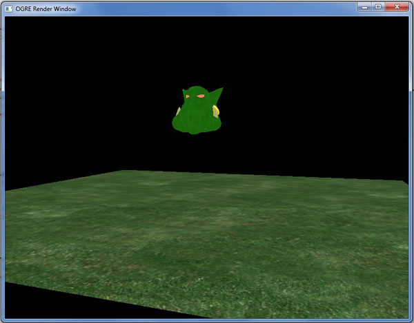
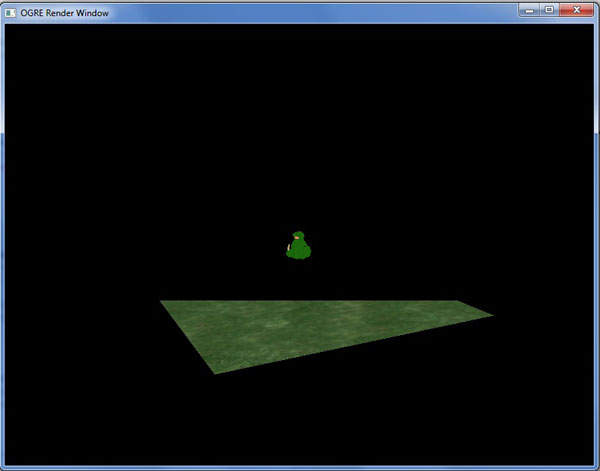
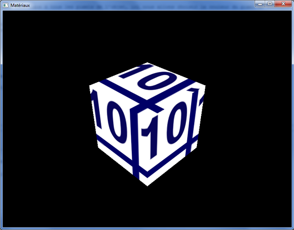

Ah, les jeux vidéo... Si vous êtes là, j'imagine que vous avez sûrement à un moment ou un autre voulu vous essayer à en programmer un, ne serait-ce que pour savoir comment on fait. Quels outils utilisent les professionnels ? Par où commencer et avec quels logiciels ? J'ai souvent vu ces questions sur le web, et je me les suis moi-même posées.
Ce tutoriel a pour objectif de vous apporter un élément de réponse en vous initiant au moteur 3D Ogre, outil libre et gratuit très utilisé par les développeurs en herbe désireux de s'essayer à la 3D interactive, mais aussi par des équipes talentueuses voulant finaliser leur projet avec une solution puissante et gratuite.
Plusieurs projets commerciaux basés sur Ogre ont en effet déjà vu le jour, certains sont très réussis ! On peut citer par exemple Pacific Storm, Ankh : Une aventure égyptienne, The Blob...
Au programme, je vous propose une présentation des notions de base dans Ogre puis de son fonctionnement interne. À partir de ces connaissances, nous pourrons nous plonger dans des techniques avancées de rendu ainsi que dans quelques bibliothèques externes se couplant très bien avec Ogre.
Avant de commencer à plonger nos mains dans le code, je vous propose une petite introduction à Ogre, pour que vous fassiez un peu plus connaissance. :D
Tout d'abord, il est important de cadrer précisément ce cours par rapport au sujet qu'il aborde. En effet, Ogre est un moteur 3D, je pense que vous l'avez compris. :D Mais qu'est-ce qu'un moteur 3D ? À quoi ça sert ?
Un moteur 3D est une API (i.e. il fournit un ensemble de fonctions) qui permet à son utilisateur, en l'occurrence vous, de représenter des objets dans un monde en trois dimensions. (On s'en serait douté en même temps. ^^ ) Le moteur 3D est un intermédiaire entre vous et les librairies graphiques de plus bas niveau comme DirectX ou OpenGL, qui permet donc de se passer des aspects les plus complexes de la gestion d'objets 3D. Le moteur gère lui-même les objets dans la scène et vous donne accès à des fonctions pour les manipuler et les afficher de façon optimale.
Généralement, un moteur 3D coûte très cher à développer, c'est pourquoi on ne crée pas un moteur 3D pour chaque jeu ! Le renouvellement d'un moteur sert généralement à prendre en compte de nouvelles fonctionnalités des librairies graphiques pour offrir plus de possibilités aux développeurs.
Cependant, il ne faut pas confondre moteur 3D (ou moteur graphique) et moteur de jeu, voire moteur physique par exemple. En effet, un moteur 3D ne contient pas de fonctions pour gérer les collisions entre les objets ni pour les entrées utilisateurs. Ceci sera fait à l'aide de bibliothèques différentes à intégrer au programme, mais ce n'est en aucun cas Ogre qui gérera ça.
Pour résumer, voici par exemple ce qu'Ogre nous permettra de faire :
afficher des personnages, bâtiments, paysages en 3D ;
gérer les lumières et les ombres ;
utiliser une ou plusieurs caméras ;
créer des effets de brouillards, flammes, fumées...
En gros, cela concerne tout ce que l'on voit à l'écran, tout ce qui est en rapport avec le rendu.
Au-delà de ça, Ogre s'occupe aussi de gérer la fenêtre de l'application en elle-même, c'est-à-dire le cadre avec les boutons pour agrandir ou fermer la fenêtre, en haut à droite. Sachez que même si vous affichez votre application en plein écran, il faut s'occuper de cet aspect avec le système d'exploitation, et Ogre permet de gérer cela.
Les connaissances requises
Un moteur 3D, comme tout programme, peut être codé dans de nombreux langages différents. Les plus populaires sont cependant le C, le C++ et plus récemment le C#, le langage utilisé par le framework XNA de Microsoft. Ogre est programmé en C++, il est donc indispensable d'avoir de bonnes bases dans ce domaine avant de s'attaquer à ce moteur. Vous aurez en effet suffisamment à faire pour apprendre le fonctionnement d'Ogre sans avoir besoin de vous embarrasser d'apprendre le C++ en parallèle.
De plus, comme un moteur 3D, c'est beaucoup de géométrie dans l'espace, il est quasiment indispensable d'avoir des connaissances mathématiques d'un niveau de première / terminale scientifique pour assimiler plus rapidement les notions. Les mathématiques supérieures constituent un avantage indéniable, même s'il est possible d'assimiler les principes avec un peu de persévérance.
Ce tutoriel conserve bien sûr l'objectif de partir du plus faible niveau possible (après tout, on est des Zéros dans l'âme :lol: ) mais ces bases vous éviteront de tourner et retourner certains points dans tous les sens. Vous voilà prévenus !
Un peu d'histoire
Le projet Ogre est né en 1999 de l'esprit d'un certain Steve Streeting, programmeur de talent connu sous le pseudonyme de sinbad et qui a eu l'idée de construire un moteur 3D indépendant de la plate-forme et de l'API utilisées (Direct3D ou OpenGL). Le projet est rapidement créé sur SourceForge au début de l'année 2000 et grossira progressivement sous la supervision de sinbad. Celui-ci se retire en avril 2010 pour des raisons de santé mais reste un contributeur actif.
La version 1.0.0 du moteur sort en février 2005 sous le nom de code AzaThot. Les versions 1.x se succèdent au fil des ans et de façon régulière, toujours avec un nom de code désignant une créature mystique. En avril 2010 est sortie la version 1.7.1, dénommée Cthugha, qui en profite pour changer de licence et passer en MIT en lieu et place de la LGPL utilisée jusqu'alors. Depuis novembre 2010, la révision 1.7.2 est disponible et c'est donc celle que nous utiliserons ici.
La communauté anglophone autour d'Ogre est plutôt active et le site officiel regorge de contributions diverses, tandis que la communauté francophone est plus restreinte.
Ah, difficile question que celle-ci ! Je vais essayer d'y répondre de la façon la plus complète possible. :D
Tout d'abord, Ogre est un projet open source, ce qui signifie que vous pouvez avoir accès aux sources du moteur et regarder comment il a été codé (bon, je vous préviens, ce n'est pas évident :p ), mais aussi que vous pouvez vous le procurer gratuitement, ce qui est déjà une condition sine qua non lorsque l'on part de zéro.
Ensuite, il y a encore beaucoup de moteurs gratuits. Je ne peux pas vraiment parler en détails de ceux-ci, sachant que je n'ai testé qu'Ogre. Cependant je me suis beaucoup documenté afin de faire le meilleur choix possible, ce qui a fait ressortir deux moteurs principaux : Irrlicht et Ogre.
Voici ce qui ressort le plus souvent des communautés.
Irrlicht est plus rapide à prendre en main qu'Ogre, notamment au niveau de l'installation, pas forcément bien documentée pour ce dernier en plus d'être souvent tortueuse, mais aussi de l'utilisation, plus simple. En revanche, Ogre est beaucoup plus complet, sachant qu'il y a beaucoup plus de classes disponibles (je ne les ai pas comptées, mais il y en a environ trois fois plus).
Les deux moteurs ont chacun leur public, dépendant des goûts. En ce qui me concerne, j'ai vu beaucoup plus de projets commerciaux basés sur Ogre que sur Irrlicht. Ce qui est certain, c'est qu'Ogre n'est pas évident à apprendre, mais il est très bien documenté, et sa communauté est, comme je l'ai dit plus haut, très active. Sa panoplie de logiciels annexes est assez conséquente, on retrouve notamment des extensions pour l'export de fichier à partir de logiciels de modélisation ou bien un logiciel de création de scène plutôt bien fait par exemple, qui fera l'objet d'un chapitre de ce cours.
Voilà : je pense que si vous êtes motivés, Ogre est largement à votre portée. Le fonctionnement de base du moteur n'est pas si compliqué une fois qu'on l'on se penche vraiment dessus, et il est surtout très puissant. ^^
Comme Ogre est un projet open source, il est disponible directement sur le site de SourceForge. Néanmoins, vous pouvez y accéder en passant par le site officiel, sur lequel vous trouverez notamment la documentation complète de cette (très) vaste bibliothèque.
À l'heure où j'écris ces lignes, la dernière version stable est la 1.7.2, que vous pouvez télécharger en cliquant sur le lien correspondant à votre plate-forme : Visual Studio si vous êtes sous l'IDE de Microsoft, sinon vous trouverez les versions Mac OS X pour les possesseurs de machine Apple et MinGW si vous utilisez Code::Blocks par exemple.
Concernant Linux, la démarche d'installation au chapitre suivant inclut le téléchargement des paquets nécessaires, vous pouvez donc y passer directement.
Enfin, pour chaque plate-forme, si vous êtes des habitués de la méthode, il est possible de compiler vous-mêmes les sources après les avoir téléchargées ici.
Installation
Windows
Une fois que vous avez téléchargé le fichier exécutable, exécutez-le et choisissez un répertoire d'extraction. En ce qui me concerne je le place généralement dans C:/OgreSDK, mais vous êtes libres de choisir un autre répertoire. Notez bien le chemin que vous aurez choisi puisque nous en aurons besoin pour configurer nos projets et copier les bibliothèques nécessaires.
Il est à noter que contrairement aux précédentes versions, la 1.7.2 n'a pas d'installation à proprement parler, elle ne fait que décompresser le dossier contenant les fichiers nécessaires au fonctionnement d'Ogre. Ne soyez donc pas surpris si la méthode est un peu inhabituelle.
Mac OS X
Double-cliquez sur le fichier .dmg téléchargé, ce qui doit ouvrir une fenêtre avec un dossier OgreSDK. Il vous suffit de le placer à l'endroit où vous voulez installer Ogre, il est recommandé de choisir le dossier /Developer/SDKs/ qui est le plus approprié.
Vous avez finalement bel et bien décidé de vous attaquer à Ogre ? Téléchargé et décompressé vos fichiers ?
Parfait ! Passons tout de suite à la configuration de notre premier projet !
Vous y voilà. Vous avez téléchargé et installé Ogre, lancé votre IDE favori, vous êtes prêts à afficher votre premier million de polygones. Bon, pas trop vite tout de même. Il va d'abord falloir configurer votre IDE pour qu'il trouve les librairies d'Ogre et vous permette de compiler tranquillement.
Si vous avez déjà essayeé d'utiliser Ogre, vous avez probablement eu des problèmes pour lancer une application sans avoir des myriades d'erreurs. La configuration manque en effet de documentation, c'est pour ça que je vais vous guider pas à pas.
Ouvrez Visual Studio et allez dans Fichier ? Nouveau ? Projet... et choisissez un projet vide auquel vous donnez un nom.
Une fois ce projet créé, faites un clic droit sur le nom du projet puis choisissez les propriétés.
Dans la fenêtre qui s'ouvre, commencez par modifier la configuration en haut à gauche et choisissez "Toutes les configurations". Allez ensuite dans Propriétés de configuration ? Répertoires de VC++. Dans la fenêtre de droite, cliquez sur la liste correspondant aux fichiers include, choisissez Modifier, puis ajoutez ces trois chemins en cliquant sur l'icône de création.
[Chemin vers Ogre]\boost_1_42
[Chemin vers Ogre]\include
[Chemin vers Ogre]\include\OGRE
Faites de même pour les répertoires de bibliothèques bibliothèques, et ajoutez ces deux chemins :
[Chemin vers Ogre]\boost_1_42\lib
[Chemin vers Ogre]\lib\$(Configuration)
Sélectionnez maintenant "Débogage" et complétez le répertoire de travail : $(SolutionDir)$(Configuration).
Enfin passez maintenant à la configuration "Release", allez dans Éditeur de liens, Entrée et ajoutez deux dépendances supplémentaires : OgreMain.lib et OIS.lib. Faites de même pour la configuration Debug avec les dépendances OgreMain_d.lib et OIS_d.lib.
Voilà, votre projet est prêt à être compilé !
Code::Blocks
Ouvrez Code::Blocks et créez un nouveau projet vide, choisissez GNU GCC en tant que compilateur. Faites un clic droit sur le projet nouvellement créé, et allez dans "Build Options...".
À gauche, ne choisissez ni "Debug" ni "Release", mais le nom de votre projet pour modifier les deux configurations en même temps.
Allez dans "Search directories" et dans l'onglet "Compiler" ajoutez les chemins suivants :
[Chemin vers Ogre]\boost_1_44
[Chemin vers Ogre]\include
[Chemin vers Ogre]\include\OGRE
Puis dans "Linker", ajoutez ceux-ci :
[Chemin vers Ogre]\boost_1_44\lib
[Chemin vers Ogre]\lib\$(TARGET_NAME)
Ensuite, allez dans "Linker Settings", et dans la case "Other Linker Options", écrivez : -Wl,--enable-auto-import .
Toujours dans "Linker Settings", choisissez cette fois la configuration debug et dans "Link Libraries" ajoutez les deux fichiers :
OgreMain_d
OIS_d
Et pour le release :
OgreMain
OIS
Fermez la fenêtre puis ouvrez les propriétés du projet (clic droit, Properties...), ouvrez l'onglet "Build Targets" et dans le champ "Execution working dir" entrez "bin\Debug" pour la configuration Debug (à choisir dans le menu de gauche) et "bin\Release" pour la configuration Release.
Pour terminer, aller dans Settings ? Compiler and Debugger... puis dans les paramètres de GNU choisissez le répertoire où vous avez installé MinGW 4.5.
Sous Linux
Beaucoup d'utilisateurs sous Linux préfèrent compiler les codes sources à la main, mais ce n'est pas le cas de tout le monde. Voici donc une méthode pour installer directement Ogre et compiler vos projets avec cmake.
Cette méthode est en grande partie inspirée de cette page, avec quelques ajouts.
Ajoutez au fichier /etc/apt/sources.list les lignes :
deb http://ppa.launchpad.net/ogre-team/ogre/ubuntu karmic main
deb-src http://ppa.launchpad.net/ogre-team/ogre/ubuntu karmic main
Une fois que c'est fait, mettez votre liste de paquets à jour et installez les paquets suivants :
Maintenant, créez un répertoire pour votre projet. Ajoutez-y un fichier CMakeLists.txt avec pour contenu :
project(VotreProjet)
cmake_minimum_required(VERSION 2.6)
set(CMAKE_MODULE_PATH "/usr/lib/OGRE/cmake/")
#set(CMAKE_CXX_FLAGS "-Wall -W -Werror -ansi -pedantic -g")
# Il s'agit du tutoriel d'exemple, qui utilise quelques fichiers prédéfinis de Ogre. Il faut indiquer à cmake où se trouvent les includes en question
include_directories ("/usr/share/OGRE/Samples/Common/include/")
# Bien sûr, pour compiler Ogre, il faut le chercher, et définir le répertoire contenant les includes.
find_package(OGRE REQUIRED)
include_directories (${OGRE_INCLUDE_DIRS})
# L'exemple dépend aussi de OIS, une lib pour gérer la souris, clavier, joystick...
find_package(OIS REQUIRED)
# On définit les sources qu'on veut compiler
SET(SOURCES
main.cpp)
# On les compile
add_executable (
VotreProjet ${SOURCES}
)
target_link_libraries(VotreProjet ${OGRE_LIBRARY} ${OIS_LIBRARY})
Remplacer "VotreProjet" par le nom à donner à votre projet. Vous aurez de plus à modifier la liste des sources lorsque vous ajouterez des fichiers.
Ensuite (une fois que vous aurez votre code), vous pourrez lancer les commandes suivantes depuis le répertoire du projet :
cmake .
make
./VotreProjet
Enfin, vous aurez besoin de ces deux fichiers dans le répertoire de votre projet :
Pour terminer, je vous conseille de mettre vos drivers graphiques à jour si ce n'est pas fait, c'est une source d'erreur à l'exécution.
Sous Mac OSX
Comme je le disais en introduction, je n'ai pas pu mettre la main sur un Mac pour tester l'installation. Cependant, je suppose que le dossier OgreSDK contient les librairies et includes nécessaires et que la configuration de l'IDE ressemble à celle de Windows. Il est à noter que Xcode est l'IDE qui revient le plus souvent pour utiliser Ogre ; un projet (au chemin OgreSDK/Samples/Samples.xcodeproj) étant normalement présent dans l'installation, il peut vous aider à configurer votre IDE.
N'hésitez pas à m'envoyer un MP si vous avez des précisions. :)
Les fichiers à récupérer
Une fois que votre projet sera compilé, il aura aussi besoin d'avoir des bibliothèques indispensables à son fonctionnement dans le dossier de compilation et des fichiers de configuration adaptés à votre installation.
Allez donc dans le dossier d'installation d'Ogre, puis dans bin, puis release (ou debug si vous voulez compiler en Debug). Ici, copiez tous les fichiers dans le répertoire de l'exécutable de votre programme (avec Visual Studio : [Nom Du Projet]/release/ , avec Code::Blocks : [Nom Du Projet]/bin/release/).
Notez que tous ne sont pas obligatoires (pas au début du moins) et que vous pouvez vous contenter de ceux-ci :
plugins.cfg ;
resources.cfg ;
OgreMain.dll ;
cg.dll ;
OIS.dll ;
Les fichiers Plugins_***.dll ;
RenderSystem_Direct3D9.dll ;
RenderSystem_GL.dll.
Je vous conseille néanmoins de tout copier, ce sera fait. ^^
Il faut maintenant éditer le fichier de configuration "resources.cfg" fraîchement copié. En l'ouvrant vous constatez qu'ils contient des chemins relatifs vers des sous-dossiers du dossier "media", situé dans le répertoire d'Ogre. Il va donc falloir adapter les chemins indiqués pour qu'ils pointent sur le dossier où vous avez choisi d'extraire Ogre (les chemins absolus sont possibles).
Par exemple, voici comment j'ai édité la première ligne chez moi :
Comme vous pouvez le voir, il y a pas mal de lignes pour pas grand-chose au final. En effet, si vous exécutez cela, il ne se passe rien, ce qui est normal si vous avez jeté un œil au code : je n'ai rien mis dans mon bloc try{} ! C'est simplement le code minimal à avoir pour compiler. Vous voyez plusieurs instructions au préprocesseur qui ont pour but de permettre une plus grande compatibilité en fonction de la plate-forme sur laquelle vous vous trouvez.
Le bloc try{}catch{} nous permettra d'avoir des informations sur les exceptions levées par Ogre lors de l'exécution ; par exemple si un fichier demandé lors du fonctionnement n'est pas trouvé, vous aurez une boîte de dialogue vous indiquant la nature de l'erreur.
J'ai aussi inclus le fichier Ogre.h afin de pouvoir compiler, la classe Exception étant une classe d'Ogre.
J'en profite pour signaler que l'ensemble des classes et des types de données définis par Ogre se situe dans le namespace Ogre. Personnellement, j'utilise la ligne using namespace Ogre; dans mes projets si je n'ai pas de risque de conflits avec une autre librairie.
On va tout de suite créer notre première classe pour pouvoir ouvrir une fenêtre à l'écran.
Notre première classe
La classe ExampleApplication
Il faut savoir que j'ai beaucoup hésité en préparant ce début de cours, quant à la présentation que j'allais faire d'Ogre au début et des premiers codes que j'allais vous montrer.
Ogre nous fournit dans ses include une classe fort pratique pour les débutants qui veulent s'essayer à Ogre, et qui n'ont pas forcément la motivation de s'attarder sur les aspects techniques, notamment le démarrage du moteur, lorsqu'ils découvrent Ogre. Cette classe s'appelle ExampleApplication.h et contient un code de base pour lancer votre application dans de bonnes conditions.
Attention, cependant : cette classe peut être à utiliser au début pour découvrir rapidement les fonctionnalités d'Ogre, mais elle devra rapidement être oubliée au profit d'une architecture « maison » où vous créerez uniquement ce dont vous avez besoin. En effet, la classe ExampleApplication n'est pas optimisée pour la performance ni pour l'évolutivité ; c'est un exemple, comme son nom l'indique si bien. :lol:
Toujours est-il qu'après réflexion, j'ai décidé d'utiliser cette classe dans la première partie pour que vous puissiez manipuler rapidement vos premières scènes. Dès la seconde partie, je vous montrerai comment nous en affranchir en créant notre propre classe pour lancer Ogre.
Implémentation
Il est très simple de lancer un programme en utilisant la classe d'exemple. Celle-ci contient en effet de quoi créer les objets indispensables à Ogre, elle prévoit une gestion basique de la souris pour la caméra et vous propose même une fenêtre de démarrage pour choisir les paramètres de votre application, comme la taille de la fenêtre ou l'API de rendu.
Cependant, c'est une classe abstraite ; par conséquent, pour l'utiliser, il va falloir réimplémenter la méthode createScene() dans notre code, qui est la seule méthode virtuelle pure de la classe.
Créez donc un fichier PremiereApplication.h avec le code suivant :
#include "ExampleApplication.h"
class PremiereApplication : public ExampleApplication
{
public:
void createScene()
{
}
};
Faites un include de ce fichier dans main.cpp, et instanciez votre classe dans la fonction main, juste avant le bloc try{}catch{}. Enfin dans le bloc try, il suffit de lancer l'application avec la méthode go() définie dans la classe ExampleApplication.
Vous pouvez maintenant compiler votre code et l'exécuter.
Si tout se passe bien, une première fenêtre de configuration doit apparaitre à l'écran. Si la zone d'édition est vide, déroulez le menu et choisissez Direct3D ou OpenGL. Vous pouvez alors modifier entre autres la résolution, le mode plein écran ou la synchronisation verticale dans les options en dessous. Vérifiez que la carte graphique sélectionnée ("Rendering Device") correspond bien à celle que vous avez, puis validez votre fenêtre.
Une nouvelle fenêtre noire s'affiche alors, que vous pouvez quitter en appuyant sur Echap.
Notez qu'un fichier ogre.cfg a été créé dans le dossier de l'exécutable. Il contient les informations entrées dans la fenêtre de configuration, vous n'aurez donc a priori pas à renseigner à nouveau ces valeurs lors d'une future exécution du projet.
Et voilà ! L'étape qui rebute le plus souvent les novices d'Ogre n'était finalement pas si difficile que ça, si on sait où aller. Vous pouvez maintenant passer à la suite sereinement pour afficher un modèle dans la scène.
Vous avez donc devant vous votre première fenêtre. Noire.
En fait elle n'est pas noire, c'est simplement que votre scène est complètement vide !
Où elle est la scène ? Je vois pas de rideau ni de planches, moi... :euh:
:lol: C'est normal : la scène, c'est la désignation de l'espace que vous visualisez dans votre fenêtre, c'est ce qui contient tout les objets que vous allez utiliser. La scène, c'est le monde que vous créez.
Donc, c'est bien gentil, mais vous la trouvez un peu terne, notre scène ? Qu'à cela ne tienne, nous allons égayer un peu tout ça !
Une entité, c'est la représentation dans la scène d'un modèle 3D, aussi appelé mesh (mesh signifie maillage en anglais).
Le mesh est l'ensemble des polygones élémentaires (des quadrilatères et des triangles, le plus souvent) que l'on crée dans un logiciel de modélisation, comme Blender ou Maya, et qui constituent votre modèle 3D complet. Tout ces polygones sont reliés entre eux par leurs sommets, aussi appelés vertices en anglais (un vertex, des vertices). Plus il y a de vertices, et donc de polygones, plus le mesh est précis. Généralement, le mesh possède aussi une ou plusieurs textures (une image plaquée sur les polygones) qui lui donnent un aspect plus réaliste qu'une couleur unie lors du rendu. Enfin, pour certains modèles comme les personnages, le mesh possède un squelette qui permet de créer des animations pour son mouvement.
Un mesh représentant une sphère. Les vertices sont les points bleus.
Afin de gérer ces différentes caractéristiques des modèles, Ogre enregistre toutes ces informations dans une entité. Tous les objets solides qui apparaissent à l'écran sont donc des entités et sont représentés par une seule et même classe dans Ogre : la classe Entity. Avant de nous pencher dessus, nous allons ouvrir une petite parenthèse pour me permettre d'introduire une classe centrale dans la gestion de la scène, le SceneManager.
Le SceneManager en deux mots
Afin de pouvoir gérer l'ensemble des objets de notre scène tout au long du déroulement du programme, Ogre introduit la classe SceneManager.
Concrètement, le SceneManager s'occupe de garder une trace de tous les modèles, lumières, caméra et autres objets que peut contenir la scène. C'est à lui que revient la tâche de créer tous ces objets et de nous permettre ensuite d'y accéder. Par conséquent, l'insertion d'objets dans la scène passe toujours par lui (ou par l'un des éléments déjà insérés) et par les méthodes qu'il propose pour cela. Il en existe diverses variantes en fonction de la scène que l'on veut réaliser ; selon que celle-ci sera en intérieur ou en extérieur, par exemple, on pourra utiliser un SceneManager différent.
Toutes les applications Ogre doivent donc avoir un SceneManager pour pouvoir fonctionner, puisque c'est lui qui s'occupe de tout ! La classe ExampleApplication ne fait pas exception et possède donc un attribut mSceneMgr, qui est un pointeur sur le SceneManager de l'application et qui nous permettra dans les parties suivantes d'agrémenter notre scène avec des objets.
Nous ne nous préoccuperons pas pour l'instant de sa création, nous verrons cela en ouvrant la boîte noire du démarrage de la machine Ogre, mais il est important de le connaître pour comprendre comment seront créés nos objets.
Créer une entité
L'entité, comme je l'ai dit, doit être créée par le SceneManager pour pouvoir être ajoutée à la scène. La méthode createEntity() permet justement de faire tout cela.
Le premier paramètre est le nom que vous souhaitez donner au mesh, et qui permettra éventuellement par la suite de récupérer un pointeur sur votre entité si vous connaissez son nom. Pour cela on utilisera donc... Le SceneManager, oui !
Le second paramètre est le nom du fichier que vous voulez charger. Notez l'extension .mesh, qui est le format de fichiers pour les modèles reconnu par Ogre. Le fichier que j'ai choisi se trouve, accompagné d'autres modèles d'exemples, dans le dossier OgreSDK/media/models, qui doit être correctement renseigné dans le fichier resources.cfg pour qu'Ogre puisse le trouver lors de l'exécution. Dans le cas contraire, une exception sera levée au démarrage, d'où un plantage si elle n'est pas traitée.
Voilà tout ce qu'il fallait faire pour ajouter un mesh dans la scène ! Attention cependant, il nous manque encore une chose avant de pouvoir l'afficher à l'écran...
Dans Ogre, lorsque l'on souhaite manipuler une entité (un personnage, une lumière, une caméra...), on n'agit en fait jamais directement sur celle-ci. Tous les déplacements que l'on veut effectuer se font par l'intermédiaire d'un noeud de scène, ou SceneNode.
Un SceneNode est un objet invisible auquel on va pouvoir attacher un nombre indéfini d'entités, lesquelles deviennent solidaires de ce noeud et subissent donc les même transformations que lui. C'est donc une sorte de conteneur qui contient les informations de positionnement de chacune des entités de la scène qui lui sont rattachées.
Mais pourquoi on s'embête à créer un noeud alors qu'on pourrait déplacer nos entités directement ? Ogre doit bien savoir faire ça, quand même !
Si le système permettait de procéder de cette façon, en déplaçant nos entités une par une, on en arriverait vite à faire plusieurs fois les mêmes déplacements lors de la mise à jour de notre scène.
En effet, lorsque vous voyez un objet 3D à l'écran, celui-ci peut être constitué de plusieurs entités. Un personnage pourra par exemple avoir un corps (on l'espère pour lui :lol: ) mais aussi une arme, un chapeau, et puis il pourrait monter sur une moto aussi ! Tous ces objets seront probablement enregistrés dans des fichiers distincts par le graphiste 3D, pour être le plus souple possible.
Ainsi, lorsque l'on veut déplacer notre personnage vers l'avant, sans les noeuds il faudrait déplacer chaque petit élément un par un, ce qui deviendrait vite infernal.
Avec les noeuds, il me suffira d'enregistrer une fois chaque entité que je veux attacher à mon noeud, qui s'occupera de faire les déplacements nécessaires pour chaque entité lorsque j'aurai des transformations à effectuer.
Créer un noeud
Comme pour les entités, on ne créera pas de noeud de scène en utilisant le constructeur de la classe. On devra passer par un noeud déjà existant, ce qui va nous permettre d'avoir des relations d'héritage entre nos noeuds. De la même manière que l'on va attacher les entités à nos noeuds, ceux-ci peuvent avoir un noeud parent, lui-même enfant d'un autre noeud, et ainsi de suite jusqu'au noeud appelé « racine » de la scène.
Pour cela, les noeuds de scène ont une méthode dédiée :
Mais comment fait-on pour le premier noeud qu'on va créer ? Il ne peut pas avoir de père si c'est le premier ! Je savais que j'aurais dû étudier le problème de l'oeuf ou de la poule avant de venir... :(
Sachez que le noeud « racine » que j'ai cité tout à l'heure existe dès que le SceneManager est créé, et que c'est un noeud comme un autre, avec les même méthodes.
Nous allons donc créer un noeud enfant du noeud racine de la scène que nous récupérons à l'aide du SceneManager :
Ici la méthode getRootSceneNode() nous permet de récupérer un pointeur sur le noeud racine unique de la scène. On appelle ensuite sa méthode createChildSceneNode pour lui ajouter un nouveau noeud fils.
Notez qu'aucun des paramètres de la méthode n'est obligatoire, mais que je les ai écrits pour information. Le premier argument est le nom que vous voulez donner à votre noeud et qui pourra être utilisé pour récupérer un pointeur vers celui-ci, sur le même principe que les entités. Les deuxième et troisième arguments sont respectivement la position et le quaternion avec lesquels vous voulez initialiser votre noeud.
Le quart d'oignon ? On fait de la cuisine, maintenant ?
Oui, j'avoue que c'est un nom un peu barbare qui m'a aussi fait un peu peur au début. J'y reviendrai en détail ultérieurement pour vous expliquer de quoi il s'agit. Sachez pour le moment qu'un quaternion est un objet mathématique qui permet de faire faire aux objets des rotations dans l'espace, et que la valeur initiale que je lui ai donnée lui dit de ne pas faire de rotation, justement. ^^
Avec ce code en main, vous pouvez simplement attacher l'entité précédemment créée au noeud avec la ligne suivante :
node->attachObject(head);
En compilant, vous devriez voir la tête d'un ogre au milieu de l'écran.
Vous pouvez déplacer la caméra avec Z, S, Q, D et la souris pour voir ce que ça donne de plus près.
Pour terminer, nous pouvons rajouter un sol à notre scène, pour éviter que notre tête d'Ogre se sente trop seule. :euh:
Nous allons pour cela créer nous-mêmes notre propre mesh, étant donné que nous n'avons besoin que d'un plan pour le sol. C'est un mesh que l'on peut créer très simplement dans le code de notre application.
Le mesh
Nous voulons un rectangle pour notre sol. Pour cela, nous pouvons utiliser la classe Plane, qui va nous permettre de générer... un plan ! Je vois que vous avez décidé de vous mettre à l'anglais. :p
Nous allons donc créer un plan, pour lequel nous allons définir son vecteur normal, c'est-à-dire le vecteur perpendiculaire au plan : ici l'axe Y pour que notre plan soit horizontal. Le second paramètre est la distance à l'origine de la scène dans le sens du vecteur normal : ici, je mets 0 pour que mon mesh plan soit centré. En mettant une valeur positive par exemple, mon plan se retrouverait plus haut.
Plane plan(Vector3::UNIT_Y, 0);
Une fois le plan créé, il faut que l'on crée un mesh, c'est-à-dire l'objet 3D en lui-même, la représentation du plan qui sera visible dans la scène.
Pour cela, on utilise le Mesh Manager, qui va s'occuper de créer les faces de notre mesh.
Quelques explications sur cette ligne s'imposent. Tout d'abord, la méthode statique getSingleton() est un peu particulière, j'y reviendrai lorsque l'on mettra un peu plus les mains dans le cambouis ; sachez pour l'instant qu'elle permet de récupérer un objet instancié de façon unique, donc ici notre MeshManager.
Ensuite, les paramètres de la méthode createPlane sont assez simples. Les deux premiers correspondent respectivement au nom que l'on veut donner à notre mesh et au nom du groupe auquel on veut qu'il appartienne. Suivent ensuite le nom du plan à modéliser, puis la largeur et la hauteur qu'il doit avoir, puis le nombre de subdivisions du plan dans ces deux sens. Plus il y a de subdivisions, plus il y a de polygones dans notre mesh. Le booléen suivant indique que les normales sont perpendiculaires au plan. Les trois paramètres suivants sont le nombre de textures que l'on va pouvoir assigner au plan, puis le nombre de fois que la texture sera répétée dans les deux directions. Enfin, le dernier paramètre est le vecteur indiquant la direction du haut du mesh. Attention : il ne faut pas le confondre avec la normale du plan, qui est différente. Il reste encore des paramètres par défaut que je n'ai pas modifiés, ce n'est pas du niveau du chapitre.
Enfin, nous allons revenir vers un code connu : nous allons créer l'entité qui représentera le plan. C'est le même principe que tout à l'heure : tout d'abord, on crée une entité à partir du Scene Manager en la nommant et en lui indiquant le mesh à utiliser. On crée ensuite un nouveau noeud à partir du noeud racine et on l'attache à notre entité.
Nous allons finir en ajoutant une texture au sol, sinon il risque de paraître un peu triste. ^^
Je vous propose de mettre de l'herbe par terre. Pour cela, il suffit de rajouter la ligne suivante après la création de l'entité :
ent->setMaterialName("Examples/GrassFloor");
Si vous voulez connaître les matériaux fournis avec Ogre, il vous suffit d'aller dans le dossier media/materials/scripts. Ici, j'ai pris le matériau GrassFloor enregistré dans le fichier Examples.material. Les textures correspondantes se trouvent dans le dossier media/materials/textures, si vous voulez faire des essais. ;)
Je reviendrai plus tard en détail sur les matériaux, le sujet méritera que l'on s'y attarde. :)
Vous pouvez maintenant exécuter votre programme.
Lancez l'application et remontez la caméra avec la souris et les touches de déplacement, vous devriez voir quelque chose ressemblant à la capture suivante.
Euh... La tête d'Ogre est coupée par le sol en herbe...
En effet, notre plan est centré sur l'origine de la scène, et l'on a aussi placé notre tête à l'origine. Mais quelle partie de la tête est à l'altitude 0 ?
Ici, c'est donc un point au milieu de la tête, puisque le plan d'herbe passe par là. Cependant, ce point n'est pas nécessairement au milieu de l'objet que vous intégrez. Cela dépend de la personne qui a modélisé l'objet et qui a donc décidé par rapport à quel point on allait définir la position du mesh. Pour un personnage, on pourrait mettre ce point à ses pieds, pour que l'altitude 0 corresponde effectivement au moment où le personnage touche le sol avec ses pieds.
Pour corriger cela, il va falloir remonter notre noeud lié à notre entité. C'est l'objet du prochain chapitre.
Voilà : cette fois, vous avez vraiment mis les pieds dans Ogre3D en insérant un modèle dans la scène. Dans le prochain chapitre, nous allons apprendre à déplacer des nœuds et à nous déplacer au sein de l'environnement 3D.
Bon : nous avons réussi à afficher une tête d'Ogre et un plan d'herbe dans le chapitre précédent.
Mais maintenant, il faudrait peut-être savoir comment on va bouger notre ogre, qu'il n'ait pas l'air d'avoir été enterré vivant... Enfin ça, ce sera après avoir jeté un oeil au système de coordonnées de l'espace, un peu de théorie ne fait pas de mal. ^^
Un repère est un ensemble de trois droites, appelées « axes », qui définissent la convention utilisée pour enregistrer l'état d'objets se trouvant dans l'espace. Afin de simplifier au maximum le repère, ces trois axes sont choisis pour que chacun soit orthogonal (perpendiculaire) aux deux autres : on l'appelle alors repère orthogonal.
On y ajoute une contrainte supplémentaire, disant que les vecteurs directeurs de ces axes sont de longueur 1, ce qui donne un repère orthonormé.
Pourquoi main droite ?
Nous avons vu que les trois axes du repère étaient orthogonaux, mais dans quel sens sont-ils orientés ? En effet, comme les axes sont des droites, comment savoir si l'on doit aller dans un sens ou dans l'autre si l'on veut se déplacer le long d'un axe ? Nous avons donc besoin d'un sens, défini par la règle de la main droite.
Regardez votre main droite et placez-la comme sur l'image. Votre pouce représente l'axe X, votre index l'axe Y et votre majeur l'axe Z. La direction dans laquelle pointe chacun de vos doigts définit le sens de chaque axe.
Repère local, repère absolu
Pour l'instant, nous n'avons toujours pas défini comment le repère était placé dans la scène. En effet, quel axe pointe dans quelle direction ? Là encore, c'est une question de convention adoptée pour les applications 3D.
On prendra donc, pour le repère de la scène, l'axe Y dirigé vers le haut et les axes X et Z dans un plan horizontal.
Seulement, la scène n'est pas la seule à avoir son repère. En effet, chaque objet possède son propre repère appelé repère local. Lorsque l'objet se déplace ou tourne sur lui-même, le repère local fait de même. L'orientation du repère local est la suivante : l'axe Y est dirigé vers le haut de l'objet, pour la scène, tandis que l'axe X est dirigé vers sa droite et l'axe Z vers l'arrière de l'objet.
Ci-dessous, j'ai représenté en noir le repère de la scène, et en bleu le repère local de la voiture, en respectant la convention que j'ai donnée.
Nous verrons à quoi servent ces différents repères lorsque l'on commencera à déplacer nos objets.
Yaw, pitch, roll
Le yaw pitch roll, ce n'est pas un nouveau genre de musique, non. Ce sont les désignations anglaises pour les rotations autour des axes Y, X et Z respectivement. On peut traduire ces termes par lacet (yaw), tangage (pitch) et roulis (roll), qui sont utilisés par exemple en aéronautique ou en navigation, mais je préfère que vous les reteniez en anglais.
Pourquoi cela ? L'anglais ne m'aime pas ! Je n'y peux rien ! :(
J'imagine qu'il y en a parmi vous qui sont anglophobes, mais comme on vous l'a sûrement déjà dit, pour programmer il est essentiel de connaître un minimum d'anglais. En l'occurrence, ces trois termes se retrouveront dans les noms qu'Ogre donne aux méthodes permettant d'effectuer des rotations. Autant donc vous familiariser tout de suite avec eux, vous serez plus à même de rechercher les méthodes qui vous intéresseront en temps voulu.
Voici tout de suite un schéma illustrant les rotations qui s'appliquent à chaque axe :
Comme vous pouvez le constater, il y a un sens donné aux flèches sur ce dessin. C'est parce que tout comme l'orientation des axes de notre repère, il y a un sens direct et un sens indirect pour les rotations ! Ainsi, en imaginant que vous vous teniez le long d'un axe, avec vos pieds à l'origine et votre tête au bout de la flèche, vous tournerez dans le sens direct si vous vous tournez vers la gauche.
Il est important de savoir si l'on doit ou non aller dans le sens direct pour une rotation, puisque c'est de cette manière que vous déterminerez si vous devez tourner d'un angle positif (sens direct) ou négatif (sens indirect).
Pour effectuer une rotation, on appelle la méthode correspondante pour le n?ud :
node->yaw(Radian(Math::PI));
Ceci fera faire un demi-tour au n?ud par rapport à son axe vertical tandis que les méthodes pitch() et roll() s'utilisent de façon analogue pour les autres axes. La rotation se fait par défaut par rapport au repère local. Il faut renseigner le second paramètre si vous voulez qu'il en soit autrement (voir la section suivante).
Si vous ne connaissez pas les radians, sachez que c'est l'unité de mesure d'angles la plus commune en mathématiques. Dans cette unité, la valeur PI (\pi) est équivalente à 180°, soit un demi-tour. Pour utiliser tout de même des degrés dans Ogre, vous devrez utiliser la classe Degree. La ligne de code précédente est équivalente à ceci :
Nous allons maintenant déplacer notre tête d'ogre pour vérifier la théorie et enfin sortir notre tête de terre !
Pour cela, nous allons donc - si vous avez bien suivi - passer par le n?ud auquel est rattaché notre mesh. Celui-ci possède deux méthodes qui peuvent nous servir.
setPosition()
La première est la méthode setPosition(), prenant en paramètre les trois coordonnées X, Y et Z du point auquel on désire placer le n?ud. On peut aussi lui passer un Vector3, qui contiendra lui-même ces coordonnées.
Les deux codes suivants sont donc équivalents.
Vector3 position = Vector3(30.0, 50.0, 0.0);
node->setPosition(position);
node->setPosition(30.0, 50.0, 0.0);
La tête s'est maintenant déplacée vers la droite de 30 unités et de 50 unités vers le haut.
translate()
La seconde méthode utilisable pour le déplacement est translate(), qui déplace le n?ud par rapport à sa position actuelle plutôt que par rapport à l'origine de la scène. Elle prend les mêmes paramètres que la méthode setPosition(), mais avec un paramètre supplémentaire, défini par défaut, indiquant le n?ud par rapport auquel on va se déplacer.
node->translate(-30.0, 50.0, 0.0);
En ajoutant cette ligne après la précédente, notre objet se retrouve donc maintenant à la position (0, 100, 0) dans la scène, ce qui est suffisant pour qu'il surplombe son petit jardin. ;)

Tu as parlé d'un paramètre supplémentaire, qu'est-ce que c'est ?
C'est un paramètre pouvant prendre trois valeurs différentes qui définit par rapport à quel repère on va se déplacer. Voici les trois valeur qui sont acceptées :
Node::TS_LOCAL
Node::TS_PARENT
Node::TS_WORLD
La première va déplacer le nœud par rapport au repère local, la seconde par rapport au repère du nœud parent, et la troisième par rapport au repère de la scène, qui est le repère absolu.
Concrètement, ça veut dire quoi ?
Tout à l'heure, lorsque l'on a effectué une translation, on l'a fait par défaut par rapport au repère TS_WORLD, c'est-à-dire avec les axes tels que je vous les ai présentés précédemment. Maintenant, nous pouvons déplacer notre n?ud par rapport au repère local de son n?ud père par exemple, ou bien même par rapport à son propre repère local.
Mais à quoi ça sert de s'embêter avec ces paramètres ? On risque de faire des erreurs si l'on se place par rapport à un repère différent de la scène !
Prenons un exemple. Vous avez un vaisseau spatial qui peut se trouver dans n'importe quelles position et orientation de l'espace. Comment savoir facilement dans quelle direction je dois faire ma translation pour qu'on le voit aller en avant ?
Réponse : je n'ai pas à m'en occuper ! En effet, l'axe qui va de l'avant vers l'arrière du vaisseau est l'axe Z, dans son repère local. Par conséquent, je n'ai qu'à dire à mon vaisseau d'avancer le long de l'axe Z (dans le sens négatif pour aller à l'avant) par rapport à son repère local. Et Ogre s'occupera gentiment de faire les calculs pour placer mon vaisseau correctement dans la scène.
Allez, comme vous êtes sages, je vous mets un bon point et une image une petite illustration pour visualiser tout ça.
Si vous avez compris cela, le paramètre TS_PARENT devrait suivre tout seul. Reprenons notre engin spatial. Sur ce vaisseau, on trouve R2D2 en train de se déplacer vers la droite, correspondant donc à l'axe X local du n?ud du vaisseau. Pour effectuer cette translation, je n'ai qu'à demander à Ogre de déplacer mon robot le long de l'axe des abscisses par rapport au n?ud du vaisseau (qui serait logiquement le n?ud parent). Et le tour est joué. ^^
Vous commencez à comprendre l'intérêt des relations de parenté entre les n?uds ? Ceux qui répondent non, j'en fais mon affaire ! :pirate:
Après cet exemple haut en couleur, revenons à quelque chose de plus humble pour notre niveau de Zéro. :p
Maintenant que l'on a un peu déplacé notre tête d'Ogre, on va voir comment placer la caméra pour qu'elle la voie sous son meilleur jour dès que l'application démarre. La caméra, c'est l'élément qui définit la position de notre point de vue dans la scène, dans quelle direction on regarde, mais aussi jusqu'à quelle distance il est possible de voir s'afficher les objets éloignés.
Comme tous les éléments de base, un attribut caméra est présent dans la classe ExampleApplication. Sans elle nous n'aurions pas encore pu voir notre scène, vu que nous n'avons rien fait pour la créer !
Création
La caméra est créée dans une méthode appelée createCamera() de la classe ExampleApplication, que nous allons tout de suite redéfinir pour partir sur des bases connues. L'attribut correspondant à la caméra est appelé mCamera, nous pouvons donc l'utiliser pour créer notre caméra.
Comme c'est un objet qui se trouve dans la scène, nous allons passer - je vous le donne en mille - par le SceneManager. Comme pour les n?uds ou les entités, vous pourrez donner un nom à votre caméra sous forme d'une chaîne de caractères.
Ajoutez la méthode createCamera() à votre classe PremiereApplication et ajoutez-y la ligne suivante.
mCamera = mSceneMgr->createCamera("Ma Camera");
Placement
Maintenant, il va nous falloir placer la caméra et l'orienter. Le placement se fait avec la méthode setPosition(), prenant des paramètres identiques à ceux de la méthode utilisée pour les n?uds de scène. La seconde méthode utilisée s'appelle lookAt() et, comme son nom l'indique, elle permet de déterminer le point de la scène que regarde notre caméra. On lui fournit un Vector3 ou bien trois réels correspondant aux coordonnées désirées.
En relançant l'application, on se retrouve donc directement à côté de notre tête.
Enfin, on peut aussi indiquer les distances de near clip et de far clip, qui sont les distances minimale et maximale auxquelles doit se trouver un objet pour être affiché à l'écran. Cela permet, notamment lorsqu'il y a beaucoup d'objets dans la scène (en extérieur, par exemple), de ne pas ralentir l'exécution du programme en n'affichant pas les objets les plus éloignés.
Si vous recule suffisammentz la caméra, vous verrez que la tête disparaît sous vos yeux : elle est trop loin de la caméra pour être affichée avec les paramètres que j'ai choisis.

Le même phénomène se produira si vous vous approchez suffisamment de la tête (une plus grosse distance de near clip permettra de mieux le voir).
La façon dont la caméra rend à l'écran ce qu'elle voit ne dépend pas que d'elle. En effet, la taille de votre zone de rendu et son format seront répercutés sur la portion de scène qu'il vous sera donné de voir. Si l'on ne tenait pas compte de ces paramètres, on pourrait obtenir une image aplatie si l'on élargit la zone de rendu, ou bien au contraire compressée si l'on diminue la largeur en laissant la hauteur constante.
La fenêtre de votre application est un objet distinct de la zone de rendu. En effet, dans une même fenêtre, vous pouvez afficher le rendu de plusieurs caméra dans la scène, voire des caméras de différents SceneManager. Lorsque vous jouez à un jeu multijoueur, c'est ce qui est réalisé : vous avez une seule fenêtre pour votre application, mais vous voyez plusieurs lieux de la scène, en fonction du placement des joueurs.
La gestion de l'affichage dans une zone de rendu est laissée à la classe Viewport, qui est simplement la partie de votre fenêtre où s'affiche ce que voit votre caméra. De ces deux liens découle la création du Viewport, appelée par la fenêtre et prenant en paramètre la caméra concernée.
Pour cela, nous allons redéfinir la méthode createViewports() qui s'occupait jusqu'alors de ce travail pour nous, et copier la ligne suivante.
Viewport *vue = mWindow->addViewport(mCamera);
Ici, mWindow est la fenêtre de notre application Ogre, c'est une instance de la classe RenderWindow dont nous verrons les détails dans un prochain chapitre.
Grâce à ce Viewport nouvellement créé, nous allons faire coïncider le rapport largeur / hauteur de notre caméra avec celui du Viewport, pour avoir une image non déformée :
Les deux méthodes appelées grâce à la vue permettent de récupérer sa largeur et sa hauteur, auxquelles on applique un cast vers le format Ogre::Real pour obtenir un ratio décimal. Dans le cas contraire, le ratio serait tronqué pour être entier et la tête de notre ogre favori serait déformée.
Sachez aussi que c'est le Viewport qui définit la couleur de fond de la scène que vous voyez si aucun objet n'apparaît plus. Ici, nous avions du noir, mais il est tout à fait possible de mettre du bleu par exemple.
Maintenant, notre scène possède un magnifique ciel fond bleu. :D
Il est important d'avoir bien compris ce chapitre, notamment le système de coordonnées et les relations de parenté entre les n?uds de scène pour pouvoir placer facilement ses objets dans la scène, sans avoir à faire plein de tentatives pour "voir ce que ça donne". C'est du temps perdu !
Et n'oubliez pas : le repère main droite, c'est une façon rapide et facile de visualiser vos axes, plutôt que d'aller vérifier leur ordre sur un schéma !
La gestion des lumières est souvent ce qui représente la moitié du travail pour créer l'ambiance dans un jeu. Un couloir sombre, des ombres mouvantes sur les murs... :o Rien de mieux pour une ambiance glauque par exemple. :p
Ogre permet bien sûr de créer ce genre d'ambiance, avec une panoplie de lumières et d'ombres pour s'adapter à tous les besoins.
Notre mesh est prêt à passer sous les feux des projecteurs. :soleil:
Pour pouvoir voir quelque chose dans une scène, il est nécessaire d'avoir des lumières qui vont permettre de répartir l'éclairage et de donner un aspect plus vrai à votre environnement. Il faut savoir que lorsque vous initialisez votre scène, aucune lumière n'est présente, tous les modèles de la scène devraient donc rester noirs.
Comment a-t-on pu voir nos objets depuis le début de ce cours dans ce cas ?
En plus des lumières, il existe une propriété du Scene Manager qui est très pratique et qui permet de définir une lumière ambiante. Cela permet d'éclairer la scène de façon homogène avec une certaine luminosité. Par défaut, on a un éclairage à la lumière blanche qui permet de voir ce qui se passe dans la scène, mais pour la suite du tutoriel, afin de bien voir l'influence de nos lumières, nous allons retirer cet éclairage en lui appliquant la couleur noire. La ligne suivante peut être ajoutée au début de la méthode createScene().
La classe ColourValue permet de définir une couleur en entrant les quantités respectives de rouge, de vert puis de bleu dans un nombre compris entre 0 et 1. Il est aussi possible de définir une composante alpha (la transparence), utile pour des textures par exemple.
Pour créer une lumière, encore une fois c'est très simple. Comme c'est un objet de scène, je pense que vous avez déjà deviné que l'on va passer par une certaine classe pour l'instancier...
Oui, à nouveau, c'est le Scene Manager qui va s'occuper de la création pour nous, toujours assez facilement vous l'aurez remarqué.
Mettons tout de suite en place quelques paramètres de base : la couleur émise (diffuse et spéculaire, que nous détaillerons dans le chapitre sur les matériaux) et la position.
En ajoutant ce code après la création de la lumière, on obtient un lumière positionnée sur le côté de notre mesh. En tournant autour, vous verrez que le côté opposé est plus sombre.
Les deux premiers paramètres sont les couleurs diffuses et spéculaires, au format RVB, avec des valeurs qui doivent être comprises entre 0 et 1. J'ai ici choisi une lumière proche de le lumière blanche avec une composante verte plus faible pour éviter de rendre notre scène trop flashy. ^^ Vous pouvez bien sûr changer les paramètres pour essayer des couleurs... inattendues. ;)
Ce point sera revu plus en détail dans un chapitre abordant les matériaux ; sachez seulement que la couleur diffuse est la couleur sous laquelle vont apparaître les objets non brillants, et que la couleur spéculaire est un paramètre supplémentaire pour les matériaux réfléchissants comme le métal ou le verre. Pour une lumière, on met généralement la même couleur pour ces deux paramètres.
Vient ensuite la méthode setPosition(), qui ne devrait pas vous poser de problèmes, et enfin une dernière ligne permettant d'amplifier ou de diminuer l'intensité lumineuse. Par défaut, ce coefficient est de 1, mais pour notre scène j'ai voulu l'augmenter pour qu'on y voie un peu plus clair : n'hésitez pas à jouer un peu avec pour faire des essais.
Enfin, sachez qu'il est possible d'attacher une lumière à un noeud de scène. Dans ce cas, la méthode Light::setPosition() définit la position relative de la lumière par rapport au noeud.
node->attachObject(light);
Vous pouvez donc facilement placer une lumière à la position d'un mesh censé émettre de la lumière - par exemple les phares d'une voiture - et les déplacer en même temps grâce à une seule commande vers le noeud de scène !
Les types de lumières
Je vous l'annonçais, Ogre peut gérer différents types de lumières selon l'effet désiré. Ils sont au nombre de 3 :
la lumière ponctuelle : cette lumière émet dans toutes les directions à partir de sa position ;
la lumière directionnelle, une lumière dont les rayons vont dans une direction unique et qui n'a pas de position. C'est le genre de lumière qui permet de reproduire l'éclairage du soleil par exemple ;
le projecteur ou spot : c'est une lumière qui émet un cône lumineux à partir de sa position, à la façon d'une lampe-torche.
Lumière ponctuelle
C'est le type de lumière créé par défaut que l'on a vu plus haut. Pour le modifier manuellement, il faut utiliser le type LT_POINT.
light->setType(Light::LT_POINT);
Avec ce type de lumière, il existe une méthode nous permettant aussi de limiter la portée de notre éclairage.
light->setAttenuation(300, 1, 0.007, 0);
Voici le prototype de la fonction :
Light::setAttenuation( Real range, Real constant, Real linear, Real quadratic )
C'est plus délicat car les paramètres doivent être choisis avec soin. Le premier est la distance caractéristique d'atténuation, c'est-à-dire la distance à partir de laquelle la luminosité diminue. constant est une constante d'atténuation comprise entre 0 et 1. Plus elle est proche de 0, et plus le passage de la lumière à l'ombre est brutal. Enfin linear et quadratic sont les paramètres de la courbe d'atténuation, et doivent être assez faibles, sinon la lumière s'atténue trop rapidement. Vous pouvez jouer un peu avec les valeurs pour voir le comportement de l'atténuation, qui est assez subtil.
Ça ne marche pas ! L'ogre est bien éclairé mais le sol reste désespérément noir !
L'atténuation ajoute une caractéristique un peu différente pour la gestion de la lumière. En effet, l'éclairage des surfaces est calculé en fonction des vertices situés dans la zone d'éclairage. Lorsqu'un vertice est dans la zone d'éclairage du spot, la surface autour de lui est éclairée, sinon elle est dans l'ombre. Ogre se charge ensuite de faire les dégradés entre les vertices plus ou moins éclairés.
Mais ici, notre plan n'est constitué que de quatre vertices (les coins), dont aucun n'est éclairé par le spot. Le sol n'est donc pas éclairé. ^^
Pour régler ça, il suffit de modifier notre sol pour qu'il possède plus de vertices. Retrouvez la définition du plan et modifiez les paramètres de découpage pour obtenir 10 segments en largeur et en longueur (les deux paramètres avant le true).
Notez que plus il y aura de vertices sur le modèle, plus ce sera précis, mais ce sera un peu plus coûteux en ressources.
Lumière directionnelle
Étant donné que cette lumière est de type « soleil » et qu'elle émet à l'infini, il n'est pas utile de renseigner sa position. En revanche, la méthode setDirection() permet de définir le vecteur directeur des rayons lumineux.
Le projecteur permet généralement de simuler un éclairage artificiel en proposant une lumière directionnelle définie dans un cône central et un cône extérieur, avec deux intensités différentes. Le cône central définit une lumière plus forte que le cône extérieur, où la lumière est quelque peu atténuée. Ces deux cônes sont définis par leur angle d'ouverture, ainsi que par un falloff, c'est-à-dire un coefficient indiquant si la transition entre les deux cônes doit être plus ou moins rapide :
Notez que l'éclairage du spot obéit aux mêmes règles que pour l'atténuation d'une lumière ponctuelle : il faut que les vertices soient éclairés pour que l'éclairage soit visible.
Notre spot devrait éclairer le sol d'une façon similaire à la lumière ponctuelle avec atténuation ; cependant, retenez bien que cela ne va que dans une seule direction :
De même que pour les lumières ponctuelles, vous pouvez ajouter une portée limitée à votre projecteur avec la méthode setAttenuation().
Si vous voulez qu'une entité ne projette aucune ombre, il suffit de mettre le paramètre à false. De même si vous voulez qu'une lumière ne projette aucune ombre pour les entités (pour une lumière d'ambiance ou d'ajustement, par exemple).
N'oubliez pas de désactiver la projection d'ombres pour le sol. D'une part parce que celui-ci n'a pas besoin de projeter d'ombres, d'autre part parce que certaines techniques nécessitent d'avoir ce paramètre désactivé pour avoir une ombre sur le mesh.
Avant de pouvoir afficher les ombres, il faut les activer. Cela se fait dans le Scene Manager, par exemple :
On définit ici la technique de rendu qui sera utilisée pour les ombres dans la scène (voir ci-dessous).
Les différents types d'ombres
Ogre permet de générer différents types d'ombres selon les besoins, qui dépendent généralement des modèles concernés par la projection d'ombres.
Il existe deux techniques pour la génération d'ombres :
le type « Stencil » (pochoir en anglais) ;
le type « Texture ».
Les ombres de type Stencil sont très précises dans les contours et permettent une très bonne projection d'ombre lorsque l'on y regarde de près. En revanche, elles sont assez coûteuses en ressources, notamment lorsque les mesh sont animés. Enfin, elles ne prennent pas du tout en compte la transparence des textures, un cube de texture transparente projettera donc une ombre si ce paramètre est activé. Les ombres de type Texture permettent de gérer la transparence des textures et sont moins coûteuses en ressources, mais leur précision est plus faible.
Enfin, chacune de ces deux catégories est composée de deux techniques, l'une dite modulative, l'autre additive. On obtient ainsi quatre techniques possibles :
SHADOWTYPE_TEXTURE_MODULATIVE
SHADOWTYPE_TEXTURE_ADDITIVE
SHADOWTYPE_STENCIL_MODULATIVE
SHADOWTYPE_STENCIL_ADDITIVE
Notez que dans chacun des cas, la technique additive est la meilleure, notamment pour une approche de type Stencil. La différence pour les techniques de type Texture est minime ; en revanche, la technique Stencil additive permet d'obtenir des ombres plus ou moins sombres en fonction de l'éclairage grâce à des passes successives, tandis que la méthode Stencil modulative ne fait que projeter le modèle au sol une seule fois pour chaque lumière.
C'est donc dans le Scene Manager que l'on s'occupe de déterminer la technique de rendu des ombres. Par défaut, celles-ci ne sont pas rendues.
Ci-dessous, l'approche basée sur la texture, peu précise mais peu coûteuse en ressources :
Voici ce que l'on obtient avec la technique Stencil modulative (première image) et additive (deuxième image), si l'on met une lumière de chaque coté de la scène à des distances différentes :
Entités, n?uds, caméras, lumières... Mine de rien, nous avons déjà parcouru un bon nombre d'objets de base que l'on peut insérer dans une scène. Hé vous êtes toujours là ?! On va pouvoir continuer, dans ce cas. ;)
Dans le prochain chapitre, nous allons notamment nous intéresser à la gestion des entrées clavier / souris et plus généralement à une façon de faire des traitements entre chaque image rendue par Ogre.
Jusqu'ici, nous avons surtout utilisé les objets de base d'Ogre que nous avons intégrés à notre scène petit à petit. On a pu ainsi insérer la tête d'un ogre, symbole du moteur, l'observer sous toutes les coutures en tournant autour...
D'ailleurs, je ne me souviens pas avoir écrit du code pour pouvoir déplacer la caméra. C'est génial Ogre, le clavier et la souris marchent tout seuls !
Chers lecteurs, il est maintenant temps d'apprendre à gérer nous-mêmes les entrées dans notre application, ce qui était jusqu'ici fait par les méthodes de la classe ExampleApplication.
À la fin de ce chapitre, vous serez aptes à configurer vous-mêmes les touches du clavier que vous souhaitez utiliser, les actions à effectuer lors de l'appui sur une touche, bref vous aurez la mainmise sur les possibilités offertes à l'utilisateur. :soleil:
Comme pour la télévision, tout ce que vous voyez sur l'écran de votre ordinateur n'est qu'une succession d'images affichées les unes après les autres de façon très rapide pour donner l'impression de mouvement à l'oeil. Ogre n'échappe pas à la règle et comme tout moteur graphique, il affiche une image de la scène telle qu'elle est à chaque instant, après avoir fait les éventuels calculs que vous lui aurez demandés.
Bon ok, j'ai bien compris ça, mais quel est le rapport avec la gestion des entrées ?
Lorsque vous gérez les entrées de l'utilisateur (et même pour faire des calculs divers durant l'exécution de votre programme), l'ordinateur effectue les instructions nécessaires entre deux images (ou frames en anglais), donc pendant un temps très court.
En pratique, le moteur fonctionne dans une boucle, qui ne fait qu'afficher une image, puis faire des calculs ; et ainsi de suite, sans s'arrêter. Il est donc possible pour le programmeur de donner ses instructions avant qu'une image soit rendue, ou bien après, ou bien même pendant que la carte graphique fait le rendu graphique.
Lorsque l'on aura vu comment créer cette boucle de rendu, nous serons à même de donner les instructions de la manière dont nous le désirons. En attendant, je vais vous présenter une classe qui a l'avantage de permettre de faire tout ce que je viens de vous expliquer de façon très simple : le frame listener.
Les méthodes à connaître
Un frame listener est une classe interface qui possède trois méthodes, dont voici les prototypes :
Chacune de ces méthodes est appelée à un moment précis de la boucle de rendu : avant que la frame ne soit rendue (frameStarted), après que la frame ait été rendue (frameEnded), ou bien juste après que le processeur graphique ait reçu les instructions pour le rendu (frameRenderingQueued).
En créant un objet dérivé de la classe frame listener dans votre application et en réimplémentant ces méthodes virtuelles, vous avez donc la possibilité de demander à Ogre d'effectuer les calculs dont vous avez besoin à chaque image.
Mais tu nous donnes trois méthodes : comment savoir laquelle choisir ?
Tout d'abord, frameStarted() et frameEnded() sont très similaires, étant donné qu'elles ont pour seule différence d'être appelées respectivement au début et à la fin de la boucle de rendu. Mais comme on est dans une boucle, en réalité il ne se passe quasiment rien entre l'appel à frameEnded() et celui à frameStarted(). La différence peut être utile par exemple si vous avez un calcul qu'il semble plus logique d'effectuer après que l'image soit rendue plutôt qu'avant, mais ce n'est qu'une question de lecture du code selon moi.
En revanche la dernière est plus subtile. Comme je l'ai dit, elle est appelée dès que la carte graphique reçoit les instructions nécessaires pour afficher l'image à rendre.
Vous le savez probablement, c'est une opération très coûteuse en ressources et c'est souvent ce qui ralentit les jeux vidéo mettant en jeu de nombreux effets graphiques. Pendant ce temps-là, le processeur central... Eh bien on peut dire qu'il attend que ça se passe. :lol: Par conséquent, si vous appelez la méthode frameRenderingQueued() pour faire des calculs, vous évitez d'avoir un processeur peu occupé pendant que la carte graphique fait son boulot !
De manière générale, on pourra utiliser cette méthode pour des opérations lourdes dont on sait qu'elles seront répétées à chaque image, afin de rentabiliser l'utilisation du processeur.
Contrôle de l'exécution
La valeur de retour des méthodes d'un frame listener est un booléen récupéré par Ogre pour savoir s'il doit continuer ou non l'exécution du programme.
Tant que cette valeur est true, le rendu continue. En revanche, si une des méthodes renvoie la valeur false, l'exécution s'interrompt et le programme se ferme.
Utiliser plusieurs frame listeners
Il est possible de créer autant de frame listeners que vous le désirez, pour effectuer des opérations diverses. En revanche, il est conseillé de ne pas en abuser pour éviter de trop segmenter votre application, il peut être intéressant d'appeler d'autres fonctions à partir d'un frame listener plutôt que d'en créer trop.
Enfin, et c'est là le plus important :
En d'autres termes, si vous avez besoin d'effectuer des opérations dans un ordre précis, ne les mettez pas dans des frame listeners différents, car vous ne pourrez pas décider de l'ordre d'exécution. Il faut alors laisser un seul frame listener gérer les opérations, ou ne pas passer par eux (ce sera possible lorsque nous attaquerons la boucle de rendu).
Le frame listener en pratique
Comme nous allons vouloir redéfinir les méthodes du frame listener, il faut en faire une classe dérivée. Vu que nous sommes dans la gestion des entrées, nous allons tout de suite préparer le terrain en créant une classe InputListener dérivant de ExampleFrameListener.
Revenons sur le constructeur que je vous propose. Sachez déjà qu'il n'y a pas de constructeur écrit pour les frame listeners, car c'est une classe interface, seules les trois méthodes que j'ai présentées plus haut importent. En revanche, la classe ExampleFrameListener possède un constructeur qui prépare le terrain pour l'utilisation des entrées, que j'appelle dans ma classe dérivée. Mon constructeur prend six paramètres, les trois premiers étant votre RenderWindow pour l'application, la caméra que vous utilisez et le Scene Manager.
Les trois booléens suivants indiquent si vous désirez utiliser le buffer respectivement pour le clavier, la souris et le joystick. Comme ce sera l'objet de la dernière partie de ce chapitre, je mets par défaut false (dans le .h).
Dans le corps du constructeur, j'initialise mes attributs mSceneMgr, mVitesse et mToucheAppuyee, qui nous serviront par la suite.
Il n'y a pas d'attribut à ajouter dans notre classe PremiereApplication, la classe ExampleApplication contient déjà un pointeur sur un ExampleFrameListener.
Pour gérer les entrées de l'utilisateur, nous allons utiliser la bibliothèque OIS (Object Oriented Input System, signifiant Système d'entrées orienté objet), qui est distribuée par défaut avec le SDK d'Ogre. Comme je l'ai dit en introduction de ce cours, un moteur 3D n'a pas de méthodes pour gérer autre chose que ce qui s'affiche sur votre écran, ce n'est pas son but. C'est pourquoi nous utiliserons cette bibliothèque qui s'intègre très bien dans Ogre pour récupérer les actions du joueur.
Pour ce faire, OIS représente les périphériques d'entrée par des objets, qui sont les suivants :
Mouse pour la souris ;
Keyboard pour le clavier ;
Joystick pour les joysticks ou manettes de jeu.
Les touches du clavier et les boutons de la souris sont des énumérations, définies comme ceci :
OIS::KC_NOMDELATOUCHE pour le clavier ;
OIS::MB_NOMDUBOUTON pour la souris.
Ce qui donne par exemple OIS::KC_A pour la touche 'A', ou OIS::MC_Left pour le clic gauche.
Afin d'utiliser OIS, il faut inclure le header correspondant. Celui-ci se trouve dans le dossier OIS du dossier include, on ajoutera donc la ligne de préprocesseur suivante en tête du header de InputListener :
#include <OIS/OIS.h>
Bien sûr, vous pouvez aussi ajouter le répertoire OIS à la liste des includes de votre IDE pour éviter d'avoir à le préciser dans le code.
Dans le constructeur de notre frame listener, je vous ai dit que l'on avait mis les paramètres concernant l'utilisation du buffer à false, car c'est l'objet de la dernière partie de ce chapitre. Mais que signifie le fait d'utiliser ou non le buffer ?
Lorsque vous appuyez sur une touche, le clavier envoie un signal à l'ordinateur pour lui dire qu'une touche est actuellement pressée, en précisant quelle touche est concernée. Ce signal est envoyé tant que la touche reste enfoncée.
De son coté, notre programme effectue sa boucle infinie, rendant les images et faisant les calculs demandés. Supposons que vous appuyez sur une touche à un instant donné. Lorsque l'ordinateur arrivera à l'instruction lui demandant de regarder ce qui se passe sur le clavier, il va voir qu'une touche est enfoncée et cherchera à effectuer les opérations demandées, et ceci tant que la touche reste enfoncée. C'est donc très pratique si l'on veut déplacer la caméra dans la scène par exemple : tant que la touche est enfoncée, on avance d'une certaine distance à chaque tour de boucle.
Mais imaginons que vous vouliez juste effectuer une action ponctuelle, comme ouvrir votre inventaire, ou bien actionner un interrupteur. En appuyant sur la touche, il y a très peu de chances pour que celle-ci ne reste enfoncée que pendant le temps d'affichage d'une seule image. Le programme va donc actionner une fois l'interrupteur, puis à l'image suivante, la touche étant toujours enfoncée, il va l'actionner à nouveau, et ainsi de suite... Il n'est pas possible pour l'ordinateur de faire seul la différence entre une touche enfoncée et une touche qui vient d'être enfoncée.
Nous allons donc voir comment régler ce problème « à la main », puis nous verrons l'utilisation du buffer, qui constitue une autre façon de traiter l'entrée.
Création du frame listener
Avant de passer à la suite, réimplémentez la méthode createFrameListener() présente dans ExampleApplication dans la classe PremiereApplication en ajoutant le prototype et la définition :
La première ligne crée le frame listener en appelant le constructeur préparé plus tôt ; la seconde indique à l'objet root que nous avons un nouveau frame listener qu'il faudra penser à appeler. Le root est l'élément de base de l'application Ogre qui s'occupe notamment de gérer les frame listeners, nous le reverrons plus tard en approfondissant le fonctionnement du moteur.
Déplacer la caméra
Tout d'abord, nous allons considérer le déplacement de caméra, pour lequel nous n'avons pas besoin de savoir si la touche vient d'être appuyée : c'est simplement son état actuel qui compte.
Premièrement, il nous faut récupérer l'état actuel du clavier et de la souris. Localisez la méthode frameRenderingQueued() de votre InputListener et insérez-y ceci :
Nous devons ensuite mettre à jour la valeur de mMouvement, qui sera la distance parcourue par la caméra si une direction est choisie. Comme le nombre d'images par seconde est variable, nous utilisons la propriété timeSinceLastFrame de l'événement, multiplié par la vitesse de la caméra. Le produit de la vitesse par le temps écoulé nous donne donc la distance parcourue.
J'ai aussi créé un vecteur dans lequel nous allons enregistrer les déplacement à effectuer. En effet, on peut utiliser plusieurs touches en même temps, il faut donc additionner les directions demandées, et les conserver pour déplacer la caméra en une seule fois.
Nous allons utiliser les flèches du clavier et les touches Z, S, Q, D pour nous déplacer ; j'ai aussi implémenté les touches fléchées, qui sont une configuration alternative pour le déplacement. Il faut donc vérifier si les touches qui nous intéressent sont enfoncées :
if(mKeyboard->isKeyDown(OIS::KC_LEFT) || mKeyboard->isKeyDown(OIS::KC_A)) // La touche A d'un clavier QWERTY correspond au Q sur un AZERTY
deplacement.x -= mMouvement;
if(mKeyboard->isKeyDown(OIS::KC_RIGHT) || mKeyboard->isKeyDown(OIS::KC_D))
deplacement.x += mMouvement;
if(mKeyboard->isKeyDown(OIS::KC_UP) || mKeyboard->isKeyDown(OIS::KC_W)) // W correspond au Z du AZERTY
deplacement.z -= mMouvement;
if(mKeyboard->isKeyDown(OIS::KC_DOWN) || mKeyboard->isKeyDown(OIS::KC_S))
deplacement.z += mMouvement;
Le déplacement de la caméra fonctionne, il ne manque plus que la rotation de celle-ci. Il nous suffit pour cela de récupérer le déplacement relatif depuis la dernière fois que la souris a bougé (depuis le dernier appel à frameRenderingQueued() donc).
Pour retrouver cette valeur, on passe successivement par les attributs suivants :
le mouseState contenu dans l'objet souris, contenant diverses informations sur l'état de la souris ;
l'axe que l'on désire observer : ici, ce sera X ou Y pour le yaw ou le pitch ;
le déplacement relatif de la souris suivant cet axe.
Maintenant, occupons-nous du mouvement de la souris. Pour récupérer le déplacement de celle-ci, nous devons récupérer son état, comme indiqué dans le code suivant.
À partir de cette référence on peut notamment récupérer le déplacement de la souris depuis la dernière image, en appelant l'axe X ou Y puis l'attribut rel.
Il faut particulièrement faire attention aux axes et aux signes ici. Je considère que mRotationX (respectivement mRotationY) correspond à la rotation autour de l'axe X (respectivement Y), c'est-à-dire lorsque je déplace ma souris en avant ou en arrière (respectivement à gauche ou à droite). Or, le déplacement vers l'avant ou l'arrière de la souris correspond à son axe Y, c'est pour ça que je demande l'axe Y de la souris pour trouver la rotation autour de X dans l'espace 3D.
On rajoute une multiplication par la vitesse de rotation voulue et on convertit le tout en degrés, sinon le mouvement est bien trop rapide.
Enfin, on appelle les méthodes de rotation et de déplacement de la caméra :
La dernière ligne, comme vous le remarquez, déplace la caméra par rapport à son repère local, ce qui évite de faire la transformation de la variable deplacement à la main. Il est aussi possible de demander un déplacement par rapport au repère absolu avec Camera::move().
Et avec un noeud de scène ?
J'en profite pour vous montrer comment on aurait procédé pour déplacer un noeud de scène par exemple, qui utilise la méthode translate().
La première ligne est très similaire à celle utilisée pour la caméra, il suffit de préciser que l'on se déplace par rapport au repère local du noeud de scène.
La seconde solution indique un déplacement relatif au noeud parent, mais utilise le quaternion retourné par la méthode getOrientation() multiplié par le vecteur de déplacement pour obtenir la direction souhaitée dans ce repère. En pratique, on utilisera seulement la première ligne, plus courte et plus propre dans le code.
Mini-TP : créer un interrupteur
Pour gérer un événement qui ne doit arriver qu'une fois lorsque la touche est appuyée, il y a une précaution supplémentaire à prendre. Je vous ai dit plus haut que votre ordinateur ne retenait pas l'état dans lequel se trouvait votre clavier ou votre souris à l'image précédente. Cependant, rien ne nous empêche de le faire nous-mêmes !
Je vous propose d'écrire ces lignes de code vous-mêmes, avec quelques indications.
Disons que l'on veut utiliser la touche T pour allumer et éteindre la lumière de notre scène. Il va donc falloir vérifier à chaque image si la touche T est enfoncée, et si en plus ce n'était pas déjà le cas à l'image précédente. Pour cela, on utilisera l'attribut mToucheAppuyee de notre classe InputListener.
Un indice : le SceneManager possède une méthode getLight() qui permet de récupérer un pointeur sur une lumière à partir du nom de celle-ci... :-°
À vos claviers ! La réponse se trouve juste après.
Vous avez réussi ? Si oui c'est très bien, si non, voyons ensemble le raisonnement.
Tout d'abord, je récupère l'état actuel de ma touche T dans une variable locale. Je vérifie si la touche est actuellement enfoncée et si elle ne l'était pas déjà à l'aide de l'attribut mToucheAppuyee. Si ma condition est vérifiée, je récupère ma lumière, et je change son état (visible ou non).
Enfin, j'enregistre l'état actuel de ma touche T dans mToucheAppuyee, en prévision de la prochaine image ! Si je ne faisais pas ça, j'aurais toujours la même valeur pour mon booléen, ce qui n'est pas très utile. :)
C'est bien beau cette méthode pour retenir si les touches viennent ou non d'être appuyées, mais comment va-t-on faire si l'on veut surveiller l'état de quinze touches différentes ? Je ne sais pas vous, mais je n'ai pas envie de m'embêter à créer quinze variables pour garder une trace de tout ce beau monde, je suis un peu flemmard. :-°
Heureusement, OIS a pensé à tout, nous allons donc voir une autre façon de faire ce que l'on vient juste d'écrire. On va commencer comme précédemment par le déplacement de la caméra, puis on verra comment gérer notre interrupteur.
Mise en place
Nous allons commencer par activer l'utilisation du buffer pour la souris et le clavier lors de la construction de notre frame listener. Il suffit donc de mettre les paramètres correspondants à true.
Quasiment, il va simplement falloir rajouter deux petites lignes dans le constructeur pour que tout soit prêt.
Afin d'utiliser le buffer, il faut fournir un objet (un « écouteur » dérivant d'une des classes OIS::***Listener selon le périphérique à écouter) qui sera celui qui recevra les événements du type "cette touche vient d'être appuyée, que dois-je faire ?". Pour cela, OIS fournit une méthode pour chacun de trois périphériques d'entrée (clavier, souris, joystick) :
Cette méthode prend donc en paramètre un pointeur sur un listener du périphérique que vous voulez utiliser. Nous allons donc rajouter deux classes mères de notre InputListener : OIS::MouseListener et OIS::KeyListener. Modifiez donc la déclaration de la classe InputListener :
class InputListener : public ExampleFrameListener, OIS::KeyListener, OIS::MouseListener
Dans le constructeur, vous pouvez maintenant insérer les deux lignes suivantes (mMouse et mKeyboard sont déclarées dans ExampleFrameListener) :
L'attribut mContinuer permettra d'enregistrer l'appui sur la touche Echap, mMouvement sera le vecteur de la direction dans laquelle on doit se déplacer et mVitesseRotation un facteur multiplicatif permettant d'ajuster la vitesse de rotation de la caméra.
On met donc à jour la valeur de retour de la méthode frameRenderingQueued().
Enfin, il y a des méthodes virtuelles pures à réimplémenter dans notre classe. Ces méthodes seront appelées lors de l'événement correspondant sur le clavier (touche enfoncée ou relâchée) ou sur la souris (bouton appuyé ou relâché, déplacement). De même que les méthodes des frame listeners d'Ogre, elles renvoient un booléen que l'on utilisera pour savoir si l'on doit interrompre le programme.
Ajoutons donc les prototypes dans notre header et un simple retour de valeur dans le corps des méthodes pour commencer.
On gère ensuite l'appui sur les touches de déplacement en modifiant les composantes de mMouvement en fonction de la touche. On va aussi multiplier la vitesse de déplacement par deux lorsque l'on appuie sur la touche majuscule gauche.
bool InputListener::keyPressed(const OIS::KeyEvent &e)
{
switch(e.key)
{
case OIS::KC_ESCAPE:
mContinuer = false;
break;
case OIS::KC_W:
mMouvement.z -= 1;
break;
case OIS::KC_S:
mMouvement.z += 1;
break;
case OIS::KC_A:
mMouvement.x -= 1;
break;
case OIS::KC_D:
mMouvement.x += 1;
break;
case OIS::KC_LSHIFT:
mVitesse *= 2;
break;
}
return mContinuer;
}
Enfin, dans la méthode keyReleased, on va « retirer » la composante que l'on ajoute lors de l'appui sur une touche. Le code est donc semblable, seuls les signes changent.
bool InputListener::keyReleased(const OIS::KeyEvent &e)
{
switch(e.key)
{
case OIS::KC_W:
mMouvement.z += 1;
break;
case OIS::KC_S:
mMouvement.z -= 1;
break;
case OIS::KC_A:
mMouvement.x += 1;
break;
case OIS::KC_D:
mMouvement.x -= 1;
break;
case OIS::KC_LSHIFT:
mVitesse /= 2;
break;
}
return true;
}
Maintenant que l'on gère correctement l'évolution de nos variables de mouvement et de vitesse de déplacement, il faut écrire le déplacement de la caméra dans la méthode frameRenderingQueued().
Pour la rotation de la caméra, tout se passe dans la méthode mouseMoved(), dont l'événement reçu en paramètre contient l'état de la souris, permettant comme précédemment de retrouver le déplacement relatif de la souris.
On multiplie cette valeur relative par la vitesse de rotation, on fait attention aux signes, et voici ce qu'on obtient :
Vous pouvez maintenant compiler et exécuter votre application ; les commandes de déplacement sont maintenant gérées entièrement par notre classe InputListener, n'hésitez donc pas à adapter les variables initialisées dans le constructeur si vous voulez accélérer ou ralentir les mouvements par exemple.
Cette méthode de gestion des entrées permet donc de gérer plus facilement l'appui ponctuel sur une touche, tout en conservant une gestion simple des touches qui peuvent rester enfoncées (pour le déplacement ici).
Gardez cependant bien à l'esprit, comme je l'ai précisé au début, qu'il ne peut y avoir qu'un seul écouteur par périphérique d'entrée et qu'il faudra donc penser à rapporter l'appui sur les touches à des écouteurs annexes lorsque votre application grossira, sinon vous allez vite vous retrouver avec un code lourd et mal organisé. Mais vous êtes déjà des programmeurs avisés et bien organisés, vous n'aurez donc pas de problème pour appliquer ces quelques conseils, j'en suis certain. ;)
Dans ce chapitre, nous avons vu comment gérer nous-mêmes les entrées de l'utilisateur avec la bibliothèque OIS, ainsi que le principe des frame listeners, qui nous ont ici été bien utiles alors que nous n'avons pas encore vu le fonctionnement de la boucle de rendu.
Le prochain chapitre promet d'être intéressant : nous allons en effet utiliser le module de terrain d'Ogre qui a été refait dans la version 1.7 et qui offre une gestion beaucoup plus optimisée des terrains par rapport aux versions précédentes. Je n'en dis pas plus, on se retrouve de l'autre côté.
Lorsque l'on réalise un environnement 3D, l'une des composantes récurrentes de la scène est sans aucun doute le terrain environnant accompagné du ciel au-dessus de nos têtes (pour les extérieurs, en tout cas).
Sans outil particulier, créer un terrain pourrait relever d'un travail de longue haleine si l'on devait créer le mesh dans les moindres détails pour l'insérer ensuite à la scène. La gestion d'une telle entité serait aussi relativement complexe, puisqu'il doit pouvoir interagir avec tous les objets susceptibles de se déplacer dans la scène.
Heureusement, plutôt que de placer notre terrain comme une simple entité dans la scène, Ogre propose de passer par une classe Terrain qui, comme son nom l'indique si bien, permet de gérer des terrains dans la scène.
Comme je le disais, le terrain n'est généralement pas seul et le ciel joue un rôle important pour le réalisme de la scène. Là encore, quelques outils bienvenus offrent différentes solutions pour obtenir un résultat convaincant.
Avant de commencer, il va falloir modifier un peu notre projet avec de nouvelles dépendances pour que les terrains soient utilisables.
Dans l'éditeur de lien, ajoutez le fichier librairie OgreTerrain.lib (ou bien OgreTerrain_d.lib si vous compilez en debug).
Il faut maintenant ajouter un fichier en-tête dans notre classe :
#include <Ogre/Terrain/OgreTerrain.h>
Enfin, si vous ne les avez pas déjà placées dans le répertoire de votre exécutable, copiez ces 2 DLL dans le dossier correspondant à votre configuration (les DLL de debug se terminent aussi par « _d ») :
OgreTerrain.dll
OgrePaging.dll
Quelques paramètres à régler
Commençons par ajouter deux attributs dans notre classe PremiereApplication. Un objet Terrain, qui gérera les propriétés de notre terrain, puis un objet TerrainGlobalOptions, qui définit des propriétés générales pour les terrains dans notre application, notamment l'éclairage.
Il est aussi possible de régler la distance de vue à l'infini, en mettant 0 comme paramètre. Cependant, cela dépend de votre machine, il faut donc vérifier si vous pouvez vous le permettre avant de l'appliquer.
if (mRoot->getRenderSystem()->getCapabilities()->hasCapability(Ogre::RSC_INFINITE_FAR_PLANE))
mCamera->setFarClipDistance(0);
On peut ensuite définir un éclairage d'ambiance particulier pour le terrain dans Ogre, plutôt que de le gérer de façon distincte. Pour cela, il suffit de définir une lumière directionnelle avec les paramètres qui vous paraissent adaptés à votre environnement. J'ai ajouté cette lumière en tant qu'attribut de ma classe, car je l'utiliserai dans une autre fonction.
Pour garder un peu d'ordre dans le code, nous allons définir une méthode createTerrain(), qui sera appelée dans createScene() et qui prendra en charge toute l'initialisation du terrain.
À l'intérieur de celle-ci, commencez par créer le TerrainGlobalOptions :
Doucement, d'où il sort ce OGRE_NEW ? Pourquoi tu n'utilises pas tout simplement new pour créer ton objet ?
C'est en effet le premier objet d'Ogre que nous allons créer nous-mêmes, sans passer par l'intermédiaire du Scene Manager. Le moteur fournit différentes macros pour allouer l'espace en mémoire lorsque vous instanciez une classe d'Ogre. De façon générale, les développeurs conseillent d'utiliser ces macros lorsque vous devez faire de l'allocation dynamique sur les objets du moteur qui dérivent de Ogre::AllocatedObject. Vous pouvez voir la hiérarchie des classes dans la documentation. En ce qui concerne la destruction des objets, l'utilisation de l'opérateur OGRE_NEW implique l'utilisation de l'opérateur OGRE_DELETE pour libérer l'espace mémoire.
La seconde ligne appelle la méthode setMaxPixelError() qui donne la précision avec laquelle le terrain est rendu. La valeur indiquée est l'erreur tolérée, en pixels, pour l'affichage du terrain. Plus la valeur est faible, plus le terrain correspond au modèle donné, plus elle est forte et plus il sera imprécis, en donnant l'impression d'un terrain nivelé.
On applique maintenant les réglages concernant l'éclairage à nos options globales.
Maintenant, passons à la création du terrain lui-même. Comme pour les options du terrain, nous ne passons pas par une méthode du Scene Manager pour créer le terrain, mais par le constructeur de la classe, qui prend tout de même en paramètre le Scene Manager de votre scène.
mTerrain = OGRE_NEW Ogre::Terrain(mSceneMgr);
Il faut à présent définir précisément les paramètres de notre terrain : son relief, sa taille et ses textures.
Comment est-ce que je vais définir le relief de mon terrain ? Je veux bien le modéliser sous Blender, mais je suis pas très fort en modélisation... Et je ne me vois pas coder tout avec Ogre. Tu n'as pas une recette magique sous le coude ? :magicien:
Il suffit de demander ! Il est temps que je vous parle des heightmaps !
Les heightmaps
Une heightmap, qu'est-ce que c'est ?
En traduisant littéralement, ou pourrait appeler ça une « carte du relief » ou « carte de l'altitude ». En d'autre termes, c'est une image qui contient des informations de relief.
On les utilise pour stocker le relief d'un terrain, mais aussi pour connaitre le relief d'une texture, afin de donner l'impression de relief sur un mesh alors qu'en réalité il est plat ou simplement lisse (c'est le principe du bump mapping).
Cette méthode a le principal avantage d'être très légère en terme de stockage, puisque l'on a simplement une image à la place d'un modèle 3D complet qui prendrait beaucoup plus d'espace à stocker.
Ok, ok. Mais à quoi elle ressemble, cette image ? :colere:
Voici l'image que nous allons utiliser pour notre terrain :
Comme vous le voyez c'est une simple image en noir et blanc, et pourtant cela suffit amplement !
En effet, si l'on utilise uniquement des niveaux de gris dans une image, chaque pixel peut prendre 256 valeurs, 0 correspondant au noir et à la hauteur la plus faible, 255 au blanc et à la plus forte altitude. On a donc 256 altitudes possibles pour notre terrain, ce qui est tout à fait honnête et suffit à la majorité des cas.
Lors de la création d'un fichier heightmap, on fait en sorte que le point le plus haut de notre carte soit blanc et que le point le plus bas soit noir, afin d'utiliser toute la plage de valeurs disponibles dans la carte et éviter les dénivellations peu naturelles.
Pour charger un fichier heightmap, on passe par un objet Image qui va chercher le nom du fichier que vous voulez dans les ressources déjà chargées. J'utilise le fichier terrain.png, que vous pouvez trouver dans "OgreSDK\media\materials extures".
Pour fournir toutes les informations dont le terrain a besoin pour être généré, on utilise sa méthode prepare() qui prend en paramètre un Terrain::ImportData, qui est en gros une classe contenant l'ensemble des paramètres à fournir au terrain. On va donc commencer par créer cet objet :
On commence par récupérer l'image et sa taille avec les lignes 2 et 3. Étant donné que les terrains sont carrés, votre image doit elle aussi être carrée, faites attention à cela.
Ensuite, le paramètre worldSize indique la taille du terrain, c'est-à-dire la longueur de ses côtés en unités de la scène. Plus ce nombre est grand, plus l'image est agrandie.
Le nombre suivant correspond à l'échelle adoptée pour l'altitude du terrain. C'est la hauteur qui sépare un point de la carte représenté par un pixel noir d'un point représenté par un pixel blanc. Il doit donc être choisi en parallèle avec la taille du monde, puisque s'il est trop élevé et que le monde est trop petit, vous aurez un relief très escarpé.
Les deux dernières valeurs renseignent les tailles minimale et maximale de batch pour notre terrain.
Tu pourrais articuler un peu plus, je ne comprends pas tout... :euh:
Oui, d'accord : ce point mérite un petit paragraphe théorique, au moins pour les plus curieux d'entre vous. :D
La Batch Size
Le mot anglais batch signifie « lot » ou « paquet ». Dans notre cas, qu'est-ce que cela signifie ?
Vous savez probablement (et je vous l'ai rappelé, si vous avez suivi ;) ) que l'affichage de modèle 3D à l'écran consomme beaucoup de ressources. Dans le cas d'un paysage extérieur, si vous avez un champ de vision très dégagé, vous êtes censés pouvoir voir beaucoup d'éléments du paysage à l'écran, ce qui fait un travail colossal pour votre ordinateur, surtout s'il doit calculer la position de chaque brin d'herbe à l'horizon !
Tu sais, moi, les brins d'herbe qui sont à plus de 100 mètres, je ne les vois pas, alors je passerai l'éponge si mon ordinateur ne les affiche pas...
C'est précisément ce qui se passe dans de telles conditions. Plutôt que de chercher à calculer dans les moindres détails la façon dont apparaît la pelouse à l'autre bout du paysage, pour ensuite ne l'afficher que sur une toute petite surface de l'écran, le moteur va simplifier les choses et calculer de façon grossière l'affichage de ces objets.
Ainsi, les textures peuvent être simplifiées, mais aussi les meshs, dont l'ordinateur va réduire le nombre de vertices pour avoir moins de calculs à faire, vu que vous ne voyez pas les détails (on parle aussi de niveau de détail, ou LOD.
Pour un terrain, le maillage pourrait donc avoir un aspect similaire à celui-ci (image issue du wiki d'Ogre3D.org) :
La zone où se situe la caméra est la plus détaillée, le reste est simplifié.
La taille de batch vous permet donc d'indiquer à quel degré cette simplification se fait.
Le terrain est divisé en lots, donc la taille varie en fonction de la distance de la caméra à ces lots. Plus on s'éloigne, plus le lot est simplifié par suppression de vertices. Lorsque plusieurs lots atteignent une taille minimale, ils sont regroupés en un seul lot, qui est à son tour simplifié progressivement si la caméra continue de reculer.
Si la taille minimum de batch est faible, les lots adjacents auront plus facilement un niveau de détail équivalent, mais il y aura plus de lots à gérer par l'ordinateur. En revanche, si elle est élevée, on regroupe plus rapidement les lots, mais les frontières entre ceux-ci sont plus facilement visibles, car le niveau de détail peut varier plus fortement.
Les valeurs que j'ai mises sont des valeurs courantes, sachez juste que la taille maximum est de 65 et qu'elles doivent obéir à la formule suivante : taille = 2^n + 1
Mise en place des textures
Pour gérer les textures, l'outil Terrain d'Ogre utilise des calques. Chacun de ces calques correspond à une texture, que vous pourrez ensuite appliquer où bon vous semblera.
Comme on parle de calques, autant vous dire tout de suite qu'il est possible de les superposer, de donner plus ou moins d'intensité à un calque, pour créer des effets élaborés.
Nous allons commencer avec une seule texture pour faire simple et assimiler le principe. Tout se fait à l'aide de notre importateur de données :
Ici les fonctions sont relativement explicites, pour les anglophones en tout cas. :p
La première ligne donne la taille de la liste de calques, ici je n'en ai mis qu'un seul. La seconde ligne donne la taille de la texture dans le monde. Plus le nombre est important, plus la texture sera zoomée, et inversement.
Les deux lignes suivantes insèrent chacune une texture dans notre calque (textureNames est un vector).
Deux textures ? Je croyais qu'on mettait les textures sur des calques différents ?
En fait, on devrait plutôt dire qu'un calque contient un matériau.
Les matériaux sont faits avec deux textures :
une texture diffuse, qui contient les couleurs, les motifs du matériau ;
une texture normale, contenant des informations sur le relief du matériau.
La combinaison de ces deux textures permet d'avoir un matériau complet.
Filtrage anisotrope
Pendant que je suis au point sur les textures, je vais revenir rapidement sur le niveau de détail, qui est réglable pour les matériaux via le filtrage de texture.
Vous pouvez donc régler la netteté du placage de textures sur vos meshs via un niveau de filtrage.
On peut distinguer quatre options de filtrages, de la plus grossière à la plus précise :
aucun filtrage ;
bilinéaire ;
trilinéaire ;
anisotrope.
Voici la différence entre un filtrage anisotrope (à gauche) et une texture sans filtrage (à droite). La différence est relativement subtile ici mais visible tout de même.
Je vous propose donc d'opter pour un filtrage anisotrope, avec une valeur de 8 (la valeur par défaut est 1 et équivaut à l'absence de filtrage). Vous devez donc rajouter ces deux lignes dans votre code, au début de la méthode createScene() par exemple.
Une fois que les paramètres ont été définis dans l'ImportData, il ne reste qu'à préparer et charger le terrain :
mTerrain->prepare(imp);
mTerrain->load();
Pour terminer et faire un peu de place en mémoire, il est conseillé d'appeler la méthode suivante qui se chargera de libérer la mémoire allouée temporairement pour la création de votre terrain. Placez donc cette ligne à la fin de la méthode createTerrain().
mTerrain->freeTemporaryResources();
Compilez et lancez l'application pour obtenir un joli paysage !
Je l'ai dit plus haut, Ogre nous permet d'utiliser différents calques pour nos matériaux. La bonne nouvelle dans tout cela, c'est qu'on va pouvoir faire comme à l'école : mettre les calques les uns sur les autres, modifier leur opacité pour avoir une texture plus ou moins visible, tout en décidant de la zone où l'on veut appliquer la texture.
La première étape consiste à rajouter des calques dans notre liste, avant de créer le terrain. Remplacez donc le bloc que vous aviez par le code suivant, afin d'ajouter deux nouveaux matériaux.
Si vous exécutez le code maintenant, rien n'aura changé sur votre terrain. Par défaut, c'est uniquement le premier matériau qui est affiché. Il est donc nécessaire d'ajouter quelques lignes pour dire de quelle façon nous voulons faire notre plaquage de texture.
Le principe est assez simple à comprendre si on y va petit à petit. Chaque calque d'un terrain possède un objet TerrainLayerBlendMap (que j'appellerai dorénavant Blend Map) qui exprime la façon dont le calque est fusionné avec les calques inférieurs (le calque le plus bas est le calque 0).
Cette fusion est simplement une affaire de transparence. Les calques sont placés les uns sur les autres, et la composante transparente indique si la texture en dessous est plus ou moins visible. Il est de plus possible de faire varier la transparence du calque en chaque point de celui-ci, ce qui permet d'avoir un placage par zone.
À la suite du bloc de code précédent, commencez par récupérer les Blend Map correspondant au calque numéro 1, que nous venons d'ajouter (nous nous occuperons du second ensuite).
Nous allons commencer par plaquer une seule texture au-dessus de l'herbe, sur toute la surface de notre terrain.
L'idée est de parcourir l'ensemble des points du calque avec deux boucles for (il y a autant de points qu'il y avait de pixels dans notre heightmap) et de leur attribuer la transparence désirée, entre 1 (totalement opaque) et 255 (transparent).
float* pBlend1 = blendMap1->getBlendPointer();
for (Ogre::uint16 y = 0; y < mTerrain->getLayerBlendMapSize(); ++y)
{
for (Ogre::uint16 x = 0; x < mTerrain->getLayerBlendMapSize(); ++x)
{
*pBlend1++ = 150; // opacité désirée pour le point courant
}
}
Pour terminer, il faut mettre à jour notre Blend Map en appelant les méthodes dirty() puis update(). La première sert à préciser que les données de la Blend map sont obsolètes et doivent être mises à jour, tandis que la seconde fait effectivement la mise à jour.
blendMap1->dirty();
blendMap1->update();
Je vous mets le code complet de la méthode createTerrain() si vous voulez vérifier que tout est en ordre :
Vous pouvez maintenant exécuter l'application ! Profitez-en pour vérifier en vous approchant du sol que l'on distingue bien l'herbe et par-dessus la terre. ^^
Mais c'est moche ! o_O
D'accord, la forme n'est pas terrible. Mais le principe y est, c'est un début.
On va tout de suite essayer de faire quelque chose de plus esthétique. ^^
Pour cela, maintenant que vous avez saisi les grandes étapes, je vous propose un mini-TP pour vous entraîner.
Au boulot !
Objectif
Une image vaut sûrement mieux qu'un long discours, voici donc ce que vous allez devoir obtenir :
L'idée est de texturer le terrain en fonction de l'altitude. Si l'on est en dessous d'un certain seuil, il n'y a que de la terre qui apparaît ; au-dessus, on a de l'herbe.
Indications
Vous n'avez pas besoin de grand-chose pour faire cela, simplement quelques secondes de réflexion !
Je vous donne tout de même les méthodes qui sont utiles, notamment pour trouver l'altitude du terrain en fonction de la position :
Cette fonction retourne l'altitude en fonction de la position, sachant que x et y sont compris entre 0 et 1.
Pour récupérer ces deux valeurs, on utilise une méthode de TerrainLayerBlendMap qui convertit les coordonnées de l'image en coordonnées du terrain (celles dont vous avez besoin) :
Enfin, je vous laisse choisir l'altitude limite entre l'herbe et la terre : si vous avez bien suivi la création du terrain, vous devriez trouver tout seuls une valeur opportune. ;)
Vous avez toutes les cartes en mains maintenant. Vous avez 10 minutes !
Correction
Comme avez dû le deviner, tout se passe dans les deux boucles for.
Pour chaque point parcouru, on recherche ses coordonnées dans le repère du terrain, puis on récupère la hauteur, que l'on compare à notre hauteur limite. Si on est en dessous, on affiche la texture de terre avec une opacité maximum, sinon on ne fait qu'incrémenter le pointeur de la Blend map.
Voici donc le code modifié :
for (Ogre::uint16 y = 0; y < mTerrain->getLayerBlendMapSize(); ++y)
{
for (Ogre::uint16 x = 0; x < mTerrain->getLayerBlendMapSize(); ++x)
{
Ogre::Real terrainX, terrainY;
blendMap1->convertImageToTerrainSpace(x, y, &terrainX, &terrainY);
Ogre::Real height = mTerrain->getHeightAtTerrainPosition(terrainX, terrainY);
if(height < 200)
*pBlend1 = 1;
pBlend1++;
}
}
Pour aller plus loin
Sur le même principe, nous allons voir comment appliquer deux textures différentes sur une petite largeur, à une altitude donnée.
Ceci peut être utile si vous voulez réaliser des étendues d'eau dans votre terrain : au bord de l'eau, il y a de la boue, un peu au-dessus, de la terre sèche, puis ensuite l'herbe reprend ses droits. C'est ce que nous allons faire, avec une opacité progressive, mais sans l'eau, ce sera pour plus tard. :D
Nous devons commencer par récupérer un pointeur sur notre seconde Blend Map pour pouvoir gérer la seconde texture en plus de la première. Il y a donc deux lignes à rajouter en conséquence avant les boucles.
Définissons aussi deux variables pour chacune des textures : la hauteur à laquelle se situe la texture et la largeur de la bande que l'on veut obtenir.
Dans la boucle, on déclare trois variables : deux coordonnées du terrain et la transparence pour le point actuel.
Ogre::Real terrainX, terrainY, transparence;
On récupère ensuite la hauteur du terrain comme précédemment.
blendMap1->convertImageToTerrainSpace(x, y, &terrainX, &terrainY);
Ogre::Real height = mTerrain->getHeightAtTerrainPosition(terrainX, terrainY);
Ensuite, pour chaque texture, on calcule la différence entre la hauteur du point actuel et la hauteur que l'on veut pour la texture, divisée par la largeur de la bande. Si le point est censé être recouvert par la texture, ce nombre sera donc compris entre 0 et 1.
On utilise ensuite la méthode statique Clamp() qui a pour prototype :
static T Ogre::Math::Clamp(T val, T minval, T maxval)
Si val est inférieure à minval, la fonction retourne minval ; si val est supérieure à maxval, on retourne maxval. Si val est dans l'intervalle, on la retourne directement.
Comme on ne veut afficher que les points donc la valeur calculée précédemment est comprise entre 0 et 1, on va utiliser cette méthode pour « couper » toutes les valeurs en dehors de l'intervalle.
Un groupe de terrains range les terrains comme dans un tableau à deux dimensions, on obtient donc un système de coordonnées du groupe de terrains pour retrouver chacun des terrains contenus dans celui-ci.
Dans le groupe, tous les terrains ont la même taille, afin de pouvoir les aligner dans une grille. Vous ne pouvez donc pas créer des terrains de tailles diverses pour les ranger dans un TerrainGroup.
Création
On commence par ajouter un include au début de la classe puis on remplace notre instance de Terrain par un TerrainGroup, ensuite on l'initialisera dans notre méthode createTerrain() :
Les paramètres à fournir au TerrainGroup sont le Scene manager, l'alignement du terrain par rapport au repère global (vous pouvez créer un terrain vertical, par exemple), la taille des heightmaps utilisées et la taille d'un terrain.
On définit ensuite la position de l'origine du groupe de terrains, puis le nom (et l'extension) que l'on veut attribuer à nos fichiers qui seront créés pour sauvegarder les terrains par la suite.
Pour les données des terrains enregistrées dans un objet ImportData, nous allons modifier un peu le fonctionnement du programme. On récupère en fait directement une référence sur un ImportData fourni par le TerrainGroup, que l'on modifie directement et qui sera valable pour l'ensemble des terrains du groupe. À noter que la ligne de définition de la heightmap n'est plus utile ici, cela sera indiqué lors de la création des terrains.
Il est maintenant temps de créer les terrains du groupe. On définit la taille du groupe et pour chaque case, on appelle une méthode definirTerrain() définie plus bas qui s'occupera de créer chaque terrain indépendamment.
int largeur = 2, longueur = 2;
for(int x = 0; x < largeur; x++)
{
for(int y = 0; y < longueur; y++)
{
definirTerrain(x, y);
}
}
mTerrainGroup->loadAllTerrains(true);
Le groupe se charge pour terminer d'appeler les méthodes load() de chaque terrain à travers la méthode loadAllTerrains(). Cette méthode prend un booléen en paramètre qui indique si le chargement doit être synchrone, c'est-à-dire exécuté dans un seul thread (le thread principal ici). Par défaut cette valeur est fausse, c'est-à-dire que les terrains sont chargés dans plusieurs threads si c'est possible.
Maintenant, nous devons écrire la méthode definirTerrain() qui utilise la méthode defineTerrain() de TerrainGroup. Celle-ci va prendre 3 paramètres : les deux coordonnées du terrain dans le groupe de terrains (sa position sur la grille, donc) et l'image heightmap utilisée pour ce terrain. Les coordonnées du terrain au sein du groupe peuvent être négatives.
Juste avant d'appeler le terrain, on va faire une vérification sur les coordonnées : si l'abscisse du terrain est impaire, on inverse l'image suivant l'axe Y, si l'ordonnée est impaire, on inverse l'image cette fois-ci selon l'axe X. Cela permet aux terrains du groupe de ne pas avoir de différence d'altitude lors des jointures. Si vous utilisez des heightmaps différents sur les terrains du groupe (ce qui sera probablement le cas), vous devrez faire attention à ce que les altitudes des bords correspondent pour éviter les trous à ces endroits.
Une fois que les terrains sont chargés, il faut leur appliquer les textures définies. On utilise pour cela un itérateur sur le groupe de terrains et, pour chaque terrain, on appelle une méthode initBlendMaps() qui contient le code pour texturer les terrains.
Ogre::TerrainGroup::TerrainIterator ti = mTerrainGroup->getTerrainIterator();
while(ti.hasMoreElements())
{
Ogre::Terrain* t = ti.getNext()->instance;
initBlendMaps(t);
}
La méthode initBlendMaps() contient uniquement du code que l'on a déjà vu mais que j'ai déplacé pour plus de clarté. Elle prend en paramètre le terrain dont on doit modifier les Blend maps.
Pour terminer, comme avec un terrain seul, on libère la mémoire utilisée par le TerrainGroup.
mTerrainGroup->freeTemporaryResources();
Votre scène doit maintenant avoir une surface plus grande que la première fois (on a maintenant quatre terrains). Vous pouvez encore augmenter le nombre de terrains, mais attention, le temps de chargement augmente rapidement !
Optimiser le temps de chargement
Vous avez certainement remarqué que la génération du terrain prend un temps conséquent lorsque le groupe s'agrandit. La création du terrain à partir du fichier heightmap nécessite en effet de convertir les données de l'image en données exploitables par le moteur.
Afin de réduire le temps de chargement, il est possible d'enregistrer un fichier qui contient toutes les informations sur le terrain construit pour éviter de relire l'image à chaque lancement de l'application. L'inconvénient majeur est la place occupée par ces fichiers générés, qui contiennent beaucoup plus d'informations qu'une simple heightmap.
En regardant la création du groupe de terrains, vous voyez que l'on a défini une convention de nommage pour des fichiers, mais qui est pour l'instant inutilisée.
Cette ligne sert lors de la sauvegarde de fichiers de terrain : ceux-ci seront nommés en commençant par « TerrainDuZero » suivi d'un nombre permettant d'identifier le terrain, puis de l'extension de fichier « dat ».
Pour utiliser la sauvegarde des terrains, nous allons ajouter un attribut mTerrainCreated à la classe PremiereApplication qui permettra de savoir si l'on a généré le terrain à partir d'une image ou bien si l'on a lu un fichier terrain. Dans le premier cas, on saura qu'à la fin de la méthode createTerrain() il faut penser à sauvegarder les fichiers de terrain pour le prochain lancement de l'application.
bool mTerrainCreated;
Initialisez sa valeur à false au début de la méthode createTerrain().
Maintenant, dans notre méthode definirTerrain(), il faut vérifier si le fichier terrain existe déjà ou bien s'il faut faire la génération depuis le heightmap comme le faisait jusqu'alors. Dans le second cas, on passe la variable mTerrainCreated à true.
Revenons sur la condition à tester pour vérifier l'existence du fichier généré.
Grâce au Ogre::ResourceGroupManager, on peut vérifier s'il existe une ressource précise dans l'ensemble des ressources chargées au démarrage du programme. Les paramètres de la méthode sont le groupe de ressources dans lequel on veut chercher la ressource ainsi que le nom du fichier recherché. Vous voyez que le nom du fichier généré par le groupe de terrains dépend de ses coordonnées X et Y, ainsi que de la convention que l'on a définie au début.
Si le fichier est trouvé, on appelle la méthode definieTerrain() avec seulement les coordonnées en paramètres. Dans ce cas, Ogre va aller chercher directement le fichier correspondant à ces coordonnées. Dans le cas contraire, on exécute le bloc que l'on avait précédemment et qui charge le terrain à partir de l'image de heightmap.
Il ne reste plus qu'à demander la sauvegarde des fichiers si l'on a généré les terrains juste avant de libérer les ressources dans la méthode createTerrain() :
Lancez l'application, le temps de chargement doit être un peu plus long qu'auparavant car l'ordinateur sauvegarde en même temps les fichiers générés sur le disque. Une fois que l'application est lancée, fermez-la puis relancez-la. Le temps de chargement doit normalement être meilleur.
Vous devriez trouver les fichiers générés dans le dossier OgreSDK\media. Pour information, les miens font chacun une taille de 12 Mo.
Pour réaliser un ciel réaliste, Ogre possède trois solutions similaires très simples à utiliser. Le principe est de créer un objet représentant le ciel au-dessus de votre tête (la caméra, donc) et de le déplacer en même temps que vous bougez. Cette astuce permet de vous donner l'impression que vous êtes très loin du ciel et des nuages, ce qui est la base d'un ciel réaliste.
Skybox
La skybox est une grande boîte texturée à l'intérieur qui permet d'afficher un ciel dans toutes les directions dans lesquelles vous regardez.
Pour en installer une, c'est très simple, il y a une méthode dédiée :
Le troisième paramètre est la distance à laquelle se trouve le bord de la skybox par rapport à la caméra, et le quatrième indique si la skybox doit être rendue ou non avant les autres objets de la scène.
Si ce dernier paramètre est true (valeur par défaut), tous les objets de la scène seront dessinés par-dessus la skybox et apparaitront donc devant celle-ci. En revanche, s'il est false, les objets qui sont situés plus loin que la valeur du troisième paramètre ne seront pas affichés, car ils seront dessinés derrière la skybox !
Par exemple, avec une distance de 1000, voici ce que l'on voit :
Le terrain est affiché sur une moins grande distance, puisque tout ce qui est à plus de 1000 unités de la caméra se trouve derrière la skybox.
La plupart du temps vous ne voudrez pas que cela se produise, c'est pourquoi ces deux derniers paramètres pourront être laissés par défaut.
Des matériaux d'exemple pour les skybox sont fournis avec votre installation d'Ogre, dans le fichier OgreSDK\media\materials\scripts\Examples.material. En voici quelques-uns que vous pouvez essayer pour avoir un aperçu.
EarlyMorningSkyBox
MorningSkyBox
EveningSkyBox
StormySkyBox
SpaceSkyBox
Skydome
Le principe du skydome est le même que pour la skybox ; cependant, la façon dont la texture est plaquée sur l'objet est différente. Vous êtes toujours dans une boîte, mais la texture est plaquée de manière sphérique, ce qui permet un peu plus de réalisme, mais laisse la face basse non texturée. On ne l'utilisera donc que si l'on a un sol pour masquer cette partie de la boîte.
De même que pour une skybox, le code est très simple, mais s'enrichit de deux paramètres.
Cette fois, vous devriez voir un ciel nuageux au-dessus de votre terrain. En allant au bord, vous verrez que la face inférieure est vide, et que la partie basse de la boîte voit sa texture déformée par la méthode de plaquage.
Les deux premiers paramètres sont identiques que pour la skybox : activation du dôme et choix de la texture.
Le paramètre suivant est la courbure du dôme, qui doit être comprise entre 2 et 65. Plus la valeur est faible, plus la courbure est faible et donc le ciel paraît sensiblement plus loin. En revanche, une valeur haute provoque moins de déformations, mais je trouve la différence minime, c'est pourquoi j'opte généralement une valeur faible.
En quatrième paramètre, vous précisez le nombre de fois (ce n'est pas forcément un nombre entier) que la texture doit être plaquée sur une surface donnée. Cela permet d'adapter l'échelle de la texture à l'échelle du terrain. Avec une valeur un peu trop élevée (ici 32), on comprend un peu mieux ce que cela donne :
Les paramètres 5 et 6, non précisés ici, correspondent à la distance du skydome et à l'ordre de rendu, que nous avions déjà dans le cas de la skybox.
Skyplane
Ce dernier objet est un peu différent des deux premiers, puisque l'on n'utilise plus une boîte mais un simple plan pour définir le ciel. Cela implique d'ores et déjà qu'il sera préférable de l'utiliser lorsque l'horizon n'est pas visible.
Pour créer un skyplane, il faut commencer par créer un plan :
Notez que l'on donne le plan que l'on vient de créer à la méthode, ainsi que sa taille et le nombre de fois que la texture doit être plaquée pour les deux derniers paramètres.
Comme précédemment, on a aussi quelques paramètres facultatifs pour notre ciel.
Le paramètre 6 détermine à nouveau l'ordre d'affichage du ciel par rapport aux autres objets.
Le suivant est un peu plus intéressant puisqu'il permet de corriger un peu l'inconvénient principal du skyplane, sa platitude. On peut donc ajouter une courbure au ciel, mais il faut alors définir le nombre de segments du plan dans ses deux dimensions (les deux derniers paramètres). Il n'est en effet pas possible de courber un plan qui n'est pas divisé par des segments. ^^
Enfin, il est bon de savoir que le skyplane à l'avantage d'être très économe en ressources et qu'il cohabite très bien avec le brouillard, si vous décidez d'en mettre dans la scène.
Finalement, quel est le meilleur choix pour mon ciel ?
Tout dépend de la scène que vous avez. S'il est possible de voir le ciel dans toutes les directions, vous devrez passer par une skybox pour satisfaire cette contrainte. Sinon, un skydome fera très bien l'affaire, tout comme le skyplane si vous avez un terrain à fort relief ou bien que l'horizon n'est pas visible.
Vous êtes maintenant prêts à créer de beaux environnements extérieurs mélangeant des textures de sol, le tout avec un ciel azur ou encore un coucher de soleil... Laissez parler votre créativité, les possibilités sont nombreuses !
Maintenant que vous avez vu les manipulations basiques dans Ogre en utilisant les classes courantes, il va falloir s'attaquer au fonctionnement du moteur, plus précisément au squelette d'une application Ogre.
Vous avez probablement envie de vous passer une bonne fois pour toutes de la classe ExampleApplication, que je vous ai imposée dans la première partie afin de ne pas vous effrayer. Il est donc temps de coder nous-mêmes le démarrage du moteur pour avoir enfin un contrôle total sur ce qui s'y passe et pouvoir par la suite créer notre propre framework pour s'adapter à nos besoins.
Mettez vos gants, nous allons faire un tour dans la mécanique d'Ogre !
Dégrossissons un peu ce qui se passe lorsque Ogre est initialisé afin d'être prêt à l'emploi. On peut observer 8 principaux points à retenir et à effectuer dans l'ordre.
La création d'un objet Root
La définition des ressources à utiliser
La création du système et de la fenêtre de rendu (appelée RenderWindow)
L'initialisation des ressources
La création de la scène
Le chargement éventuel de plugins additionnels
La création des frame listeners
Le lancement de la boucle infinie
Vocabulaire
Le Root
Le Root ("racine" en anglais) est l'objet de base du moteur Ogre. C'est autour de lui que tout se construit et c'est donc lui qui doit être créé en premier lieu. Sa création permet l'initialisation du moteur afin de préparer le terrain pour les autres objets qui vont venir graviter autour.
Les ressources
Lorsque je parle d'initialiser les ressources, certaines questions peuvent venir à l'esprit. Pourquoi faut-il définir les ressources à utiliser ? Pourquoi ne pas simplement demander d'ouvrir tel fichier lorsque l'on en a besoin dans le code, plutôt que de devoir utiliser un fichier listant les ressources et en plus s'embêter lors de l'initialisation du moteur ?
La réponse est simple : nous travaillons dans une application où la vitesse est primordiale une fois que le joueur a les commandes. Charger les ressources à la volée demande du temps à l'ordinateur, puisqu'il doit aller chercher la ressource sur le disque dur, lire le fichier et mettre l'objet en mémoire afin de pouvoir l'utiliser. Toutes ces opérations sont généralement faites lorsque l'on démarre le jeu ou bien que l'on charge un niveau, ce sont les fameux chargements sur lesquels vous avez l'habitude de pester lorsqu'ils n'en finissent plus :p . Mais une fois que c'est chargé, plus besoin d'y toucher, on n'a plus qu'à s'occuper des mécanismes du jeu, ce qui permet de ne pas ralentir l'exécution par ces opérations.
La RenderWindow
Un objet RenderWindow représente la fenêtre contenant la scène affichée à l'écran. Attention toutefois, la fenêtre dont je parle n'est pas la fenêtre avec la barre supérieure contenant les boutons "fermer", "agrandir" et "réduire", qui est la fenêtre du système d'exploitation. La RenderWindow est le "cadre" de la scène, qui est contenu dans la fenêtre du système d'exploitation. La différence est importante car si l'on programme un éditeur de scène par exemple, le fenêtre du programme contiendra non seulement la RenderWindow mais aussi des menus et des boites à outils qui n'ont rien à voir avec Ogre.
La boucle infinie
C'est ici que se passe la quasi totalité du temps d'exécution du programme, une fois que l'initialisation est faite. On utilise une boucle infinie tout simplement parce que le principe de l'application que l'on veut créer est de rendre des images les unes après les autres le plus rapidement possible, jusqu'à ce que l'on décide de fermer le programme. Dans ce cas, il suffit de d'arrêter la boucle infinie et d'exécuter le code qui suit consistant généralement à décharger la mémoire utilisée en détruisant les objets créés, etc.
Il existe une méthode de l'objet root qui permet de lancer automatiquement une boucle infinie prédéfinie, c'est la méthode Root::startRendering(). Cependant, il est aussi possible de définir une boucle infinie personnalisée et d'y mettre les instructions que l'on souhaite.
Le projet
La création du projet se fait de la même façon que pour le premier projet que nous avions créé, les dossiers includes et les bibliothèques à ajouter sont les mêmes.
En ce qui concerne le dossier de l'exécutable, il faudra à nouveau copier les DLL fournies avec Ogre ainsi que les fichiers resources.cfg et plugins.cfg. Comme je l'ai précisé dans les premiers chapitres, ces deux fichiers de configuration contiennent respectivement les ressources et les plugins à charger dans l'application à son lancement. Il est maintenant temps de simplifier un peu tout cela.
Le fichier resources.cfg liste par défaut tous les répertoires contenus dans le dossier media fourni avec le SDK d'Ogre, ce qui signifie que depuis le début de ce tutoriel, nous avons à chaque fois chargé toutes les ressources disponibles dans ce répertoire. Pour cette application partant de zéro, nous allons choisir nous-mêmes les ressources à charger afin de ne pas mettre en mémoire de fichiers inutiles et de gagner en temps de chargement. Vous verrez en lançant le programme à la fin de ce chapitre que le temps de démarrage est incomparable avec ce qu'on avait jusqu'à maintenant. Vu que vous devriez commencer à vous familiariser avec les composants d'Ogre, il est bien temps de faire un peu d'optimisation. :-°
Créons donc un dossier intitulé media dans le répertoire de compilation du projet Ogre, et ajoutons les fichiers suivants :
"penguin.mesh" contenu dans le dossier OgreSDK\media\models
"penguin.jpg" qui se trouve à OgreSDK\media\materials extures
"Penguin.material" dans OgreSDK\media\materials\scripts
Il ne reste plus qu'à mettre une ligne unique (et supprimer tout le reste) dans notre fichier resources.cfg pour dire à Ogre d'aller chercher les ressources que nous venons de copier.
FileSystem=./media
Maintenant que le fichier de ressources est simplifié, nous pouvons aussi alléger le fichier plugins.cfg en supprimant tout à l'exception des API graphiques que nous utiliserons (DirectX ou OpenGL donc). Il est possible de modifier l'emplacement des DLL listées dans ce fichier en éditant la ligne PluginFolder qui pointe par défaut sur le répertoire courant.
Voici donc mon fichier plugins.cfg après épuration :
Nous n'avons donc plus que trois binaires de bibliothèques à placer dans le répertoire de l'exécutable (sous windows) : OgreMain, RenderSystem_GL et RenderSystem_Direct3D9.
Créez un premier fichier main.cpp qui contiendra le code de la fonction main(), c'est le même que précédemment, mais cette fois j'ai appelé ma classe AppDemarrage, vu qu'on n'en est plus à notre premier coup d'essai !
On crée ensuite la classe AppDemarrage dans un header : constructeur, destructeur, la fonction start() qui est appelée par le main et un attribut Root pour commencer. Nous ajouterons les objets petit à petit.
Dans votre fichier AppDemarrage.cpp, initialisez le Root dans le constructeur et détruisez-le dans le destructeur. La fonction start() est vide pour l'instant.
Si vous avez lu la première partie de ce chapitre, vous devez vous souvenir que la première chose à faire est de créer le Root avant toute autre chose. Celui-ci prend plusieurs paramètres :
Le premier est le nom du fichier de plugins à charger, le second est le fichier de configuration d'Ogre, qui retient les préférences que vous entrez dans la boite de dialogue habituellement pour vous éviter de les retaper. Enfin, vous pouvez choisir le nom du fichier de log.
J'ai laissé les paramètres par défaut, voici donc la première ligne de ma fonction start().
mRoot = new Ogre::Root("plugins.cfg", "ogre.cfg", "Ogre.log");
Chargement des ressources
La prochaine étape consiste à charger les ressources à utiliser en lisant le fichier resources.cfg. On utilise pour cela la classe ConfigFile qui permet de s'occuper de la lecture du fichier de ressources avec la méthode load().
Une fois le fichier de ressources chargé et lu, il faut ajouter les chemins indiqués dans le gestionnaire des groupes de ressources (ou ResourceGroupManager). Ceci se fait grâce à un itérateur de type SectionIterator conçu spécialement pour les fichiers de configuration et que le l'on récupère via la méthode getSectionIterator() de notre ConfigFile.
On utilise ensuite cet itérateur pour parcourir les éléments du fichier de configuration ligne par ligne. Pour chaque ligne, on ajoute le dossier référencé à l'ensemble des dossiers de ressources pris en compte par l'application grâce à la méthode addResourceLocation().
Ogre::String secName, typeName, archName;
while (seci.hasMoreElements())
{
secName = seci.peekNextKey();
Ogre::ConfigFile::SettingsMultiMap *settings = seci.getNext();
Ogre::ConfigFile::SettingsMultiMap::iterator i;
for (i = settings->begin(); i != settings->end(); ++i)
{
typeName = i->first;
archName = i->second;
Ogre::ResourceGroupManager::getSingleton().addResourceLocation(
archName, typeName, secName);
}
}
Il est maintenant temps de commencer le chargement du moteur en lui-même. Pour cela, on commence par vérifier si une configuration existante est écrite sur le disque, via la méthode restoreConfig() de l'objet root. Si elle retourne la valeur false (c'est-à-dire qu'aucun fichier de configuration n'existe ou bien que le chargement a échoué), on appelle la fenêtre de choix de configuration avec showConfigDialog(), qui renvoie true si l'utilisateur clique sur le bouton OK. Si ces deux méthodes retournent une valeur fausse, on quitte l'application.
Il est aussi tout à fait possible de définir la configuration par vous-même, sans passer par la fenêtre de configuration fournie par Ogre ni par la restauration automatique des paramètres précédents. Ce n'est pas forcément plus simple, mais si vous voulez changer la fenêtre par défaut au lancement c'est la solution qu'il faudra adopter. Il faut pour cela récupérer le RenderSystem, qui est la bibliothèque graphique qui va s'occuper du rendu du moteur (DirectX ou bien OpenGL), puis le paramétrer, c'est-à-dire indiquer la bibliothèque graphique qui va s'occuper du rendu du moteur (DirectX ou bien OpenGL), de la résolution, de l'affichage (ou non) en plein écran...
Vous pouvez par exemple intégrer un code comme celui-ci pour utiliser DirectX en tant que RenderSystem, sans mode plein écran, avec une résolution définie et la synchronisation verticale :
// variante : configuration sans boite de dialogue
Ogre::RenderSystem *rs = mRoot->getRenderSystemByName("Direct3D9 Rendering Subsystem"); // Pour OpenGL : "OpenGL Rendering Subsystem"
mRoot->setRenderSystem(rs);
rs->setConfigOption("Full Screen", "No");
rs->setConfigOption("Video Mode", "1280 x 800 @ 32-bit colour");
rs->setConfigOption("VSync", "Yes");
On peut bien sûr envisager de créer votre propre fenêtre de configuration en récupérant les différents RenderSystem disponibles sur notre machine et en listant les options qui leur sont associées. Deux méthodes nous sont fournies pour faire cette manipulation :
Une fois les options de configuration récupérées, vous connaitrez les paires clé/valeur à entrer en paramètres de la méthode setConfigOption().
Voici un exemple sommaire de récupération des clés et des valeurs associées (on suppose que le RenderSystem a été récupéré juste avant) :
Ogre::ConfigOptionMap map = rs->getConfigOptions();
for(Ogre::ConfigOptionMap::const_iterator it = map.begin(); it != map.end(); it++)
{
std::cout << it->first << std::endl; // affiche la clé, par exemple "Full Screen"
for(int i = 0; i < it->second.possibleValues.size(); i++) // affiche les valeurs possible pour cette clé
std::cout << " " << it->second.possibleValues[i] << std::endl; // par exemple : "Yes", "No"
}
Encore une fois, je vous invite à parcourir la documentation associée si vous voulez utiliser ces fonctions avec plus de détails.
La RenderWindow
Le système étant initialisé, on crée la fenêtre de l'application, c'est la RenderWindow. On la définit comme attribut de la classe AppDemarrage et on la crée grâce à la méthode initialise() de l'objet root.
Ogre::RenderWindow* mWindow;
mWindow = mRoot->initialise(true, "Une application de zér0");
La méthode initialise() prend comme premier paramètre un booléen indiquant si Ogre doit créer lui-même la fenêtre dans laquelle le rendu sera fait. Ici, c'est ce que nous voulons, puisque nous n'avons que la scène à rendre. En revanche, si vous voulez utiliser un gestionnaire de fenêtres spécifique ou même embarquer votre rendu dans une application (un éditeur de scène par exemple), vous aurez besoin de créer vous-même la fenêtre.
Comme je décide de créer la fenêtre avec Ogre, je peux aussi indiquer le titre de celle-ci en second paramètre.
Dans le cas où vous désirez créer la fenêtre à la main, il faut alors appeler la méthode createRenderWindow() de la classe Root. La méthode dépendant notamment du système d'exploitation, je ne le détaillerai pas ici, je vous invite donc à regarder la documentation si ce point vous intéresse.
Initialisation des ressources
L'initialisation des ressources se fait de façon très simple depuis que le fichier de ressources a été parcouru, grâce à la méthode initialiseAllResourceGroups() du gestionnaire de ressources. Si l'on ne veut pas initialiser toutes nos ressources d'un coup, mais seulement un groupe, il existe la méthode initialiseResourceGroup() qui permet de ne charger qu'un nombre restreint de ressources et qui a la prototype suivant :
void initialiseResourceGroup (const String &name)
Cette méthode est utile dans de grosses applications dans lesquelles il n'est pas nécessaire d'avoir toutes les ressources à disposition à tout instant. Dans notre cas, nous allons tout charger au lancement de l'application.
Comme vous le voyez, il est possible de définir le nombre de mipmaps par défaut pour les textures chargées. Cette méthode (si on veut l'appeler, ce n'est pas obligatoire) doit être appelée avant d'initialiser les ressources pour être prise en compte.
Doucement, qu'est-ce que c'est qu'une mipmap ? :euh:
Pour faire simple, disons que chaque texture d'une taille donnée peut être recopiée en une version allégée de taille plus faible, dans le but d'être affichée lorsque le niveau de détail demandé est faible (si un objet est loin de la caméra notamment). Plutôt que de calculer la texture réduite en temps réel à partir de l'original, le moteur va créer en même temps que les textures chargées des textures de taille moindre qui se substitueront à l'originale si le détail demandé est faible.
La taille des textures générées est à chaque fois d'un quart (en surface) de la précédente. Par exemple, pour une texture de 256x256 pixels, on pourra avoir 8 mipmaps de 128, 64, 32, 16, 8, 4, 2 et 1 pixels de coté. Si la texture affichée prend sur l'écran une taille de 100 pixels, le moteur fera une interpolation en les deux plus proches (128 et 64) pour obtenir un résultat convainquant.
La méthode setDefaultNumMipmaps() définit donc combien de mipmaps par texture on est censé avoir.
La scène
On revient maintenant en terrain connu avec la création du scene manager, que nous avons utilisé dans toute la première partie de ce cours. Le premier paramètre est le type de scene manager que l'on veut utiliser (ici le type par défaut), puis le nom du scene manager peut être facultativement mis en second argument.
Ogre::SceneManager* mSceneMgr;
mSceneMgr = mRoot->createSceneManager("DefaultSceneManager", "Mon Scene Manager");
mSceneMgr->setAmbientLight(Ogre::ColourValue(1.0f, 1.0f, 1.0f));
Afin de voir quelque chose au rendu, nous allons créer une scène basique qui permettra de vérifier que notre code fonctionne correctement. La démarche est la même que ce que nous avons fait dans la première partie : créer une caméra, un mesh et ajouter l'ensemble à la scène.
Une fois ce code écrit, la scène est construite, la fenêtre créée, tout est prêt. Pourtant si vous exécutez l'application, la fenêtre se fermera dès que tout sera chargé : la fonction start() se termine, donc repasse le contrôle au main() qui termine le programme.
Il manque donc une chose essentielle au programme, c'est la boucle de rendu.
La boucle de rendu
L'objet root implémente une méthode startRendering() qui s'occupe de faire tourner la boucle infinie dans laquelle se fait le rendu. Cette boucle infinie convient parfaitement à notre usage, vous pouvez d'ailleur l'ajouter à la fin de la méthode start().
mRoot->startRendering();
Le mesh du pingouin doit alors s'afficher devant la caméra de la même manière que le faisait la tête d'ogre dans les chapitres précédents. Il n'est bien sûr pas possible de se déplacer vu que l'on ne s'est pas encore occupé de mettre en place OIS.
Tout fonctionne donc, mais pour voir un peu plus en détails comment nous pourrions faire quelque chose de fonctionnel à la main, nous allons créer notre propre boucle infinie.
Pour faire la boucle infinie, commencez par coder une boucle while() ayant pour condition true. Dans cette boucle, l'objectif est de rendre une image à chaque tour de boucle, grâce à la méthode renderOneFrame() de l'objet root.
Cela suffit a priori pour rendre la scène, mais deux problèmes apparaissent au lancement de l'application. Premièrement, l'objet RenderWindow ne se met pas à jour, et le programme ne semble plus répondre (vous aurez un message de plantage sous windows). Deuxièmement, même si l'on ferme la fenêtre, le processus continue de tourner en arrière plan, c'est-à-dire que le programme ne s'arrête pas !
Pour contourner le premier problème, il faut appeler à chaque tour la méthode suivante qui prend en charge le rafraichissement de la fenêtre :
Ogre::WindowEventUtilities::messagePump();
Ensuite, pour que l'application s'arrête lorsque l'on ferme la fenêtre, il suffit de vérifier si celle-ci est fermée, auquel cas on utilise la directive return pour quitter la méthode start() et a fortiori la boucle infinie.
Avec ces deux ajouts, votre boucle doit être codée comme dans l'exemple suivant.
Nous allons mettre en place le Frame Listener qui nous permet entre autres de capturer les entrées du clavier et de la souris fournies par OIS, que nous démarrerons dans la partie suivante.
J'ai décidé de créer une classe InputListener qui hérite de FrameListener et dans laquelle nous allons mettre tout le code correspondant à la gestion des entrées.
Nous devons bien penser à inclure le fichier OIS.h pour pouvoir utiliser les trois derniers attributs qui sont le gestionnaire d'entrées, la souris et le clavier lorsque nous lancerons OIS.
Le constructeur reçoit deux arguments qui sont la RenderWindow de l'application dont nous aurons besoin par la suite et la caméra créée dans AppDemarrage.
Ensuite, on réécrit la méthode frameRenderingQueued() qui est appelée, si vous vous souvenez bien, pendant que l'image en cours est rendue. Nous allons gérer ici uniquement la touche echap pur pouvoir quitter l'application facilement, mais rien ne vous empêche d'implémenter le déplacement de la caméra, cela vous permettra de vérifier si vous avez bien retenu le chapitre 6 !
Enfin, après la création de la scène, on appelle une nouvelle méthode createFrameListener (à ajouter dans la classe AppDemarrage) qui va instancier notre Frame Listener personnalisé et l'ajouter en tant que FrameListener dans l'objet Root pour que les appels soient automatiques.
createScene();
createFrameListener();
// boucle de rendu
//...
void AppDemarrage::createFrameListener()
{
mInputListener = new InputListener(mWindow, mCamera);
mRoot->addFrameListener(mInputListener);
}
Nous devons maintenant passer au démarrage d'OIS dans lequel nous allons notamment créer les objets Mouse et Keyboard qui nous servent à récupérer les entrées utilisateur via la méthode capture().
Nous avons maintenant une application Ogre fonctionnelle de base dont nous connaissons tout le code source, puisque nous l'avons écrit nous-même. Vous avez donc probablement remarqué que nous n'avons pas encore créé d'objets Mouse ou Keyboard pour supporter les périphériques d'entrée et gérer les événements utilisateur via les Frame Listeners.
Avant que les codes que nous avons vus en première partie puissent être utilisés, il faut commencer par implémenter OIS dans notre application, chose qui était déjà faite dans la classe ExampleFrameListener que nous utilisions.
Si vous ne l'avez pas déjà fait, rajoutez la bibliothèque OIS (OIS_d en debug) dans l'éditeur de lien et copiez la DLL d'OIS dans le répertoire de votre exécutable.
Démarrer OIS
Tout le code qui va suivre est à mettre dans une méthode de type void nommée startOIS() de notre classe InputListener. Rajoutez le prototype de cette méthode dans le header de la classe et préparez-vous à en écrire le corps. Aussi, il faudra penser à l'appeler dans le constructeur du InputListener :
Pour ne pas vous dépayser si vous avez déjà regardé les logs d'une application Ogre, nous allons placer dans ce log une ligne indiquant que nous rentrons dans la phase d'initialisation d'OIS. Ce sera la première ligne de la méthode startOIS().
Bien entendu, avec cette méthode vous pouvez placer tous les messages que vous désirez dans le log, ne vous en privez pas mais restez raisonnable, ce fichier doit rester lisible pour être utile !
La suite du code consiste à récupérer un identifiant de la RenderWindow utilisée par notre application afin de créer le gestionnaire d'entrées. On utilise pour cela une liste de type OIS::ParamList dans laquelle on insère une paire clé/valeur correspondant à l'identifiant récupéré plus haut avec la méthode RenderWindow::getCustomAttribute().
Ce morceau de code sort un peu du cadre du cours mais il est utile d'en comprendre le principe si vous voulez pouvoir intégrer une RenderWindow dans une autre application dans le cadre d'un éditeur de niveau par exemple.
Une fois le paramètre caractéristique de la RenderWindow récupéré dans la liste, on est en mesure d'instancier le gestionnaire d'entrées.
À partir du gestionnaire d'entrées, nous pouvons créer nos objets pour la gestion de la souris et du clavier par la méthode createInputObject(). Le premier paramètre de cette méthode est le type du périphérique à créer, le second vous permet de dire si vous souhaitez utiliser le buffer avec ce périphérique. Ici nous n'allons pas l'utiliser, j'ai donc mis l'argument correspondant.
Le type de retour de la méthode étant un pointeur sur un OIS::InputObject, il ne faut pas oublier de caster l'objet reçu en un OIS::Mouse ou OIS::Keyboard.
L'étape suivante consiste à gérer la liaison entre la fenêtre qui contient notre application et l'application elle-même. Comme on l'a vu lors de l'initialisation, OIS interagit directement avec la fenêtre du système d'exploitation pour trouver notamment la position de la souris dans celle-ci. Les dimensions de la fenêtre doivent donc être connues pour pouvoir estimer la position relative de la souris à partir de ses coordonnées sur l'écran.
Pour que le moindre changement effectué sur la géométrie de la fenêtre soit transmis, il nous faut interfacer notre classe avec WindowEventListener, qui, à la manière d'un Frame Listener, appelle les méthodes adaptées lors de certains événements définis.
class InputListener: public Ogre::FrameListener, public Ogre::WindowEventListener
La classe WindowEventListener possède deux méthodes virtuelles que nous allons réécrire : windowResized() et windowClosed(). Elles permettent de gérer les événements liés au redimensionnement de la fenêtre ainsi qu'à sa fermeture. Lorsque la fenêtre change de dimensions, nous avons vu qu'il est en effet nécessaire de fournir les nouvelles valeurs à OIS sinon la position de la souris sera erronée.
Pour la première méthode, le but est de récupérer la géométrie de la fenêtre redimensionnée via la méthode RenderWindow::getMetrics(). La largeur et la hauteur récupérées sont ensuite transmises à OIS par le MouseState de notre souris. Comme nous l'avions vu dans le chapitre 6, le MouseState permet entre autres de récupérer la position de la souris dans la fenêtre, calculée notamment grâce à la connaissance de la largeur et la hauteur de cette dernière.
Maintenant, la méthode windowClosed() va permettre de fermer OIS en détruisant les objets créés lorsque la fenêtre de l'application est fermée.
Étant donné que la fonction sera appelée à chaque fermeture de fenêtre, il faut commencer par vérifier si c'est bien notre attribut mWindow qui est concerné. Dans ce cas, on s'occupe de détruire les objets représentant la souris et le clavier via la méthode destroyInputObject(), puis le gestionnaire d'entrées avec destroyInputSystem().
Revenons maintenant à la méthode startOIS(), à la suite de la création des objets Mouse et Keyboard. On commence par appeler la méthode windowResized() qui va permettre à OIS de récupérer la taille de la fenêtre de notre application, puis un appel à addWindowEventListener() permet d'enregistrer notre objet InputListener en tant que WindowEventListener pour cette fenêtre. Ainsi, à l'avenir, lorsque la fenêtre sera redimensionnée ou fermée, les appels à nos fonctions seront faits automatiquement.
Enfin, dans le destructeur de la classe InputListener, il faut retirer notre application de la liste des écouteurs de la fenêtre puis appeler la méthode windowClosed() qui permet la fermeture d'OIS.
Pourquoi s'occupe-t-on d'appeler la méthode windowClosed() dans le destructeur ? Je pensais que l'appel était automatique. :o
Il faut en fait jeter un oeil à la documentation pour comprendre comment marche exactement cette fonction. Il est précisé que celle-ci n'est appelée que lorsque l'utilisateur clique sur la croix en haut à droite de sa fenêtre. Or rien ne nous dit que c'est ce qui arrivera pour notre application ! La plupart du temps, le joueur choisira une option "quitter" dans l'interface graphique ou bien appuiera simplement sur la touche echap comme nous le faisons depuis le début de ce tutoriel. Il est donc nécessaire d'appeler explicitement la méthode dans le destructeur pour s'assurer que le traitement sera fait.
Vous pouvez maintenant compiler et utiliser votre clavier en appuyant sur echap pour quitter l'application.
Vous êtes maintenant capables de lancer une application sans passer par la classe ExampleApplication !
Si le code n'est pas spécialement complexe, il reste important d'effectuer les étapes décrites dans l'ordre pour éviter les erreurs qui seront fatales au lancement de l'application. L'application créée est aussi très simpliste, mais nous commençons à avoir la plupart des clés en main pour créer des programmes Ogre d'importance.
Après avoir inséré des meshs dans la scène sans vraiment s'occuper de la façon dont les matériaux sont choisis ni appliqués, je vous propose justement d'aller explorer les fichiers qui définissent les matériaux utilisés par les objets 3D.
Il sera ici question de comprendre leur syntaxe pour pouvoir les modifier et même les créer en partant de zéro.
Avant de commencer, nous allons créer un projet simple grâce auquel nous ferons des essais au cours du chapitre.
Créez un nouveau projet Ogre, soit en utilisant ExampleApplication soit à partir du chapitre "Une application de zéro", cela n'a pas d'importance ici.
Éditez le fichier resources.cfg pour qu'il ne contienne qu'un lien vers un dossier "media" que vous placerez à côté de l'exécutable.
[General]
FileSystem=./media
Dans le dossier media, copiez les fichiers cube.mesh et sphere.mesh présents dans OgreSDK/media/models/. Créez aussi un fichier tuto.material que vous laissez vide pour l'instant.
Dans votre méthode createScene(), insérez le code suivant qui vous met en place un mesh et une caméra.
Chaque matériau est déclaré dans un fichier .material qui peut contenir autant de matériaux que l'on veut, ce qui permet notamment de réunir des matériaux similaires par rapport à leur usage dans un même fichier.
La syntaxe n'est pas dépaysante pour les programmeurs : chaque niveau hiérarchique est ensuite délimité par des accolades et les commentaires sont indiqués par un double slash. Voici un extrait de fichier .material très simple que vous pouvez trouver dans OgreSDK/media/materials/scripts/ogre.material.
Au sein du fichier, un matériau est déclaré avec le mot clé material suivi du nom du matériau. Comme vous le voyez dans l'exemple, le slash est autorisé et est couramment utilisé pour indiquer l'appartenance d'un matériau à un groupe, ici on montre que l'on écrit le matériau correspondant aux yeux d'un ogre par exemple.
Dans ce matériau, on peut définir une ou plusieurs techniques, elles-mêmes composées d'une ou plusieurs passes.
Les techniques
Une technique est une façon donnée de réaliser l'effet voulu pour le matériau. Une seule technique est utilisée pour rendre le matériau, c'est la première dans l'ordre de déclaration qui est supportée par le matériel de l'ordinateur. La présence de différentes techniques dans un même matériau s'explique donc par le besoin de fournir des techniques "basiques" dans le cas ou la technique principale n'est pas supportée par la machine.
Chaque technique doit avoir un nom unique fourni juste après le mot-clé technique. Si ce nom n'est pas fourni, le numéro de la technique dans l'ordre de déclaration est utilisé pour la nommer (la première technique s'appellera donc "0").
Les passes
Les passes d'une technique représentent chacune une couche de rendu du matériau sur la géométrie de l'objet cible. Il est possible d'utiliser jusqu'à 16 passes dans une technique, chacune d'elle ayant un coût en temps de rendu, il ne faut donc pas en abuser.
Tout comme les techniques, les passes ont un nom unique qui est par défaut le numéro d'index de la passe au sein de la technique dans laquelle elle est déclarée.
Votre fichier .material
Ouvrez votre fichier tuto.material et insérez-y le code suivant pour obtenir la structure de base présentée ici.
Attachons-nous maintenant en détail à la gestion des couleurs dans un matériau. Il existe différents paramètres pour modifier l'apparence d'un matériau, dont 3 principaux qui concernent la couleur de celui-ci et la façon dont il réagit à la lumière.
Rappel sur le format RVB
Pour un ordinateur, une couleur est composée de trois couleurs élémentaires qui sont le rouge, le vert et le bleu et qui permettent de définir toutes les couleurs du spectre lumineux. Ainsi, une lumière ou encore un matériau possèdent trois attributs de couleur dont la valeur est comprise entre 0 et 1.
Pour savoir comment un matériau réagit à la lumière, il faut faire le produit des composantes entre elles, le résultat donne alors la couleur résultante de la lumière sur le matériau.
Imaginons ainsi un matériau de couleur (1, 0, 0) (c'est-à-dire rouge) exposé à la lumière blanche (1, 1, 1). Si l'on fait le produit des composantes rouges, puis des vertes et des bleues, on obtient :
La résultante est (0, 0, 0), c'est-à-dire noir ! Le matériau et la lumière n'ont pas de couleur en commun, il n'y a donc pas de couleur réfléchie vers la caméra.
Si vous avez compris ce principe de calcul des couleurs, la suite devrait bien se passer. :)
Voyons tout de suite les différents paramètres que peut avoir notre matériau vis-à-vis de la lumière.
La lumière ambiante
La lumière ambiante est celle qui est définie par le Scene Manager grâce à la méthode setAmbientLight().
mSceneMgr->setAmbientLight(1.0, 1.0, 1.0);
La lumière ambiante n'est émise dans aucune direction particulière, c'est à dire que toutes les faces d'un objet la reçoivent, quelle que soit l'orientation de cette façe dans l'espace. Pour définir la couleur ambiante d'un matériau, c'est-à-dire la quantité de lumière ambiante réfléchie par le matériau, on utilise le mot ambient suivi des trois couleurs du matériau. Vous pouvez donc rajouter une ligne dans le fichier tuto.material pour définir la couleur ambiante du matériau, par exemple rouge.
Si vous exécutez le projet votre cube doit maintenant apparaître complètement rouge.
Pourquoi la couleur est-elle unie ? On ne distingue pas du tout les faces du cube !
Comme je vous l'ai précisé plus haut, la lumière ambiante est appliquée de la même façon sur les différentes faces, quelle que soit leur orientation. Il n'y a donc aucune raison pour que la couleur soit différente d'une face à l'autre !
En revanche, vous allez voir qu'avec la lumière diffuse, c'est une autre histoire.
La lumière diffuse
La lumière diffuse correspond à la lumière envoyée par les objets de type Ogre::Light. La lumière a donc une direction qui dépend du type de la lumière. Pour une lumière de type point que nous allons utiliser, les rayons lumineux partent de la lumière et s'en éloignent, donc ils arrivent sur les faces avec des angles différents.
Vous devriez vous souvenir que l'on peut définir leur couleur diffuse via la méthode setDiffuseColour(). Ajoutez-donc une lumière de couleur bleue dans la scène et coupez la lumière ambiante :
Votre cube doit maintenant apparaître en bleu et on distingue correctement les faces !
Que s'est-il passé ?
Premièrement, nous avons coupé la lumière ambiante, ce qui explique l'absence de rouge sur le cube. Si l'on remet une lumière ambiante blanche, soit (1, 1, 1), le cube apparaît dans une couleur violet/rose, c'est à dire un mélange du rouge (résultante ambiante) et du bleu (résultante diffuse).
Ensuite, vous voyez que cette fois, on appréhende correctement le volume du cube grâce à la couleur des faces. Comme je l'ai dit, chaque rayon lumineux a une direction précise et arrive sur une face avec un angle particulier, qui dépend à la fois de l'orientation de la face (c'est à dire de sa normale, la droite perpendiculaire à la face) et de sa direction.
Si la lumière arrive perpendiculairement à la face (donc le long de la normale), l'éclairement est maximum. Si la lumière arrive parallèlement à la face (donc de façon perpendiculaire à la normale) ou bien par l'arrière de la face, l'éclairement est nul. Si vous regardez la position de la lumière, vous verrez qu'elle est placée assez haut, donc qu'elle éclaire majoritairement la face supérieure du cube, d'où la couleur plus claire sur cette face.
Pour poser les choses mathématiquement, la valeur de chaque composante de couleur est calculée comme précédemment, par un produit entre la composante de chaque couleur de la lumière avec la composante correspondante sur le matériau, le tout étant multiplié par le cosinus de l'angle entre le rayon lumineux et la normale de la face.
La composante rouge de la couleur résultante sera donc calculée ainsi :
Si l'angle vaut 0, c'est à dire que la lumière arrive perpendiculairement à la face, le cosinus est bien maximum est on a donc une luminosité forte.
La lumière spéculaire
Le dernier type de lumière est la lumière spéculaire, qui traduit le fait qu'un matériau soit plus ou moins brillant à la lumière.
La lumière spéculaire est aussi émise par les objets de type Ogre::Light et possède les trois composantes de la couleur. On la définit avec la méthode setSpecularColour().
light->setSpecularColour(0.0, 0.0, 1.0);
Dans le matériau, on utilise le mot-clé specular pour indiquer que l'on définit le comportement du matériau pour la lumière spéculaire. On doit à nouveau indiquer les trois composantes de la couleur, ainsi qu'un paramètre de brillance positif. Cette brillance correspond à la tache lumineuse que l'on voit apparaître sur les matériaux comme le métal du coté où la lumière est la plus forte. Plus la brillance est élevée, plus la tâche lumineuse sera vive et nette.
Pour mieux se représenter l'effet de la lumière spéculaire, nous allons utiliser une sphère plutôt qu'un cube car sa géométrie permet de mieux voir les différences de rendu.
Il faut donc modifier le mesh choisi à la création de l'entité dans le code et créer un nouveau matériau dans le fichier tuto.material.
Ogre::Entity* ent = mSceneMgr->createEntity("sphere", "sphere.mesh");
mSceneMgr->getRootSceneNode()->createChildSceneNode()->attachObject(ent);
ent->setMaterialName("sphere");
En plus des paramètres colorimétriques basiques d'un matériau, il est aussi possible (heureusement !) d'appliquer une ou plusieurs textures à celui-ci. La texture est une image appliquée sur la surface d'un mesh, éventuellement avec une mise à l'échelle, un positionnement ou une rotation pour qu'elle se colle parfaitement sur des meshs qui peuvent être complexes.
Ajouter une texture au matériau
Pour les textures, tout se fait aussi dans les passes. On utilise pour cela le mot-clé texture_unit qui permet de définir un ensemble de paramètres pour la texture.
Ensuite, il faut insérer le mot clé texture suivi du nom de fichier de la texture à appliquer. Je vais ici utiliser le fichier grass_1024.jpg qui se trouve dans le dossier OgreSDK/media/materials/textures/ et que j'ai copié dans le répertoire media de mon projet.
Pensez à faire attention à vos paramètres de couleur ambiante et diffuse du matériau, puisque celles-ci se mélangent à la texture. Si je met une couleur violette (1, 0, 1) par exemple, la texture se mélange à la couleur violette définie pour le cube :
Les paramètres de texture
Rotation
Vous pouvez faire effectuer une rotation fixe à votre texture, dans le but de faire un ajustement par exemple. On utilise pour cela le mot rotate suivi de l'angle de rotation en degré dans le sens trigonométrique.
Pour l'exemple j'ai changé de texture afin que l'on visualise mieux la rotation, vous pouvez la récupérer dans le dossier OgreSDK/media/materials/textures/.
texture_unit
{
texture 10points.png
rotate 45
}
La texture est ainsi tournée de 45 degrés sur toutes les faces.
Animation
Il est aussi possible d'animer vos textures de façon tout à fait automatique avec des paramètres très simples du matériau.
Pour faire tourner la texture sur elle-même, on utilise le mot clé rotate_anim suivi du nombre de révolutions que la texture doit faire par seconde.
La commande scroll_anim permet de faire se déplacer la texture sur la surface du mesh de façon continue. Les paramètres qui suivent sont respectivement la vitesse sur l'axe X et sur l'axe Y dans le repère local.
Enfin, on peut aussi avoir un ensemble de textures appliquées à tour de rôle sur le mesh avec le mot anim_texture. Il y a pour cela deux solutions différentes. La première est de nommer l'ensemble des textures à utiliser puis de spécifier la durée d'un cycle.
Ici on passera successivement les trois images sur une période de 3 secondes, soit une seconde par image.
Dans le cas où vos fichiers sont nommés maTexture_0.jpg, maTexture_1.jpg, maTexture_2.jpg, maTexture_3.jpg... il vous suffit d'indiquer le préfixe de vos textures suivi du nombre d'images à utiliser et enfin de la durée. Avec l'exemple des fichiers maTexture_*.jpg on obtiendrait les paramètres suivants :
texture_unit
{
anim_texture maTexture.jpg 4 3.0
}
L'application va donc rechercher les 4 fichiers de textures et les alterner sur une période de 3 secondes.
Lorsque deux scripts de matériaux sont très semblables et n'ont que très peu de paramètres qui changent, il est possible de faire ce qu'on appelle de l'héritage de script.
L'héritage de script consiste à prendre un matériau déjà existant et à le copier dans un matériau fils pour y appliquer ensuite des modifications sans affecter le père.
Il fait bien noter que cette copie s'effectue lorsque les fichiers de matériaux sont parsés, c'est-à-dire lorsque l'on charge les ressources dans l'application, ce qui implique que les deux matériaux évoluent ensuite indépendamment l'un de l'autre. Ainsi, si l'on décide de modifier le matériau parent au cours de l'exécution de l'application, le matériau fils n'est pas affecté.
Pour faire hériter un matériau d'un autre, on utilise les deux points lors de la définition du fils.
material Fils : Parent
{
}
Aussi, lorsque le matériau fils est lu, il est nécessaire que le matériau parent ait déjà été lu par l'application. Il y a deux moyens pour faire cela. Le premier est de placer le matériau parent avant le matériau fils dans le même fichier .material. La seconde est d'utiliser la directive import qui force la lecture d'un matériau à un moment donné.
import Parent from "parent.material"
material Fils : Parent
{
}
On peut aussi importer l'ensemble des matériaux présents dans le fichier parent.material en utilisant l'astérisque.
import * from "parent.material"
En pratique
Reprenons notre matériau cube que nous allons renommer en cubePere avec le contenu suivant :
À la suite, recréez le matériau cube héritant de cubePere.
material cube : cubePere
{
}
En exécutant l'application on observe bien que le matériau cubePere a été copié dans le matériau cube.
Essayons maintenant de modifier le matériau fils en changeant par exemple la couleur ambiante pour masquer celles qui sont définies dans la matériau parent. Pour cela, on ouvre la technique et la passe et on ajoute le paramètre à modifier.
Le cube doit paraître semblable, mais des teintes de rouges ont fait leur apparition.
Comme vous pouvez le voir, l'intérêt de l'héritage de script est que l'on n'a à réécrire que ce que l'on veut modifier, tout le reste du matériau est inchangé !
On peut donc sans problème rajouter une animation à la texture sans avoir à préciser à nouveau le nom de celle-ci :
Et dans le cas où on utilise plusieurs passes ou techniques, comment fait-on pour en modifier une en particulier ?
C'est là que le nom des techniques et des passes devient utile. Il suffit d'utiliser le nom de la technique et/ou de la passe à modifier pour lever toute ambiguïté. De plus, avec le nommage automatique, on peut directement utiliser le nom généré.
Le dernier script sera donc équivalent au suivant, dans lequel j'ai indiqué que je voulais modifier la passe d'index 0 dans la technique d'index 0.
Nous avons vu dans le chapitre précédent comment appliquer des couleurs et des textures à un matériau donné.
Mais l'application de ces paramètres se fait de façon totalement transparente pour nous et nulle part nous n'avons eu à indiquer la couleur de chaque pixel de notre objet ni à indiquer la façon dont la texture doit être plaquée sur les faces du mesh.
L'objectif de ce chapitre est de présenter les shaders, qui remplaceront le mécanisme automatique d'Ogre et permettent d'avoir un grand contrôle sur le rendu des matériaux afin d'obtenir des effets très élaborés.
Un shader est un programme qui s'exécute au moment du rendu graphique pour paramétrer la façon dont la carte graphique va représenter à l'écran des meshs soumis à une certaine texture, à des conditions d'éclairage particulières et à toute influence extérieure susceptible de modifier l'apparence d'un matériau.
Ce sont les shaders qui permettent d'avoir un rendu réaliste d'une image de synthèse en complexifiant le rendu de meshs simples pour générer un matériau complexe. On peut ainsi donner du relief à un plan simple en jouant sur la couleur que l'on va donner à sa texture pour simuler des différences d'éclairage.
Les différents langages
Les shaders ne sont pas écrits en C++ mais dans un langage dédié qui facilite leur écriture. À l'origine on utilisait l'assembleur mais sa complexité rendait les programmes difficiles à écrire, c'est pourquoi il existe aujourd'hui 3 principaux langages de shaders qui sont assez proches du C.
HLSL
HLSL signifie High Level Shading Language et il est à mon avis celui que vous avez le plus de chances de connaître (au moins de nom) puisqu'il bénéficie du soutient direct de Microsoft. La sortie de DirectX 8 (développé par la firme de Bill Gates) a été l'occasion pour la société de sortir la première version du HLSL qui est donc compatible uniquement avec cette API. Ce langage de shaders étant le premier à proposer une syntaxe proche du C, en opposition avec l'assembleur utilisé jusqu'alors, il a rapidement gagné en popularité.
GLSL
DirectX ayant son propre langage de shaders, il en fallait un pour son concurrent, OpenGL. GLSL, pour Open GL Shading Language, est ce langage dédié à l'API OpenGL, il a été développé par l'OpenGL Architecture Review Board et sa syntaxe est aussi similaire au C.
Cg
Cg est un langage de shaders développé par nVidia, lui aussi proche du langage C comme le dit son nom : C for Graphics. Un grand avantage de ce langage est qu'il est compatible avec OpenGL et avec DirectX, il n'est donc pas nécessaire d'écrire vos programmes de shaders en double si vous voulez la compatibilité pour DirectX et OpenGL. Comme tout le monde n'est pas forcément sous Windows, c'est ce langage que je vais utiliser dans ce chapitre.
Trois types de shaders
Il existe au niveau du rendu trois type différents de shaders qui sont appelés successivement et qui ont chacun un rôle dédié dans le traitement de l'image.
Vertex Shader
Le vertex shader est celui qui est utilisé en premier, il s'exécute pour chaque vertex du mesh (ou de la partie d'un mesh) auquel s'applique le matériau concerné. La tâche de base du vertex shader est de transformer les coordonnées 3D d'un vertex en coordonnées 2D, c'est-à-dire qu'il fait la projection du monde 3D sur votre écran. Il est aussi en mesure d'effectuer des calculs sur les textures à appliquer ou sur la lumière arrivant sur le vertex afin de passer un maximum d'informations au pixel shader.
Geometry Shader
C'est le type de shader le plus récent, apparu avec DirectX 10. Il s'exécute après le vertex shader et permet de modifier la géométrie d'un polygone ou d'en créer de nouveaux. Nous ne l'utiliserons pas dans ce cours, je ne m'y attarde donc pas.
Fragment Shader ou Pixel Shader
Ce shader est le dernier qui est appelé et s'exécute pour chaque pixel du rendu d'un objet donné. À partir des informations données par le vertex shader, il détermine la couleur du pixel en train d'être rendu en fonction de sa position, de la texture censée s'appliquer au mesh, de la lumière...
Les plugins
Pour utiliser Cg, il faut que votre fichier plugins.cfg contienne la ligne suivante :
Plugin=Plugin_CgProgramManager
Elle est écrite dans le fichier fourni par défaut avec Ogre.
Par ailleurs, vous devrez avoir les DLL cg.dll et Plugin_CgProgramManager.dll copiées dans le répertoire de votre exécutable.
Une fois que c'est fait, votre projet est prêt à utiliser les shaders.
Pour commencer, nous allons faire un premier shader très simple. L'objectif est de faire apparaitre un cube d'une couleur donnée et uniforme, ce qui reviendra à avoir un éclairage de type ambiant uniquement, comme on l'a vu dans le chapitre précédent, mais sans aucune lumière ambiante ni de définition de couleur dans notre matériau.
De quoi a-t-on besoin ?
Étant donné que nous voulons donner une couleur opaque à notre cube, nous n'aurons besoin que d'écrire un pixel shader pour que chaque pixel du cube soit affiché de la couleur que nous demandons.
Le pixel shader
Définition du programme
Ouvrez votre fichier tuto.material et ajoutez les lignes suivantes avant la définition du matériau du cube.
Le première ligne indique que l'on définit un pixel shader (ou fragment shader) de nom Green_PS et qui utilise le langage cg. Pour définir un vertex shader en HLSL par exemple, on aurait écrit cette ligne :
vertex_program Green_VS hlsl
Dans le corps, le mot clé source indique le nom du fichier dans lequel se trouve le programme du shader. Ce fichier doit se trouver dans les ressources chargées par Ogre. Ensuite on renseigne le point d'entrée, c'est à dire le nom de la fonction à exécuter dans le fichier source.
Enfin, on peut définir un ou plusieurs profils pour le shader. Chaque profil correspond à une façon de compiler le programme, notamment vis-à-vis de l'API graphique (DirectX ou OpenGL) et de la version de shaders utilisés. Le premier profil compatible trouvé dans la liste sera utilisé, si aucun n'est compatible le shader n'est pas exécuté et la texture apparaît blanche. Ici, ps_1_1 demande de compiler avec un ancien pixel shader de DirectX tandis que arbfp1 utilisera OpenGL. Si vous avez choisi d'utiliser OpenGL dans la configuration de votre application, c'est donc ce second profil qui sera utilisé.
Il faut maintenant appeler le pixel shader dans la définition du matériau. Ceci se fait dans une passe, en écrivant le type de programme demandé (ici fragment_program) avec le suffixe "_ref" puis le nom du programme.
Ainsi, lorsque le matériau sera lu, l'application verra qu'il lui faut utiliser le pixel shader nommé Green_PS. En lisant le programme, elle analysera notamment les profils et déterminera à partir de ceux-ci si elle peut les compiler et s'il faut donc lire la suite du shader.
La suite ? On n'a pas encore fini ?
Non ! Nous n'avons fait que définir le shader, nous n'avons encore rien écrit pour définir la façon dont sera rendu le matériau !
Il faut donc maintenant créer le fichier myshader.cg qui est défini comme la source contenant le code du shader. Dans celui-ci, nous devons écrire la fonction main_fp qui constitue le point d'entrée du programme.
void main_fp(out float4 oColor : COLOR)
{
}
J'ai défini une fonction de type void avec un seul paramètre d'entrée nommé oColor. Son type est un float4, c'est-à-dire que c'est un vecteur (un conteneur) ayant 4 composantes de type float, qui nous servirons à donner la couleur des pixels. Le mot out quant à lui permet de dire que oColor est un paramètre de sortie, il se comporte un peu comme un pointeur : il continuera d'exister à la fin de la fonction et sera récupéré pour trouver la couleur du matériau. Le mot COLOR à la fin séparé par les deux points indique au programme que ce paramètre est une couleur. Il est facultatif car la couleur est le seul argument de sortie d'un pixel shader mais je conseille de le placer par rigueur.
Pourquoi n'a-t-on pas de paramètre d'entrée ?
Dans notre cas, nous donnons la même couleur à tous les pixels de notre mesh, nous n'avons donc pas besoin de savoir sur quel pixel on travaille : ils seront tous rendus de la même façon.
Ceci étant dit, généralement les paramètres d'entrée d'un pixel shader sont les paramètres de sortie du vertex shader associé, qui sont choisis par le programmeur en fonction de ses besoins. La complémentarité des calculs de ces deux entités est essentielle dans le fonctionnement des shaders, il n'est pas possible de réaliser d'effets complexes sans cette relation.
Choix de la couleur des pixels
On peut accéder aux 4 éléments d'un float4 en appelant les composantes r, g, b, a ou bien x, y, z, w. J'utilise ici la première solution pour un souci de lisibilité, puisque l'on traite des couleurs. La composante "a", pour alpha, est utilisée pour définir la transparence du matériau, nous ne nous en servirons pas dans cet exemple.
Je vais donc remplir mes composantes pour donner la couleur verte à mon matériau, je met donc le vert à une valeur de 1 et le reste à 0.
Nous avons appris dans la partie précédente à colorer un objet grâce au pixel shader. Cette partie va être l'occasion de plaquer une texture sur un objet en utilisant un programme Cg et de la modifier un peu dans les shaders.
Avant de passer au code, voyons comment les textures sont plaquées sur le meshs.
Le placage de textures
Le système de coordonnées
Lorsque l'on considère une texture, celle-ci possède un système de coordonnées qui permet de repérer un point dans l'image. C'est un système en deux dimensions avec l'axe X orienté vers la droite et l'axe Y vers le bas. L'origine du repère se trouve en haut à gauche et le point (1, 1) est le coin inférieur droit.
Tout point de l'image peut donc être identifié par ses coordonnées (x, y), x et y étant compris entre 0 et 1.
Placage sur mesh
Lorsque l'on veut plaquer la texture sur une face d'un mesh, il faut savoir comment placer la texture. En effet, comment l'image doit-elle être orientée ? Doit-elle occuper toute la surface ou bien doit-elle être réduite et copiée plusieurs fois pour éviter d'être trop élargie ? Ceci n'est pas évident et doit être précisé lors du collage de la texture.
Ainsi, considérons la face carrée d'un cube sur laquelle nous voulons plaquer une texture. Chacun de ses vertex va se voir attribuer des coordonnées dans le repère de la texture, qui permettront de déterminer quelle partie de l'image doit être collé à cet endroit donné.
Une fois que chaque vertex a reçu ses coordonnées de texture, l'ordinateur effectue une interpolation linéaire des valeurs entre les vertex pour déterminer les coordonnées de texture de chaque point de la face. Ainsi, le point situé à mi-chemin des vertex ayant pour coordonnées de texture (0, 0) et (1, 0) aura les coordonnées (0.5, 0).
Le vertex shader
Modifions le matériau pour avoir un appel à un vertex shader et un appel à un pixel shader nommés respectivement Texture_VS et Texture_PS. Il faut aussi choisir la texture que nous allons utiliser de la même manière qu'on le faisait jusqu'alors dans le bloc texture_unit.
La définition du vertex shader est basée sur le même principe que le pixel shader : on définit un fichier source, un point d'entrée et les profils à utiliser. Pour ces derniers, vs_1_1 correspond à un vertex shader DirectX tandis que arbvp1 est pour OpenGL.
Dans votre fichier myshader.cg, il faut écrire le code du vertex shader, dont voici les arguments.
void main_texture_vp(
float4 position : POSITION,
float2 texCoord0 : TEXCOORD0,
out float4 oPosition : POSITION,
out float2 uv0 : TEXCOORD0,
uniform float4x4 worldViewProj)
{
}
Comme vous le voyez, il y a plus de monde que tout à l'heure !
Les deux premiers paramètres sont les paramètres d'entrée, qui sont donnés pour chaque vertex du modèle qui reçoit le matériau. Nous avons la position du vertex dans le repère du modèle et la coordonnée du vertex par rapport à la texture, de type TEXCOORD0.
En sortie, on a la position du vertex par rapport à la fenêtre de l'application et la coordonnée de texture qui a pu être modifiée.
Enfin, on a un dernier argument de type float4x4, qui représente une matrice servant à la transformation de la position du vertex dans le repère du modèle en une position sur l'écran. Le calcul de cette matrice est un peu complexe et nous allons donc laisser Ogre s'en charger, grâce au mot-clé uniform.
Ce mot indique que l'argument en question a été déclaré dans le fichier .material et qu'il faut aller voir dedans quelle est sa valeur.
Mais on n'a pas écrit à quoi correspond worldViewProj dans le fichier tuto.material !
C'est exact, nous allons donc corriger cela tout de suite. Retrouvez la définition du programme Texture_VS et rajoutez le bloc de code manquant.
On a définit un bloc qui permet de créer des paramètres par défaut pour notre programme. Ces paramètres peuvent être calculés automatiquement par Ogre, auquel cas on les spécifie en tant que param_named_auto, ou bien être écrits à la main, ils seront alors précédés de param_named.
Dans ce cas précis, on définit le paramètre worldViewProj qu'Ogre va remplacer automatiquement par la valeur de worldviewproj_matrix, qu'il calcule lui-même (c'est un mot réservé).
Revenons à notre vertex shader. Nous voulons faire le calcul de nos deux paramètres de sortie pour qu'ils contiennent les valeurs attendues par Ogre.
J'ai dit plus haut que la position du vertex dans le repère de l'écran était calculée grâce à la matrice worldViewProj. C'est en fait une simple multiplication de cette matrice avec la position d'entrée qui suffit à obtenir le résultat. Attention toutefois, la multiplication se fait à l'aide de la fonction mul() conçue pour multiplier des matrices.
oPosition = mul(worldViewProj, position);
Pour la texture, nous n'allons pas faire de modification dans un premier temps et recopier la valeur de texCoord0 dans uv0.
La fonction main_texture_vp() doit donc finalement être celle-ci :
Occupons-nous à présent du pixel shader représenté par la fonction main_texture_fp() suivante :
void main_texture_fp(
float2 uv0 : TEXCOORD0,
out float4 color : COLOR,
uniform sampler2D texture)
{
}
En entrée on trouve le paramètre uv0 qui est calculé à partir du paramètre équivalent issu du vertex shader que nous avons créé plus haut. En sortie nous avons toujours la couleur du pixel que nous sommes en train de traiter. On a aussi un paramètre de type uniform qui est la texture choisie pour le matériau indiquée dans le bloc texture_unit de la définition du matériau.
Tandis que dans le premier exemple nous avions simplement attribué une couleur identique à tous les pixels de l'objet, ici nous allons choisir la couleur du pixel en fonction de l'endroit de la texture qu'il est censé représenter.
Pour cela, nous avons besoin de la texture elle-même d'une part et de la coordonnée du pixel dans la texture d'autre part. Pour combiner ces deux paramètres nous utilisons la fonction tex2D qui renvoie la couleur du point de coordonnée uv0 dans la texture. Cette couleur est ensuite appliquée au pixel actuellement rendu.
Nous n'avons donc qu'une seule ligne à placer dans la fonction :
color = tex2D(texture, uv0);
Au rendu, nous avons bien une belle texture plaquée sur chaque face du cube.
Jouons avec les coordonnées de texture
Reprenons le code de notre vertex shader, notamment la partie où nous recopions la valeur de texCoord0 dans uv0.
uv0 = texCoord0;
Supposons que nous voulions effectuer un décalage de la texture vers la gauche et vers le haut, plutôt que de la plaquer directement de façon centrée sur le cube. Il suffit de ne faire qu'une seul chose : modifier la valeur du paramètre uv0 pour que celui-ci prenne en compte le décalage.
Ainsi, nous allons décaler l'image de 20% à gauche et en haut. Le point ayant les coordonnées de texture (0, 0) devra donc avoir les coordonnées (0.2, 0.2). Il suffit par conséquent de rajouter la valeur (0.2, 0.2) au paramètre uv0 pour appliquer la modification.
uv0 = texCoord0 + float2(0.2, 0.2);
Avec ce changement, la texture est bien appliquée différemment sur le cube, avec le décalage prévu.

On peut aussi choisir de réduire la taille de la texture pour en plaquer plusieurs sur une même face. Il suffit pour cela d'ajouter un facteur multiplicatif aux coordonnées.
uv0 = texCoord0 * 2;
Nous ne sommes d'ailleurs pas obligés de conserver la format carré de la texture et on peut décider de réduire sa largeur par exemple.
uv0.x = texCoord0.x * 2;
uv0.y = texCoord0.y;
Cette première partie sur les shaders touche déjà à sa fin mais a permis de vous introduire à cet outil pas forcément évident à prendre en main avec les notions de base. La seconde partie sera l'occasion de prendre en compte les lumières de la scène, que nous avons jusqu'ici ignorées.
Nous savons ajouter des meshes dans une scène, les positionner en déplaçant le noeud auquel il sont rattachés voire même les faire bouger en temps réel si l'on décide de lier leur mouvement aux entrées clavier par exemple. Mais qu'en est-il si l'on veut animer un mesh ? Un personnage qui se déplace ne peut assurément pas le faire de façon réalise s'il reste droit comme un piquet !
L'objet de ce chapitre est l'animation de meshes et leur déplacement suivant un chemin prédéfini constitué de points de passage multiples. Nous avons suffisamment observé nos meshes sous toutes les coutures, il est temps de faire bouger les objets tout seuls !
Un quaternion est un objet mathématique qui représente des transformations dans l'espace. Il est semblable aux matrices que l'on étudie dans l'enseignement supérieur à cela près qu'il se limite à la représentation des rotations uniquement.
Un quaternion sera donc utilisé si l'on souhaite connaître ou définir l'orientation d'un objet dans l'espace, ou bien pour ajouter une rotation à l'orientation existante de l'objet. Il est par exemple très simple avec un quaternion de dire "je veux que cet objet tourne de 20 degrés par rapport à son axe Y et de 10 degrés par rapport à l'axe X" ou encore "le personnage doit regarder dans la direction de l'axe Z de l'espace".
Utilisation
Travailler sur les noeuds
De même que pour le déplacement des objets, leur rotation passe par la manipulation du noeud de scène correspondant. Il est donc logique de retrouver quelques méthodes liées aux quaternions dans la classe SceneNode.
Pour récupérer le quaternion représentant l'orientation actuelle d'un noeud, on utilisera la méthode getOrientation() de notre classe. Dans l'autre sens, setOrientation() permet de définir le quaternion à utiliser pour orienter un noeud.
Il n'est pas obligatoire de passer par la méthode setOrientation() pour modifier l'orientation d'un objet. Pour effectuer une modification par rapport à une orientation connue, la méthode rotate() est toute trouvée.
virtual void Ogre::Node::rotate(const Quaternion & q, TransformSpace relativeTo = TS_LOCAL);
Le premier argument est le quaternion représentant la modification que l'on souhaite apporter à l'orientation du noeud, comme une rotation de quelques degrés suivant un axe précis. Cette rotation sera alors ajoutée à l'orientation précédente. En second on donne le repère dans lequel la rotation doit avoir lieu, par défaut c'est le repère local de l'objet, correspondant à la plupart des cas d'utilisation de cette fonction (on désire le plus souvent faire tourner un objet sur lui-même pour le faire regarder dans une certaine direction).
Construction d'un quaternion
La question qui se pose maintenant est de savoir comment construire le quaternion qui va permettre d'orienter le mesh dans la direction que vous désirez.
Si la rotation à effectuer est simple et ne dépend que d'un seul axe, vous pouvez construire le quaternion à partir de cet axe et de l'angle désiré de la rotation.
Une autre méthode possible est de calculer la rotation a effectuer entre deux vecteurs connus orthogonaux à cet axe de rotation.
Par exemple, votre mesh est une voiture qui évolue sur un terrain plat. Les rotations qu'elle effectue seront des rotations par rapport à l'axe vertical Y uniquement. Les deux vecteurs qui permettent de définir la rotation seraient d'une part celui qui est orienté dans le sens de la marche de la voiture avant d'entamer la rotation, et d'autre part celui qui sera orienté dans le sens de la marche à la fin de la rotation.
Dans un tel cas, la récupération du quaternion de rotation se fait via la méthode getRotationTo() de la classe Ogre::Vector3.
Il suffit ainsi de donner ce quaternion en paramètre de la méthode rotate() pour que le mesh subisse une rotation de l'angle désiré.
Obtenir la direction dans laquelle on désire aller est relativement simple puisqu'il suffit de connaître la position de notre objet et un point dans la direction de laquelle on désire aller. Mais comment allons-nous savoir quelle est la direction dans laquelle regarde actuellement notre mesh ?
Multiplication d'un vecteur avec un quaternion
Supposons que vous désirez connaître, dans le repère de la scène, les coordonnées d'un vecteur que vous connaissez dans le repère local du mesh. Par exemple, vous savez que dans son repère local, votre personnage regarde dans le sens de l'axe Z. Comment pouvez-vous récupérer cette même direction dans le repère global ? La solution est simple : il suffit de multiplier le quaternion d'orientation du noeud avec le vecteur qui représente l'axe Z !
Ceci permet de récupérer le vecteur d'origine de la rotation afin d'avoir le quaternion servant à nous orienter dans une nouvelle direction grâce à la méthode getRotationTo().
Qu'entend-on par le terme "animation" pour un mesh ?
Vous n'êtes pas sans savoir qu'un mesh est constitué de polygones qui, juxtaposés les uns aux autres, constituent un modèle 3D visible dans l'espace par la caméra. Le positionnement de ces polygones permet de constituer une forme pour le modèle, qui peut être déplacé ou bien voir son allure se transformer. On peut en effet déplacer un modèle dans sa totalité, ou bien réorganiser les polygones les uns par rapport aux autres pour afin de changer l'attitude d'un personnage par exemple.
La simulation du mouvement réaliste d'un modèle dans un environnement 3D consiste à combiner ces deux aspects : animer le mesh pour qu'il se déforme et agisse de façon réaliste (le personnage bouge ses jambes par rapport à son corps), puis le déplacer et l'orienter par rapport au mouvement que l'on simule (le personnage est déplacé dans la direction donnée).
Le deuxième aspect a d'ores et déjà été abordé auparavant, nous savons déplacer et orienter un noeud de scène dans l'espace et ainsi le mesh auquel il est rattaché. C'est le premier point que nous allons ici apprendre a gérer.
Préparation
Pour tester les différentes animations, nous allons utiliser un nouveau mesh qui comporte quelques animations de bases à essayer. Le fichier de ce mesh est "robot.mesh", il est bien sûr fourni dans votre dossier media.
Créez un nouveau programme ou modifiez-en un existant et dans votre classe gérant l'application, ajoutez ces 3 lignes au header.
Dans la méthode createScene(), créez le mesh du robot ainsi qu'un nœud de scène auquel le rattacher. Vérifiez que vous pouvez afficher correctement la scène avant de continuer.
La manipulation des animations passe par une classe particulière du moteur qui est AnimationState. Cette classe permet de gérer le déroulement d'une animation associée à un mesh. La première des choses à faire est de récupérer l'objet AnimationState associé à l'entité que l'on désire animer via la méthode Entity::getAnimationState().
Cette méthode prend en paramètre le nom de l'animation que l'on souhaite utiliser et retourne un pointeur sur l'animation.
Activer l'animation
Deux méthodes sont particulièrement utilisées pour gérer le déroulement de l'animation. Tout d'abord la fonction setEnabled() qui stipule simplement si l'animation peut être jouée ou non. Si cet attribut est défini à false l'animation sera bloquée quoi que l'on fasse. Cela permet de geler l'animation par un unique appel de fonction sans plus de manipulation. La méthode setLoop() permet quant à elle de faire tourner une animation en boucle, c'est-à-dire que celle-ci recommencera au début une fois terminée. C'est typiquement le comportement que l'on souhaite pour un personnage qui marche en continu pour lequel on voudra avoir une démarche fluide. Il faut bien entendu que l'animation soit bien conçue et que la fin coïncide avec le début pour que l'enchaînement soit correct, c'est à dire que la position du mesh dans l'état initial est la même que dans l'état final. Ceci doit être fait lors de la création du modèle avec un logiciel de 3D et ne nous intéressera pas ici, mais je le mentionne pour que ce soit clair.
Enfin, pour que l'animation évolue effectivement dans le temps, il est nécessaire de lui dire, à chaque frame, dans quel état elle se trouve. La méthode setTimePosition() permet de réaliser ceci, mais il est obligatoire de placer le curseur du temps au moment exact auquel on désire avoir l'animation. Cela peut s'avérer utile pour réinitialiser l'animation à son état d'origine mais on préférera la plupart du temps simplement additionner la durée qui s'est écoulée depuis la dernière mise à jour afin qu'il soit ajouté à l'animation. On réalise ceci par la méthode addTime().
On peut noter que si l'on ajoute un temps qui dépasse la durée totale de l'animation, le curseur temporel de l'animation revient automatiquement au début (si l'animation est définie pour jouer en boucle). Par exemple, pour une animation qui dure 4 secondes et sur laquelle on se trouve à 3,5 secondes, l'ajout d'une seconde par la méthode addTime() nous amènera à 0,5 seconde. Il est donc inutile de se préoccuper de l'état actuel de l'animation.
Il est possible de savoir si une animation est terminée via la méthode hasEnded(), qui renvoie true dans le cas où l'animation n'est pas jouée en boucle et qu'elle est arrivée à son état final.
Mise en pratique
Nous allons utiliser ce que nous venons de voir afin d'animer notre robot qui est pour l'instant statique.
La première animation que nous allons utiliser s'appelle "Idle", soit "en attente" en anglais. Commençons par récupérer l'objet AnimationState dans la méthode createFrameListener() puis activons l'animation afin qu'elle tourne en boucle.
L'animation est prête à être jouée, il ne reste plus qu'à appeler régulièrement la méthode addTime() pour mettre à jour son état. Ceci se fait dans la méthode frameRenderingQueued(), qui nous donne accès au temps écoulé depuis son dernier appel.
mAnimationState->addTime(evt.timeSinceLastFrame);
Et cela suffit ! Nous pouvons compiler tester ce code pour voir le robot s'animer sur place.
Vous pouvez aussi tester les animations "Die" (le robot meurt, à ne pas utiliser en boucle) et "Walk" qui fera, comme son nom le laisse penser, marcher le robot. Avec celle-ci cependant, il faudra penser à déplacer le robot pour l'impression qu'il se déplace dans l'espace plutôt que de marcher sur un tapis roulant invisible. Nous allons tout de suite voir une petite application pour cela !
Il est temps d'utiliser les nouveaux outils que l'on a appris à manipuler pour les mettre en œuvre ensemble afin de faire parcourir un chemin à notre robot.
Le principe sera de déplacer celui-ci suivant un parcours constitué de 3 points, en l'animant et en le conservant orienté dans la direction dans laquelle il marche. Vous êtes maintenant capables de commencer à vous attacher à du réalisme. ;)
Placer les checkpoints
Les points de passage seront représentés par des objets Vector3 qui contiendront les coordonnées à atteindre par notre robot et nous allons stocker ces vecteurs dans un objet queue de la STL. Cette classe représente une liste de type FIFO qui va donc permettre d'utiliser nos points de passage en boucle, c'est-à-dire que lorsque le robot arrivera à un point de passage, nous irons chercher le point qui sera en tête de notre liste, puis nous le réinsérerons en fin de liste. Ainsi tant que le programme tournera le robot continuera de suivre son parcours en boucle.
Il va aussi nous falloir quelques attributs de classe pour stocker certaines informations lors de l'exécution de l'application : la destination en cours du robot ainsi que la direction dans laquelle il doit marcher pour l'atteindre, la vitesse de déplacement et la distance restante avant d'atteindre le point de passage.
Au chapitre des initialisations, nous avons aussi besoin de récupérer l'animation et de l'activer. Je vous propose de placer ce code à la fin de la méthode createFrameListener().
À partir de ces points de passage rangés dans une file, il ne nous reste qu'à récupérer la direction dans laquelle doit avancer le robot à un moment donné et gérer l'alignement du robot avec la direction dans laquelle il marche.
Pour récupérer le prochain point de passage et la direction dans laquelle nous devons avancer, le plus simple est d'utiliser une méthode qui s'occupera de récupérer ces informations pour nous et de gérer notre liste de vecteurs.
Nous commençons par tester si la liste est vide, auquel cas nous abandonnons le traitement et indiquons par la valeur false qu'aucune destination n'est disponible. En revanche si la liste contient au moins un élément, on le récupère dans la variable mDestination, on le retire de la liste puis on le réinsère à la fin, ce qui permet d'avoir un cycle dans les points de passage.
Enfin, la différence dans laquelle le robot doit avancer est donnée par la différence entre les coordonnées du point de passage et celles du robot. Ce nouveau vecteur est ensuite normalisé (sa distance devient 1) et sa longueur avant normalisation est stockée dans la variable mDistance, c'est la distance à parcourir entre la position du robot et le point de passage.
Cette méthode sera appelée à chaque fois que l'on cherche une nouvelle destination : cela sera le cas lors du démarrage du programme puis lorsqu'un point de passage sera atteint par l'objet. Pour indiquer une telle situation, nous mettrons un vecteur nul dans mDestination (il faut donc le faire dans le constructeur ou bien dans la méthode createScene() par exemple).
if (mDestination == Ogre::Vector3::ZERO) {
nextDestination();
} else {
// le déplacement est déjà en cours
}
Si le déplacement est déjà en cours, il y a deux choses à faire. La première est de déplacer le robot dans la direction voulue, stockée dans mDirection, et de diminuer la distance restante avant l'arrivée de la distance que l'on vient tout juste de parcourir.
Vous pouvez tout de suite le compiler et lancer le programme.
Le robot ne s'oriente pas dans la direction dans laquelle il avance !
Effectivement, nous n'avons pas encore réglé ce détail. Étant donné que les points de passages ne seront pas modifiés pendant le déplacement, nous n'allons modifier l'orientation du robot que lorsque nous récupérerons une nouvelle destination.
Il suffit pour cela de récupérer, comme présenté dans la sous-partie sur les quaternions, l'ancienne direction dans laquelle est orienté le robot et celle dans laquelle nous voulons aller, puis de construire le quaternion avec la méthode getRotationTo().
Vous remarquez l'ajout d'une condition sur la valeur de retour de nextDestination(). On prévoit en effet le cas où la file de points de passage serait vide et qu'il n'y a donc pas de direction à prendre.
Voici finalement le code complet que nous avons ajouté dans la méthode frameRenderingQueued().
Voici la fin de ce chapitre relativement simple qui vous aura présenté comment utiliser les animations des modèles 3D. La majeure partie du travail doit être effectuée en amont lors de la création des modèles, mais il est important de savoir se servir des outils à disposition pour que notre application utilise ce travail à bon escient.
Contrairement à ce que vous avez peut-être pensé en voyant le titre de ce chapitre, nous n'allons pas voir d'effet graphique dans les lignes qui suivent. Le lancer de rayon est un outil qui permet de calculer facilement des intersections entre une droite dans l'espace et un objet 3D. Cela reste très rudimentaire par rapport à ce que peut offrir un vrai moteur physique, le but n'est pas d'ailleurs pas de les concurrencer sur ce terrain, pourtant vous verrez que les cas d'utilisations sont aussi variés qu’intéressants.
Un rayon est un objet relativement simple en lui-même, puisque l'on peut le considérer comme une demi-droite dans l'espace. Il possède donc une origine et une direction qui suffisent à le définir. Le rayon sera ensuite utilisé pour détecter des intersections entre lui et des objets de la scène que l'on souhaite positionner. Il peut donc permettre de déterminer la hauteur d'un terrain à des coordonnées données ou de détecter si un clic de la souris touche ou non un mesh, ce qui serait utile dans un jeu de tir ou pour un éditeur de carte par exemple.
Le constructeur prend en paramètres deux Vector3, le premier pour donner le point d'origine et le second pour la direction du rayon.
Ogre::Ray::Ray( const Vector3 & origin, const Vector3 & direction )
Cette classe présente quelques méthodes utiles utilisables à partir du simple rayon, notamment getPoint() et intersects(). La première permet de récupérer les coordonnées du point situé à une distance donnée de l'origine sur le rayon, la seconde (dont il existe plusieurs prototypes) renvoie le point d'intersection du rayon avec une sphère, un plan ou encore un cube donné. Je vous laisse vous référer à la documentation pour plus de détails sur ces points.
Un rayon en un seul clic
Sachez qu'il est tout à fait possible de créer un rayon qui pointe dans la direction de la souris sans se compliquer la vie. C'est même relativement simple en utilisant les possibilités d'Ogre et de la caméra ! La première chose à faire est de récupérer les coordonnées de la souris dans la fenêtre de l'application à l'aide de CEGUI.
A l'aide de ces coordonnées, on peut créer un rayon partant de la caméra et allant dans le direction où pointe notre souris dans le monde 3D. Ceci se fait avec la méthode getCameraToViewportRay() qui prend deux paramètres, qui sont l'abscisse et l'ordonnée de la souris sur l'écran comprises entre 0 et 1. Pour avoir ces deux paramètres, il suffit donc de diviser les coordonnées que nous avons récupérées précédemment respectivement par la largeur et la hauteur de la fenêtre.
Et le tour est joué ! Vous avez maintenant un rayon qui part de la caméra et qui va à l'endroit où la souris est pointée !
Bien entendu, il n'y a aucune obligation de passer par la souris pour créer un rayon de cette façon. Si vous voulez créer un rayon qui pointe vers l'endroit affiché dans le coin en haut à gauche de la fenêtre par exemple, il suffit de donner les coordonnées (0, 0) :
Une utilisation probablement plus concrète à mon avis est la détection de la collision du rayon avec un terrain, dans le but d'en trouver l'intersection avec une droite comme j'en parlais plus haut.
Le terrain lui-même propose une méthode pour connaître son point d'intersection avec un rayon donné, la méthode rayIntersects().
std::pair<bool, Vector3> Ogre::Terrain::rayIntersects(const Ray & ray, bool cascadeToNeighbours = false, Real distanceLimit = 0 )
Le premier argument à fournir à cette méthode est un rayon créé auparavant avec lequel on désire déterminer une intersection. Le second est un booléen permettant de propager ou non la détection d'intersection aux terrains voisins et le troisième limite la détection à une distance donnée en partant de l'origine du rayon (la valeur 0 signifie qu'il n'y a pas de limite).
Le retour de cette méthode est un objet de type std::pair composé d'un booléen et d'un Vector3. Le booléen indique si une intersection a été détectée et si c'est le cas, alors les coordonnées de ce point se trouvent dans le Vector3. L'accès à ces résultats se fait par les attributs first et second de l'objet. Je vous donne ci-dessous une idée de l'utilisation typique que vous pouvez avoir de ces deux informations.
Il est à noter que sur de grands espaces, vous utiliserez probablement des groupes de terrains dans votre application. La méthode rayIntersects() existe aussi dans la classe TerrainGroup et propose un résultat similaire à celle que nous avons vue précédemment, si ce n'est que son retour contient aussi un pointeur sur l'objet Terrain avec lequel il y a eu intersection.
RayResult Ogre::TerrainGroup::rayIntersects(const Ray & ray, Real distanceLimit = 0) const
Les arguments sont les mêmes que précédemment (sans la propagation puisque l'on travaille déjà sur un groupe de terrains) mais le résultat est une structure de type RayResult.
Un tour dans la documentation nous apprend que celle-ci contient seulement trois attributs publics (hit, terrain et position) qui nous permettent de nous retrouver dans le même cas d'analyse qu'auparavant :
Ogre::TerrainGroup* terrainGroup;
Ogre::Ray ray;
// ...
RayResult result = terrainGroup->rayIntersects(ray);
if (result.hit) {
result.terrain; // un pointeur sur le terrain avec lequel a eu lieu l'intersection
result.position; // les coordonnées de l'intersection
}
Le fonctionnement est donc identique, mis à part l'information du terrain concerné qui nous est remontée en supplément.
Exemples
Pour les exemples suivants, vous allez devoir créer un projet dans lequel un terrain est généré. Je vous invite à revoir le chapitre correspondant pour avoir tous les détails.
Avoir une caméra à hauteur constante du sol
En utilisant les outils à notre disposition, il est relativement simple de conserver notre caméra à une hauteur constante au-dessus du sol, pour réaliser une vue à la première personne. Pour cela, il nous faut déterminer la hauteur du sol à l'emplacement de la caméra et placer cette dernière légèrement au-dessus.
Nous construisons notre rayon en nous basant sur les coordonnées en X et en Z de la caméra et en choisissant pour l'origine une hauteur importante (j'ai ici choisi une valeur de 1000). Cette hauteur doit être choisie avec attention, car l'intersection ne peut être détectée que sur la trajectoire du rayon et pas avant l'origine. C'est-à-dire que si l'origine se trouve en dessous du terrain et que nous choisissons d'orienter le rayon vers le bas, celui-ci ne croisera jamais le terrain. Ici il est donc important d'être certain de se trouver au-dessus du terrain en tout point.
Après avoir appelé la méthode rayIntersects() du terrain, il suffit d'analyser son résultat et de déplacer la caméra quelques unités au-dessus du sol, c'est-à-dire de mettre à jour la coordonnée de l'axe Y.
Ogre::Ray ray = Ogre::Ray(Ogre::Vector3(cameraPosition.x, 1000.0f, cameraPosition.z), Ogre::Vector3::NEGATIVE_UNIT_Y);
std::pair<bool, Ogre::Vector3> result = terrain->rayIntersects(ray);
if (result.first) {
mCamera->setY(result.second.y + 10);
}
Placer des meshes sur le sol
Ce deuxième exemple consiste à jouer à un éditeur de niveaux très basique. Le but de l'application sera en effet de placer un mesh à l'endroit où l'utilisateur a cliqué sur le terrain, nous allons donc devoir créer un rayon à partir de la position de la souris comme je vous l'ai montré au début du chapitre.
Pour cela nous allons créer une méthode manageLeftClick() qui sera appelée lors d'un clic gauche de la souris.
bool TutorialApplication::mousePressed( const OIS::MouseEvent &arg, OIS::MouseButtonID id )
{
if (id == OIS::MB_Right) {
mRightPress = true;
} else if (id == OIS::MB_Left) {
manageLeftClick(arg);
}
CEGUI::System::getSingleton().injectMouseButtonDown(convertButton(id));
return true;
}
Commencez la méthode manageLeftClick() par la récupération de la position de la souris, puis la création et le lancer du rayon sur le terrain.
Nous connaissons à présent le point d'intersection du rayon avec le terrain (s'il existe). Il nous suffit donc de placer un nouveau mesh à l'endroit déterminé.
Le code de ce bloc est plutôt simple donc je vous laisse le lire rapidement. Pensez simplement à bien ajouter l'attribut mCount et à l'initialiser à 0 dans le constructeur.
Un nouvel objet doit être utilisé pour connaître le résultat de l'intersection d'un rayon avec une entité. Cet objet, c'est un RaySceneQuery, une requête à laquelle on associe un rayon et qui nous donnera la liste des objets croisés sur son chemin.
Pour créer un RaySceneQuery, on passe une nouvelle fois par le Scene Manager avec la méthode createRayQuery().
virtual RaySceneQuery* Ogre::SceneManager::createRayQuery(const Ray & ray, unsigned long mask = 0xFFFFFFFF)
Comme vous le voyez, le seul paramètre obligatoire est le rayon que doit utiliser la requête, qui est toutefois modifiable par la suite. Le second paramètre est un masque de requête qui permet de filtrer des résultats, nous ne verrons pas leur fonctionnement pour l'instant.
Une fois que l'objet est créé, trois méthodes nous seront utiles pour en tirer profit :
La méthode setRay() définit le nouveau rayon utilisé pour faire une requête d'intersection, setSortByDistance() permet d'ordonner les résultats par distance, ce qui est utile si vous voulez obtenir rapidement l'objet le plus proche qui soit touché. Enfin, on appelle execute() pour lancer la requête et récupérer le résultat dans un RaySceneQueryResult.
Un RaySceneQueryResult, qu'est-ce que c'est ?
De la même façon que pour le résultat d'une intersection avec un terrain, nous ne récupérons pas un objet Ogre mais un vector de RaySceneQueryResultEntry, une structure définie comme suit :
Grâce à l'utilisation du vector, nous avons accès à un itérateur pour parcourir la liste des résultats via une boucle for :
RaySceneQuery* myRaySceneQuery;
//...
RaySceneQueryResult& result = myRaySceneQuery->execute();
RaySceneQueryResult::iterator it;
for ( it = result.begin(); it != result.end(); it++ )
{
// traitement de l'élément
}
Vous le voyez dans la structure, l'itérateur donne accès à la distance qui sépare le départ du rayon de l'objet touché ainsi qu'à deux autres attributs, dont l'un au moins vaut NULL. L'attribut worldFragment était utilisé dans les anciennes versions d'Ogre ayant une gestion différente des terrains (toujours disponible aujourd'hui, mais obsolète). Nous aurons donc uniquement besoin de l'attribut movable qui est un pointeur sur un MovableObject, la classe parente d'Ogre::Entity.
RaySceneQueryResult::iterator it;
//...
if (it->movable)
{
// on peut récupérer le noeud de scène associé
Ogre::SceneNode* node = it->movable->getParentSceneNode();
// ou bien le nom
String name = it->movable->getName();
// on a aussi accès à la distance parcourue par le rayon
Ogre::Real distance = it->distance;
//...
}
Attention toutefois, il est important de savoir que la classe Entity n'est pas la seule à hériter de MovableObject, c'est aussi le cas de Light, ManualObject et même d'une classe liée aux terrains ! (Vous pouvez voir le détail dans la documentation). Une petite vérification supplémentaire s'impose donc si l'on ne veut pas sélectionner n'importe quoi.
Pour être certain de ne sélectionner que les entités, on vérifie le type d'objet récupéré via la méthode MovableObject::getMovableType() :
if (it->movable && it->movable->getMovableType() == "Entity")
{
//...
}
Il est donc facile de parcourir l'ensemble des entités touchées par le rayon et de les traiter d'une façon ou d'un autre.
Exercice
Voici un petit exercice que je vous propose afin de pratiquer un peu l'utilisation de RaySceneQuery pour la sélection d'entités. Nous partirons du code précédent qui permet la création de robots à la volée pour l'améliorer sensiblement.
Consignes
Dans un premier temps, il va falloir faire en sorte que si l'on clique sur un robot, il n'y en ai pas un nouveau qui soit créé, mais que ce dernier soit juste sélectionné. Nous matérialiserons cette sélection par l'affichage de la Bounding Box en passant par la méthode suivante :
Une fois ceci réalisé, il serait intéressant de pouvoir déplacer le mesh sélectionné sur le terrain en faisant un glisser-déposer avec la souris. Ainsi, tant que le clic gauche est maintenu, le robot en surbrillance (qu'il vienne d'être créé ou simplement sélectionné) devra se déplacer sur le sol du terrain.
Voilà pour les consignes, à vos claviers !
Quelques indications
Si vous ne savez vraiment pas par où démarrer, voici les étapes principales à effectuer pour que le programme corresponde aux attentes.
Pour conserver une trace du noeud attaché à l'entité sélectionnée, le plus simple est d'utiliser un attribut de classe qui pointera en permanence sur le dernier SceneNode sélectionné (ou créé).
Afin de ne pas créer un robot si l'on clique sur un existant, il faut bien vérifier si le rayon touche une entité ou non avant de s'occuper de l'intersection avec le terrain, qui n'intervient qu'ensuite.
Le déplacement du robot consiste simplement à repositionner le noeud correspondant à l'emplacement du terrain pointé par la souris.
Solution
Vous avez bien cherché ? J'espère que vous avez pu parvenir à bout de ce petit exercice. Dans le cas contraire, voici une solution qui permet d'arriver au résultat.
Nous commençons par ajouter quelques attributs de classe dont nous avons besoin : un pointeur sur la RaySceneQuery, un autre pour le noeud en cours de sélection et un booléen pour conserver l'état du bouton gauche de la souris.
Bien entendu, on n'oublie pas d'initialiser mSelection avec la valeur 0 et de créer l'objet mRaySceneQuery, à la fin de la méthode createScene() par exemple :
Nous avons maintenant besoin de vérifier si nous avons touché un mesh. Nous insérons donc notre rayon dans l'objet RaySceneQuery et nous l’exécutons puis parcourons le résultat à la recherche d'une entité.
Si nous avons touché une entité, mSelection pointe maintenant sur le noeud correspondant et il suffit simplement d'afficher la bounding box. Dans le cas contraire, nous créons un nouveau robot et nous faisons pointer mSelection sur le noeud de scène créé alors.
On peut dès à présent essayer de cliquer par dessus un robot existant, personne ne viendra lui voler sa place ! ;)
Pour terminer l'exercice, nous devons gérer le glisser-déposer. Nous allons donc avant tout garder la trace du bouton gauche de la souris pour savoir s'il est appuyé ou non.
bool TutorialApplication::mousePressed( const OIS::MouseEvent &arg, OIS::MouseButtonID id )
{
if (id == OIS::MB_Right) {
mRightPress = true;
} else if (id == OIS::MB_Left) {
manageLeftClick(arg);
mLeftPress = true;
}
CEGUI::System::getSingleton().injectMouseButtonDown(convertButton(id));
return true;
}
bool TutorialApplication::mouseReleased( const OIS::MouseEvent &arg, OIS::MouseButtonID id )
{
if (id == OIS::MB_Right) {
mRightPress = false;
} else if (id == OIS::MB_Left) {
mLeftPress = false;
}
CEGUI::System::getSingleton().injectMouseButtonUp(convertButton(id));
return true;
}
La logique maintenant se trouve dans la méthode mouseMoved() : si le clic gauche est actif, nous devons lancer un rayon pour savoir à quel endroit du terrain on pointe, puis déplacer le noeud déjà sélectionné à la position donnée, et le tour est joué.
bool TutorialApplication::mouseMoved(const OIS::MouseEvent &arg)
{
if (mRightPress) { // si le bouton droit est appuyé, on peut faire tourner la caméra
return BaseApplication::mouseMoved(arg); // cette méthode gère la rotation de la caméra comme vu dans un chapitre précédent
}
if (mLeftPress && mSelection != 0) {
CEGUI::Point mousePos = CEGUI::MouseCursor::getSingleton().getPosition();
Ogre::Ray mouseRay = mCamera->getCameraToViewportRay(mousePos.d_x/float(arg.state.width), mousePos.d_y/float(arg.state.height));
std::pair<bool, Ogre::Vector3> result = mTerrain->rayIntersects(mouseRay);
if (result.first)
{
mSelection->setPosition(result.second);
}
}
CEGUI::System::getSingleton().injectMouseMove(arg.state.X.rel, arg.state.Y.rel);
return true;
}
Idées d'améliorations
Afin de pratiquer un peu plus sur Ogre, voici en plus quelques idées d'amélioration pour compléter un peu notre programme.
Possibilité d'alterner la création entre différents types de mesh en appuyant sur une touche.
Possibilité de passer en mode "rotation" ou "échelle" plutôt que "déplacement".
Possibilité de passer en mode "suppression" : un clic sur une entité existante la supprime de la scène.
N'hésitez pas à essayer d'implémenter d'autres idées si vous en avez qui vous passent par la tête, vous vous familiariserez plus rapidement au lancer de rayons !
Je vous l'avais promis, les rayons donnent un moyen très pratique de détecter des objets sous un clic souris ou bien par rapport à une droite de votre choix dans l'espace. J’espère que ces quelques applications vous auront convaincu de leur utilité !
Ce chapitre s'annonce un peu particulier puisqu'il ne traitera pas à proprement parler d'Ogre 3D mais d'un moyen d'y implémenter une interface graphique (GUI), brique quasiment impérative pour la réalisation d'un jeu vidéo. La GUI permet en effet de créer les menus, de gérer l'affichage de la souris, de donner des informations au joueur quant à l'état de sa partie. En bref, elle sert à afficher tout ce qui n'est pas de l'environnement 3D.
Ogre 3D n'étant qu'un moteur 3D, il ne permet pas d'implémenter ces fonctionnalités dans notre application, il nous faut une bibliothèque supplémentaire. CEGUI est une bibliothèque qui était auparavant intégrée au SDK d'Ogre mais qui a été retirée dans les dernières versions, il sera donc nécessaire de la télécharger et de l'installer séparément pour pouvoir l'utiliser.
Allez sur la page de téléchargement de CEGUI et prenez les sources de la dernière version stable disponible. Extrayez l'archive obtenue dans un dossier et placez-le au même niveau que votre dossier OgreSDK.
En plus des sources de CEGUI, vous aurez aussi besoin de quelques dépendances pour pouvoir compiler la bibliothèque. Ces dépendances sont aussi à récupérer sur la page de téléchargement (rubrique Binary Dependencies), vous devez prendre celles qui correspondent à votre compilateur. L'archive téléchargée contient un dossier "dependencies" que vous devez placer dans le dossier des sources CEGUI (à côté des dossiers bin, cegui, datafiles...).
Compilation
Pour utiliser CEGUI avec Ogre il est nécessaire de le compiler vous-même avec le compilateur que vous utilisez avec Ogre. Vous générerez ainsi les bibliothèques nécessaires pour que ces deux entités puissent communiquer dans le programme.
La compilation de CEGUI est relativement simplifiée et automatisée pour être rapide. Les sources sont pour cela fournies avec un script qui permettra de générer un projet Visual Studio prêt à compiler différentes bibliothèques.
Ouvrez pour cela le fichier CEGUI/projects/premake/config.lua qui contient les paramètres de génération du projet. Cherchez les deux lignes indiquant les chemins d'Ogre et OIS et éditez-les comme ceci, en adaptant le premier chemin de chaque ligne à votre installation :
Enfin, vous trouvez plus bas la liste des renderers qui doivent être générés. Vous aurez besoin de celui qui est spécifique à Ogre, il faut donc l'activer.
OGRE_RENDERER = true
Sauvegardez maintenant le fichier exécutez build_vs2008.bat en double cliquant dessus. Ce script vous générère un fichier CEGUI.sln directement utilisable par Visual Studio 2008 et 2010. Avec VS2010 il faudra simplement accepter la conversion du projet lors de son ouverture.
Une fois le fichier ouvert dans Visual Studio, vous voyez qu'un certain nombre de projets sont ouverts dans la liste de gauche. Commencez par ouvrir les propriétés du projet CEGUIOgreRenderer et dans Répertoires VC++, ajoutez le répertoire C:\OgreSDK\lib\$(Configuration) dans les chemins de bibliothèques additionnelles (pensez à sélectionner toutes les configurations dans la liste déroulante).
Le reste des répertoires doit normalement être configuré correctement pour chaque projet.
Vous pouvez maintenant compiler les projets suivants, en debug et en release pour avoir les deux à disposition :
CEGUIBase
CEGUIOgreRenderer
CEGUIExpatParser
CEGUIFalagardWRBase
Vous trouverez les fichiers générés *.dll dans CEGUI/bin et les *.lib dans CEGUI/lib.
Configuration du projet
Comme lors de la création d'un projet Ogre, il est nécessaire d'ajouter de nouveaux répertoires de recherche dans la section Répertoires VC++ :
Répertoires d'include :
CEGUI_HOME/include
CEGUI_HOME/include/CEGUI
Répertoires de bibliothèques :
CEGUI_HOME/lib
Et deux nouvelles entrées dans l'éditeur de liens :
CEGUIBase.lib
CEGUIOgreRenderer.lib
Les dlls de CEGUI fraîchement générées doivent être ajoutées dans le dossier release du projet (ou debug suivant votre configuration) pour l'exécution du programme.
CEGUIBase.dll
CEGUIFalagardWRBase.dll
CEGUIOgreRenderer.dll
CEGUIExpatParser.dll
Dans le fichier resources.cfg, il faut ajouter les ressources de CEGUI (présentes dans le dossier datafiles) afin que l'on puisse les charger dans l'application.
Une fois CEGUI initialisé nous devons passer au chargement des ressources dont nous aurons besoin. On peut ainsi charger les images, polices, schémas et widgets fournis, il est aussi possible d'en rajouter ou d'en créer pour avoir une interface d'aspect différent. Nous définissons donc pour chaque type de ressource le nom du resource group indiqué dans le fichier resources.cfg (ce sont les noms entre crochets que nous avons ajoutés en dernier).
Maintenant que les ressources sont chargées, nous pouvons créer un SchemeManager, c'est-à-dire le gestionnaire d'apparence. Ici nous allons utiliser le thème OgreTray décrit dans le fichier OgreTray.scheme.
Il est maintenant possible de commencer à créer des objets d'interface, à commencer par la souris par exemple. Les deux lignes de code suivantes définissent le curseur de souris par défaut pour l'application, qui est celui contenu dans le imageset nommé OgreTrayImages, lui-même décrit dans le fichier OgreTray.imageset, puis on indique que l'on veut utiliser ce curseur par défaut sur la souris.
Vous pouvez compiler l'application et vous aurez maintenant un curseur visible au centre de l'écran.
Le curseur ne bouge pas !
C'est exact, pour l'instant nous n'avons nulle part spécifié de déplacer le curseur lorsque la souris se déplace. Celle-ci est donc toujours liée au déplacement de la caméra ! Pour remédier à cela, il faut que CEGUI soit informé des déplacements de la souris pour les répercuter en conséquence sur le curseur.
Afin d'injecter les mouvements de la souris dans CEGUI, nous allons surcharger la méthode mouseMoved() pour renvoyer le déplacement de la souris dans le système. Nous utilisons pour cela la méthode injectMouseMoved() qui prend en paramètre le déplacement de la souris suivant les axes X et Y. Ces valeurs sont bien entendu disponibles via la paramètre de type OIS::MouseEvent.
Pendant que nous en somme à informer CEGUI des mouvements de la souris, signalons-lui les clics effectués par cette dernière grâce aux deux méthodes injectMouseButtonDown() et injectMouseButtonUp().
La méthode convertButton() permet de faciliter la conversion de la valeur du bouton pour OIS vers CEGUI. Voici son contenu :
CEGUI::MouseButton TutorialApplication::convertButton(OIS::MouseButtonID buttonID)
{
switch (buttonID)
{
case OIS::MB_Left:
return CEGUI::LeftButton;
case OIS::MB_Right:
return CEGUI::RightButton;
case OIS::MB_Middle:
return CEGUI::MiddleButton;
default:
return CEGUI::LeftButton;
}
}
Elle est simpliste comme vous le voyez et ne fait que renvoyer la valeur CEGUI d'un bouton dont le code reçu est celui correspondant à OIS.
Dorénavant, CEGUI est conscient du déplacement de la souris ainsi que de ses clics, nous allons donc pouvoir créer des boutons !
Injection des événements clavier
Un dernier point intéressant est la récupération des touches appuyées sur le clavier et leur injection dans CEGUI. Le système est le même que pour la souris, à cela près qu'il faut aussi penser à injecter la valeur de la touche tapée sur le clavier (le caractère) si l'on désire taper du texte dans CEGUI.
Etant donné que je ne fais qu'une présentation rapide de CEGUI, nous n'utiliserons pas ces fonctionnalités ici, mais voici la méthode à appliquer en cas de besoin :
Dans CEGUI, tous les éléments affichés sont des objets dérivés de la classe CEGUI::Window. Un objet Window peut être visible ou non et peut en contenir un nombre illimité d'autres, ce qui permet de regrouper les éléments affichés par thèmes.
Ajout d'un bouton à l'interface
La création d'un objet Window passe par l'utilisation du WindowManager, qui se charge d'instancier les différents objets affichables. C'est un singleton récupérable à l'aide d'une méthode statique.
Une fois le WindowManager récupéré, nous pouvons créer un premier objet. Avant de créer un bouton en lui-même, nous allons instancier un conteneur pour celui-ci dans lequel nous pourrons mettre plusieurs boutons ou autres widgets.
Le premier argument de la méthode createWindow() est le type de Window que nous voulons créer (ici nous choisissons le type le plus générique), tandis que le second est le nom unique à donner à l'objet nouvellement créé.
Créons maintenant de la même façon un objet Window auquel nous donnerons une apparence, un texte à afficher et une taille.
Le type de cet objet est "TaharezLook/Button", c'est-à-dire que nous regardons dans le style TaharezLook et choisissons l'apparence nommée "Button" pour obtenir un bouton. La méthode setSize() prend un argument de type CEGUI::UVector2 qui prend lui même deux paramètres de type CEGUI::UDim. Le premier de ces deux paramètres définit la largeur du bouton et le second la hauteur.
Je ne comprends pas comment on construit ces objets CEGUI::UDim...
Un UDim prend deux arguments, dont l'un doit être à zéro. Si le premier argument n'est pas nul, cela signifie que vous choisissez la largeur (ou la hauteur) relativement à la taille de l'objet parent, ce sera l'objet sheet en ce qui nous concerne. Si vous choisissez le second argument, vous définissez la taille en pixels de l'objet. Dans l'exemple au-dessus, j'ai donc choisi un bouton ayant une largeur de 15% de l'objet parent une hauteur de 5%.
Il nous reste à associer ce bouton au conteneur créé plus tôt, lui-même étant l'objet Window principal de CEGUI et fera pour sa part la taille de la fenêtre de l'application et sera invisible.
Vous pouvez compiler et lancer l'application pour survoler le bouton et le cliquer. Mais pour l'instant, celui-ci n'a encore aucune action associée, il va donc falloir remédier à cela !
Récupération d'événements
Notre bouton et la souris sont maintenant visibles et actifs, mais un clic sur le bouton n'a aucune incidence sur le programme puisque rien n'indique ce qui doit se passer dans un tel cas. Nous devons donc dire au bouton ce qui doit se passer lors d'un clic de la souris.
La classe CEGUI::Window hérite de Event::Connection qui possède une méthode subscribeEvent() prévue à cet effet. Le premier paramètre est le nom de l'événement à observer et le second renseigne l'action à effectuer lorsque l'événement est déclenché.
La constante CEGUI::PushButton::EventClicked est le nom de l'événement correspondant au clic sur un bouton. L'action à effectuer, de type Event::Subscriber, se construit en donnant un pointeur sur la fonction à appeler et un pointeur sur l'objet dans lequel appeler cette fonction.
Comme notre bouton porte la mention "Quitter", je propose de créer une méthode qui va... quitter l'application. Ainsi, la récupération de l'événement s'écrit de la façon suivante :
La méthode quit() se contente de mettre un attribut mStop à true ; la valeur de cet attribut sera testée au début de la méthode frameRenderingQueued() par exemple pour savoir si l'on doit arrêter l'application.
Vous pouvez maintenant cliquer sur le bouton et l'application se terminera, de la même façon que si vous appuyez sur la touche echap.
Cette introduction à CEGUI vous aura permis d'apercevoir quelques concepts utilisés par cette bibliothèque de GUI. Vous avez maintenant les connaissances pour utiliser le curseur de la souris et des boutons, mais rien ne vous empêche d'aller plus loin en allant sur le site officiel de CEGUI ou même de jeter directement un oeil dans les fichiers de ressources pour trouver de nouveaux widgets utilisables.
Ce cours n'est pas terminé !
Si vous avez des questions, des problèmes avec le code, postez votre question sur le forum pour que tout le monde puisse profiter des réponses. Pour toute suggestion à propos du cours, n'hésitez pas à m'envoyer un MP.


{kind=link}
{kind=link}
{kind=link}
{kind=link}
{kind=link}
{kind=link}
{kind=link}
{kind=link}
{kind=link}